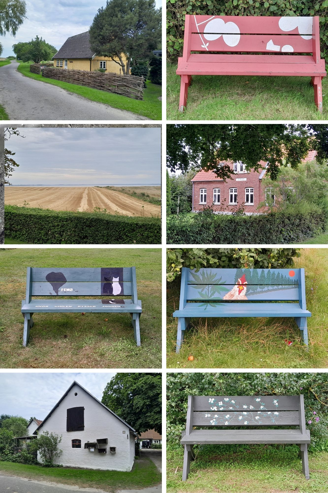

Retspsykiatrisk Ambulatorium - 2025

Træning
Jeg trænede ryg, biceps og lænd i dag.
Min tidligere advokat - "Fat Bastard"
Før jeg fik min nuværende advokat, som var den hidtil bidste, måtte jeg trækkes med hans selvhøjtidlige kollega, jeg hér kaldte "Fat Bastard". Han var en anklager i forsvarerklæder, tydeligvis på Vestegnens Politis og Anklagemyndighedens side og jeg skrev nedenstående hilsen i dag til ham:
Mail til advokat Fat Bastard
"Kære Fat Bastard
Jeg havde dig som beskikket advokat, indtil jeg skiftede.
Jeg kunne skrive følgende på Trustpilot, men jeg vil hellere skrive det privat til dig.
Du er formentlig en nogenlunde advokat til banale sager, men du skal vide, at jeg syntes, at du var nedladende og ydede et utilstrækkeligt forsvar for mig.
Det var ikke kun min opfattelse, men også min kærestes og det blev bestyrket af det faktum, at din afløser formåede det, du ikke kunne, nemlig at få overlæge og retspsykiater Peter Worm Jantzen ind som vidne.
Han udtalte under retssagen, at jeg ikke var psykotisk på noget tidspunkt og det var guld værd for min sag.
Det værste ved at have dig (og spildt penge til dit salær) var imidlertid, at du behandlede mig, som var jeg faktisk sindssyg, hvilket jeg på ingen måde har været nogensinde, samt at du ukritisk troede på Retslægerådets fejlvurdering.
Det var meget psykisk enerverende for mig at opleve. At den, som skulle forestille at være min forkæmper, mente jeg var skør og behandlede mig derefter.
Jeg kunne ikke undgå en behandlingsdom uden længstetid. Men jeg fik en hæderlig og dygtig afløser for dig og det er jeg taknemmelig for.
Jeg håber ikke, at andre nogensinde bliver behandlet, som jeg blev af dig.
Forleden erkendte Cheflæge Psykiateren, at jeg ikke er spor psykotisk. Hvilket jo er virkeligheden, og fordi din afløser pressede på, er jeg nu udskrevet til ambulant opfølgning.
Efter kun to måneder og uden at få nogen som helst behandling.
Jeg er stadig dybt fattig og arbejdsløs, så alt er ikke perfekt. Men det er så godt, som det kunne være.
Jeg har skrevet ca. 400 siders dagbog fra Vestre og retspsykiatrisk afdeling. Den bliver løbende udgivet på min blog.
Jeg nævner selvfølgelig ikke dig med navn. Jeg har virkelig lyst til at delagtiggøre omverdenen i din behandling af mig, men jeg gør det ikke.
Jeg ville klage over dig og prøve at få mine penge igen for din manglende indsats, men man skal vælge sine kampe med omhu og jeg håber at du har brugt mine penge, jeg ikke har, på noget godt.
Jeg synes overhovedet ikke, at du har fortjent én eneste krone.
Venlig hilsen,
Kjeld Andersen."
Jeg havde skrevet en hel del om præcis hvordan Fat Bastard var, og de ville løbende blive indskrevet på bloggen.
Mine bødler for retten
Jeg havde nu ét mål i livet: At få mine bødler for retten og idømt fængsel. Jeg holdt aldrig pause og jeg fortsatte så længe, jeg var i live. Hvert sekund, minut, hver time, dag, uge, måned og år ville jeg arbejde indædt på at få retfærdighed og ingen kunne true mig til at lade være med det. Jeg skulle have haft en familie og børn og karriere som læge nu, men mine bødler havde forhindret mig i dette og så troede de, at jeg kunne trynes til at "starte på en frisk". Grænseløs arrogance og ønsketænkning! Jeg nikkede til alt, Cheflægen tvang mig til, jeg smilede til ham og til Nikita, når de sad og ydmygede mig, mens jeg kun tænkte på næste skridt i mine bestræbelser på at få retfærdighed.
Dansk Psykiatrisk Selskab
Billede. Dansk Psykiatrisk Selskab.
Træning
Jeg trænede i dag ben og skuldre. Havsvømning om aftenen.
Intet som helst ændret
Min socio-økonomiske situation var præcis den samme, som før anholdelsen: Arbejdsløshed, fattigdom og en trøstesløs tilværelse, hvor jeg rådnede op. Jeg havde min kæreste og Musse, hvilket jeg var dybt taknemmelig for og som holdt mig i live, men det var det eneste positive i mit liv overhovedet. Faktisk var min situation endnu værre end før anholdelsen: Nye sagsomkostninger til advokater, der intet som helst effektivt havde gjort for mig og underlagt en behandlingsdom uden længstetid, selv om alle - også Cheflægen - vidste, at jeg var fuldstændig psykisk rask. Det var et selvmords-inducerende mareridt og det stoppede aldrig.
Ikke penge til tøj
Jeg havde få par bukser, og der var huller i alle sammen. Jeg havde syet hullet i et par bukser og et par shorts, men kønt og holdbart var det ikke. Heldigvis havde min kæreste reddet situationen, idet hun som en overraskelse havde været forbi mine forældre og fyldt bilen og traileren med alt mit gamle tøj, samt alle mine lægebøger, svømmeudstyr og meget mere. Jeg havde intet forhold til mine forældre længere takket være Gestapo-efterforskerne i Vestegnens Politi. Jeg havde en del mærketøj af høj kvalitet - Gant, Hillfiger, GStar, Carhartt, North Face, Hugo Boss, Ralph Lauren, Le Fix, Oakley og Rayban solbriller, Haglöfs tasker, Peak Performance, Nike, Adidas, Hummel og New Line sportstøj og meget andet - som var i fin stand, men dog 11 år gammelt.
Ikke sentimental
Der var mange personlige genstande, der vakte minder frem og jeg var overrasket over, at jeg ikke blev følelsesmæssigt påvirket. Det var trods alt en manifestation på, at absolut onde læger havde ødeæagt mit liv for ingenting. Læger, der havde manipuleret retsvæsenet, løjet og misbrugt deres fag, læger, der fortjente at brænde i helvede i al evighed. Jeg blev ikke det mindste sentimental. Men der ville komme en kraftig reaktion, vidste jeg, hvornår var uvidst, men den ville opstå og den ville være voldsom vrede og had. Sådan var det at være offer for psykopatiske lægesvin. Det glemte man aldrig.
Øre-problemer
Jeg var helt døv på højre øre nu, havde kraftige smerter fra mellemøret, så jeg måtte sove siddende, og det havde spredt sig til øregangen, som nu også var lukket af. Det havde stået på alt for længe, ihvertfald to uger og var kun blevet værre. Jeg havde fortalt det til sygeplejerske Nikika (og flere andre ansatte), men de havde intet gjort. Jeg havde fortalt det forleden, men man slog det hen. Sådan var retspsykiatrien - i Slagelse og andre steder.
Det summer op
Det hele summede op: Øre, tand, hudproblemer, arbejdsløshed, fattigdom, udstødelse, fornedrelse, justitsmord etc. Og en skønne dag ville det nok blive for meget. Hvad der ville få læsset til at vælte, vidste jeg ikke, men var det tænderne eller øret eksempelvis, så kunne alle læse hér, at jeg havde sagt det videre til mennesker, der fik løn for at gøre noget ved det, men som intet havde gjort. Så var det deres skyld.
Magtesløshed og søvn
Efter en nat med kraftige smerter fra højre mellemøre og øregang og dårlig søvn, var jeg stået op til en meget hed solskinsdag. Det var ubehageligt at koge i varmen og samtidig have feber, hvilket jeg klart fornemmede, at jeg havde. At rådne op om sommeren var ekstra enerverende og ude på landet var jeg fanget, som en løve i et bur. Det var aldrig min drøm at ruste op som arbejdsløs, fordi nogle paranoide og syge kællinger opførte sig som trodsige og møgforkælede to-årige lorteunger.
Jeg interesserede mig ikke for noget som helst længere og jeg havde ingen motivation til at ydmyge mig selv på jobcentret. Med min straffeattest, havde jeg ikke en chance og det havde jeg heller ikke uden. Man levede i et parallelt univers, hvis man troede, at det nyttede noget. Derfor gjorde jeg det eneste, jeg kunne nu, fastlåst som jeg var: Sov. Hvor arrogant var det ikke, at man troede, at jeg bare kunne sidde hér og lave ingenting?
Mine venner og mine bødler
Jeg talte eller skrev heldigvis løbende med mine barndomsvenner, som begge havde bevidnet GAs og MBCs psykiske vold og overgreb mod mig, deres latterlige fejldiagnoser (kronisk paranoid psykose og autisme mv), som de stillede og vidreførte i ond tro, og de var målløse og forargede over, at det kunne finde sted. Hvad de syntes om retsvæsenet og retspsykiatrien og især mine bødler, kunne jeg naturligvis ikke gengive hér, men det var ikke rosende ord. Mine barndomsvenner ville ufatteligt gerne vidne til fordel for mig. Politiet havde nægtet dette, men en dag ville det ske.
Træning
Bryst, triceps og mave. Havsvømning om aftenen.
Øreproblemer
Uændret. Jeg var helt døv på højre øre og med endnu kraftigere smerter. Jeg tog en hel del Ipren og Panodil for at holde det ud.
Dagbog fra Vestre
Jeg lagde min håndskrevne dagbog fra Vestre i plastiklommer. Jeg havde købt 120 styk og i hver lomme lå der to papirer, men da jeg havde ilagt 240 papirer og ikke flere lommer havde tilbage, manglede over 100 sider stadig en lomme. Og det var kun fra Vestre. Jeg havde skrevet, som gjaldt det mit liv. Og det gjorde det også.
Træning
Min kæreste satte mig af ved Sct. Jørgens Park Centret, hvor der lå en PureGym, den samme hvor Næstveds bonderøvspoliti havde anholdt mig den 14. januar. Hun arbejdede i nærheden og det var heldigt, at hun kunne køre mig derhen, så jeg sparede udgifter til bussen. Jeg havde som sædvanelig ingen penge og måtte spare på alt. Cheflægen havde venligt nok udskrevet mig til ambulant opfølgning, fordi jeg jo var rask, og han havde også forstået at alt, jeg havde skrevet, skyldtes især den påtvungne arbejdsløshed og fattigdom, men han havde ikke en løsning på de problemer. Han havde gjort halvvejs det rigtige. Men alligevel havde han derved fejlet 100%.
Jeg trænede ryg, biceps og lænd i dag. Den eneste glæde og variation i min hverdag var træningen og nye øvelser og træningsprinpper. Ellers rådnende jeg op. Jeg gjorde ellers hvad jeg kunne for at finde på noget at foretage mig, det være sig rengøring, arbejde i huset, laden eller haven, men jeg var ikke særlig iderig længere.
Øreproblemer
De forsatte desværre. Jeg kunne ikke huske, at jeg nogensinde havde oplevet noget lignende. Jeg var helt døv på højre øre.
"Det kan ikke betale sig at klage"
Jeg fik at vide, at det ikke kunne betale sig at klage til Folketingets Ombudsmand. Det var sikkert rigtigt, men hvad skulle jeg ellers gøre? Klageinstanser eksisterende for at undgå at myndighedsfejl resulterede i selvtægt, som i mit tilfælde. Jeg havde jo ret i, at jeg aldrig havde været sindssyg, så når jeg klagede over det, skulle jeg jo have medhold, ikke? Jeg havde imidlertid klaget over det uden at få medhold, men så var det klageinstansen, der var noget galt med, ikke jeg. Jeg havde jo objektiv dokumentation fra tredjepart, der gav mig ret. Klageinstansen havde altså bevidst ignoreret disse essentielle oplysninger og det var ikke min skyld, men den, der var skyld i pligtforsømmelse.
Jeg var ekstremt træt af dem, der fortalte mig, at jeg ligeså godt kunne give op. Havde jeg lyttet til dem, havde jeg siddet på et psykiatrisk bosted i dag som en savlende zombie. Jeg blev tidligere meget nedtrykt af nej-hattene, der ingen løsning havde, kun jantelovsagtig kritik. I dag droppede jeg bare al kontakt med dem. De ville mig det værste og var ikke værd at spilde tid på.
Kort afvist
Efter træning skulle jeg købe forskellige dagligvarer i Coop 365 i Sct. Jørgens Park Centeret. Det beløb sig til 185 kroner, men kortet blev afvist. Det var ret flovt. Jeg havde dog penge på rejsekortet og kunne få min kæreste til at overføre penge til mig, så det var ikke en katastrofe, men dybt fornedrende. Det var det, som åbenbart var så svært for andre at forstå: Havde du fået en fejldiagnose som sindssyg, så var det så utroligt gennemgribende, at du var TVUNGET til at klage til relevante myndigheder over det. Ellers var du på røven resten af dit liv. Hvorfor var det så svært at sætte sig ind i?
Alene
Konklusionen var, at ingen forstod, at jeg bare gerne ville leve et normalt liv, som det normale menneske, jeg var. Det gjorde mig meget bitter at få at vide hele tiden af idioter hvad, jeg ikke skulle gøre. Derfor var jeg alene. Omverdenen ville have, at jeg skulle acceptere en fejldiagnose som sindssyg. Det kunne jeg selvfølgelig ikke.
Forløbet
Som følge af ovenstående, var min situation eksakt som i de sidste 11 år. Meget, meget alvorlig. Det ville ikke ende godt, hvis det fortsatte. Hvis ikke Ombudsmanden eller en anden myndighed forholdt sig til virkeligheden straks, og gav mig medhold, ville det ikke ende godt. 11 år i helvede pga en fejldiagnose, havde gjort mig træt og ligeglad.
Døvhed
Jeg var i praksis fortsat døv på højre øre, men i det mindste var smerterne aftaget betydeligt. Holdbart var det imidlertid ikke, så jeg ringede til de øre-næse-halslæger, der var i området. Efter at have ventet i telefonkø i hhv. 25 og 30 minutter opgav jeg at få kontakt til dem. Jeg havde sagt det flere gange til personalet på SL11 og også til Chelægen selv, men alle slog det hen. Der var et rigtigt hospital på den anden siden af vejen ift psykiatrien, men det var åbenbart for svært for de ansatte i retspsykiatrien at arrangere, at jeg kunne få en rigtig læge til at se på mig (og den praktiserende læge Frederik, der huserede i retspsykiatrien var super ringe og arrogant). Derved cementerede psykiatrien, at det var et taber-speciale og et taber-fag, som meget lidt havde med rigtig lægevidenskab at gøre.
Cykling
Jeg udskiftede begge pedaler, pumpede slangerne og så var min cykel utroligt nok køreklar. Jeg var lidt nervøs, da jeg ikke havde brugt den i 11 år, men den fungerede udmærket, så jeg kørte ned til stranden og hoppede i vandet.
Ophævelse af behandlingsdommen
Fordi det var så åbenlyst forkert en dom, skrev jeg et brev til Vestegnens Politi den 20. april fra Vestre Fængsel vedr. ophævelse af behandlingsdommen. Jeg vidste selvfølgelig, at de ville smide brevet ud og glemme alt om det. Men jeg ville senere, når jeg havde fået ret, bruge brevet til at dokumentere, at politiet havde udvist grov pligtforsømmelse, således at jeg kunne hive betjentene i retten.
Brev til Københavns Vestegns Politi den 20. april 2025
"Vedr. ophævelse af behandlingsdom
Som jeg har skrevet til statsadvokaten for København, så vil jeg hermed anmode om ophævelse af behandlingsdommen, idet jeg ikke er psykotisk eller i en ligeartet tilstand, eller fejler noget psykisk i øvrigt. Der er heller intet behov for behandling.
Det er så tydeligt for alle, at jeg er helt normal psykisk, at det er vanvittigt, at det er lykkes politiet at få mig idømt en behandlingsdom. Hvad tænkte I på?
Overlæge og retspsykiater Peter Worm Jantzen bevidnede under retssagen, at jeg ikke var psykotisk eller i en ligeartet tilstand, og det samme konkluderede mentalundersøgelsen.
Er det ikke noget, der har undret jer? Er der virkelig ikke én eneste betjent ansat hos Vestegnens Politi, der har samvittighed og som er hæderlig?
Hvorfor er I ikke modige nok til at sige fra overfor Retslægerådet, som har anbefalet en sanktion, der er helt uden hold i virkeligheden?
Jeg vil ikke finde mig i sygeliggørelse og overgreb. I skal gøre det rigtige. Jeg er normal, ikke spor skør.
Jeg har skrevet over 300 siders dagbog om mit aktuelle ophold i Vestre Fængsel. Det har jeg været tvunget til, så alle kan læse, at jeg hele tiden har været ved mine fulde fem, og at behandlingsdommen var et klart justitsmord.
Selvfølgelig offentliggør jeg den dagbog så snart som muligt. Men jeg begår ikke samme fejl som sidst og skriver noget, som politiet i ond tro kan fordreje og bruge imod mig.
Jeg kan sagtens skrive ved navns nævnnelse hvem, der er ansvarlige for dette justitsmord og holde mig inden for lovens grænser. Det betyder meget for mig at omverdenen bliver klar over, at politi og anklagemyndighed er korrupte og samvittighedsløse, og har ødelagt mit liv med løgne.
Samt at det ingen konsekvenser har haft for de ansvarlige. Men det kan I sikkert godt forstå."
Ørelæge
Jeg stod relativt tidligt op og sad parat, da den ene af de to ørelæger åbnede. Jeg sad i telefonkø i 26 minutter og da det blev min tur, forklarede jeg sekretæren, hvad mit problem var. "Jeg har ingen tid til dig. Lægerne går på ferie om tre dage". Jeg blev ret chokeret og akut modløs, for jeg havde virkelig store gener fra mit højre øre og næsten total døvhed, jeg havde selvfølgelig forsøgt valsalva-manøvren utallige gange og anvendt øresprøjte, men intet hjalp og det var efter tre uger tiltagende ulideligt. Jeg ønskede sekretæren god ferie og afbrød kontakten. Jeg begyndte at blive desperat og ringede den anden lokale ørelæge op. Efter mange minutters venten i telefonkø fik jeg fat i sekretæren. "Ja, vi har en tid kl. 11.45". Det var fantastisk heldigt.
Voldsomt smertefuldt
Jeg var små-febril, svedende, let forkvalmet, svimmel og sløv, da jeg indfandt mig i venteværelset. Den yngre udseende ØNH-læge var venlig og imødekommende og sagde ikke mere end højest nødvendigt. Op på briksen og ligge, drejede mit hoved mod venstre og han begyndte at undersøge det ydre øre, men kunne ikke få indblik til trommehinden, hvorfor han begydte at suge. Det gjorde så utroligt ondt, at jeg måtte ligge og knuge briksens sider med hænderne og det hjalp ikke det store at trække vejret helt ned i maven. Det var virkeligt uudholdeligt og sveden begyndte at pible frem overalt.
ØNH-lægen blev ved og jeg lå pænt stille, selv om jeg ikke kunne holde det ud. "Hmm, det ser lidt mærkeligt ud", sagde han. "Du skal købe Removax og bruge det to gange dagligt i 20 minutter og så får du en ny tid på fredag". Jeg sagde, at jeg ikke plejede at være så ømfindig og takkede ham for den nye tid. Det var ingen ændring ift. min tilstand efterfølgende, så jeg kunne lige så godt tage til træning.
Træning
Jeg trænede ben og mave, samt begyndte stille og roligt ud med dødløft. Efter træningen lavede jeg udstrækning, hvilket jeg ellers ikke plejede som standard.
Opkald af Ditte socialrådgiver
Under træningen ringede telefonen. Jeg så nummeret, som var det samme, som havde ringet i fredags, hvor jeg ikke nåede at tage den. Jeg fik svær angst hver gang min mobil ringede fra ukendt nummer eller et nummer, jeg ikke kendte, så jeg havde gået og haft katastrofetanker lige siden fredag af frygt for, at det var Cheflægen, der havde besluttet at tvangsindlægge mig efter ønske fra mine bødler, så det var med bankende hjerte, at jeg svarede nu og jeg blev lettet, da det var Dittes stemme, jeg hørte.
Hun havde nu fået undersøgt, hvad jeg måtte tjene før skat og ville bare oplyse mig om det. Det havde taget flere uger og tre møder med hende at få denne oplysning, som ganske enkelt var, at jeg måtte tjene 18000 kr. før skat. Det var fint at vide, men jeg fik aldrig et job, så det kunne være lige meget. Dog var jeg nu beroliget.
Ikke penge til lægemiddel
Jeg havde ikke flere penge og kunne ikke købe Remowax, som kostede 113 kroner, så jeg måtte bede min kæreste om at overføre beløbet. Jeg havde heller ikke flere transportpenge, så også her var jeg afhængig af min kærestes velvilje. Det var heldigt, men også meget ydmygende.
Træning
Efter genbrugspladsen kørte min kæreste mig forbi PureGym, idet jeg ikke havde penge til bussen, ingen cykellås og ikke penge til én før den første. Jeg trænede bryst, triceps og lænd. Motion var stadig det vigtigste for, at jeg kunne holde torturen ud.
Mail til advokaten, Retslægerådet og cheflæge Psykiateren
"Jeg er underlagt en behandlingsdom uden længstetid for forhold, jeg ikke er skyldig i og for noget, jeg aldrig har fejlet eller modtaget behandling for.
Det skyldes, at Retslægerådets sagkyndige, Tina Gram, Camilla Bock og Jens Lund har afgivet en vildledende skriftlig udtalelse til retten og udeladt væsentlige oplysninger.
Det mener jeg er en overtrædelse af straffelovens paragraf 163.
Straffelovens § 163: "Den, som til brug for en offentlig myndighed udsteder eller afgiver en skriftlig erklæring om et forhold, hvorom erklæringen er bestemt til at afgive bevis, og som han ved er urigtig, straffes med bøde eller fængsel indtil 4 måneder."
Det er en umenneskelig og nedværdigende straf, som er ligestillet med tortur. Det udgør en alvorlig trussel mod mit liv, helbred og velfærd.
Jeg har beskrevet forløbet på: bumppavejen.github.io/bog.
Jeg har mange gange anmodet om ophævelse af behandlingsdommen, men er blevet ignoreret.
Artikel 3, 6 og 13 i EMRK er krænket. De to første skyldes bl.a. Retslægerådet, som er en partisk de facto domstol. Den sidste skyldes, at det er umuligt for mig at få tilstrækkelige retsmidler.
Fordi jeg er udsat for tortur, bliver ignoreret og fordi konsekvenserne er tæt på livstruende, offentliggør jeg snarest optagelser, som underbygger ovenstående.
Jeg skal desuden hermed indbringe sagen for EMD, hvorfor Cc. til advokaten.
Kjeld Andersen,
CPR:"
Mail til advokat Advokat
Nødråb
">Kære Advokat
Jeg er klar over, at du gør alt, du kan, og det er jeg taknemmelig for.
Men der bliver altså nødt til at ske noget.
Jeg bliver snart 44, har mistet alt og rådner op, underlagt en grotesk forkert behandlingsdom uden længstetid.
Jeg overlever ikke, hvis ikke jeg får mit liv tilbage.
Det kan ikke være rigtigt i et retssamfund at dette sker!
Jeg vil have sagen for EMD. Det er slet ikke til diskussion. Jeg har ret til at få sagen prøvet og det skal ske.
Jeg vil have de myndigheder der har ignoreret mine relevante klager stævnet. Det er også min ret.
Jeg vil have Retslægerådet stævnet for bevidst at undlade at inddrage essentielle oplysninger vedr. en erklæring til myndighederne.
Jeg har forgæves forsøgt at få juridisk hjælp i 11 år og det har resulteret i selvtægt tidligere. Det er en skændsel for et retssamfund.
Jeg vil have politianmeldt som minimum retspsykiater Gitte Ahle. Hun har bevidnet af mange udsat mig for fejldiagnoser og tortur.
Jeg vil klage over at bl.a. Gitte Ahle og Mette Brandt Christensen dikterer til Psykiateren hvordan han skal behandle mig.
Jeg vil klage over, at Psykiateren tvinger mig til at begrænse bl.a. min bevægrfrihed og ytringsfrihed.
Det er ringe at den eneste hjælp til alt er ChatGPT.
Jeg fortsætter med at offentliggøre min dagbog (bumppavejen.github.io/bog). Jeg har intet valg, når jeg åbenlyst udsættes for overgreb og umenneskelig behandling fra myndighederne.
Du må gerne kontakte min kæreste ift ovenstående. Jeg har næsten givet op. Jeg har jo skrevet det samme til dine forgængere i årevis uden held. Ingen har gidet at hjælpe med.
Jeg gentager: Det er vanvittigt hvad der foregår og det skal ophøre straks.
Venlig hilsen,
Kjeld Andersen,
CPR:"
Brev fra Region Hovedstaden
Modtog et brev fra Region Hovedstaden. Region Hovedstaden havde per mail spurgt præcis hvad, jeg ville have aktindsigt i og jeg svarede, at jeg bl.a. ville vide præcis hvem den ansatte i regionen var, der havde indgivet falsk anmeldelse og fået mig varetægtsfængslet i fire måneder i Vestre Fængsel. Region skrev blot, at man havde videresendt min aktindsigts anmodning til politiet. Jeg ville vide hvem det var, hvem der gav mig informationen var ligegyldigt.
Dagbog fra Vestre
Min næste projekt var at indskanne over 300 siders håndskrevet dagbog fra Vestre. Jeg ville lægge billederne på nettet, hvis jeg ikke nåede at indskrive den. At jeg havde skrevet i hånden, var et tegn på autencitet, og i en tid med AI var det et fremragende bevis. Og selvom alle lod som ingenting eller brugte dagbogen mod mig, så vidste jeg, at den var essentiel og det, der især ville tjene som redskab til at dømme mine bødler i retten. Det var mit næste projekt: At de kriminelle læger kom for retten. Det ville ske og min dagbog ville blive husket for eftertiden.
Mål
Indscanne, indskrive og offentliggøre dagbog fra Vestre Fængsel
Finde ud af hvem i Region Hovedstaden, der anmeldte mig falskt
Finde ud af hvem den ranglede hvidhårede mand, der overværede retssagen var. Det var vigtigt for mig at vide.
Finde ud af hvem, af mine tidligere Facebook venner, der tilsyneladende fulgte med i hvad jeg postede og brugte det imod mig. Det var let nok, jeg havde løbende lavet backup af al Facebook aktivitet. Det betød også alverden at finde dem
Finde ud af hvorfor, jeg ikke måtte have konti på de sociale medier. Det betød social isolation, krænkede mine basale rettigheder og det kunne og ville jeg ikke acceptere.
Jeg havde fået forbud mod at læse min egen journal og at søge aktindsigter. Det var klart ulovligt at forbyde mig. Derfor ville jeg gøre begge dele og jeg havde allerede fået aktindsigt fra Retslægerådet - de hundredvis af sider blev alle offentliggjort
Jeg fik at vide, at jeg skulle være helt anonym og skjult og det lød, som om jeg skulle frygte nogen. Mine bødler eller deres familier og venner, som jeg skulle være bange for. Det forstod jeg virkelig ikke. For ingen af førnævnte skræmte mig det mindste.
Hvorfor egentlig holde kæft?
Senest og for et par måneder siden havde den næstøverste placeret retspsykiater i Region Hovedstaden bevidnet i retten i Glostrup, at jeg ikke havde været psykotisk og for er par uger siden havde den øverste placeret retspsykiater i Region Sjælland sagt præcis det samme. Ergo var dommen et justitsmord og derfor havde jeg selvfølgelig lov til at skrive det overalt.
Ytringsfrihed og overlevelse
Det handlede ikke kun om min ytringsrihed; det handlde om min overlevelse og det var også af almen interesse, i al beskedenhed, at man som sagkyndig i Retslægrådet med forsæt direkte kunne lyve et menneske sindssygt, resulterende i en forkert dom i en retssag. Det var så grotesk, at det havde fundet sted og det skulle alle da vide. Hvis ikke af hensyn til mig, så af hensyn til én selv.
Øregangen forulempet
Det var uden tvivl den stærkeste smerte, jeg havde følt og samtiig også den længstvarende. Det var nu ikke fordi, at øre-næse-halslægen med de lange, slanke og nærmest feminine fingre var hårdhændet eller udygtig, for han virkede ret kompetent, men højre øregang var hævet og kraftigt inficeret og han instrumenterede og sugede og gjorde ved, som han skulle, og så gjorde det bare ekstremt ondt.
Så jeg måtte lave mange dybe vejrtrækninger og holde ud, for det var vigtigt at han fik bedst mulige arbejdsvilkår. Det så ikke godt ud, sagde han, så han ringede med det samme til akutambulatoriet og fik en tid til mig. Bagefter pressede han gaze hædet med antibiotika og binyrebarkhormon ind i øregangen. Helt ind, det føltes lidt som en voldtægt af øregangen, men også det var desværre nødvendigt. Det var ganske uudholdeligt, men det var da rart efterfølgende. Jeg fik tape over øret og sendt hjem med besked på at lade gazen sidde indtil jeg kunne få det fjernet i ambulatoriet.
Iatrogen infektion
Det var en infektion, jeg havde pådraget mig på SL11, fordi der var enkelte indlagte, der var nogle klamme svin, samtidig med at rengøringen i fællesmiljøet havde nogle mangler enkelte steder. Jeg havde aldrig i mit liv haft øreproblemer, så det var en irriterende afskedsgave fra afdelingen.
Mail til Cheflægen
Jeg skrev derefter en mail til Cheflægen og informerede ham om øreproblematikken. Jeg spurgte ham, om jeg havde lov til at tage på hospitalet til ambulatoriet, eller om min bevægefrihed var begrænset til lokalområdet, som den normalt var. Jeg skrev samtidig, at han hellere måtte kontakte de af hans paranoide og hysteriske kolleger, der dikterede min behandling og spørge dem om lov. Sådan var virkeligheden nemlig. Det der med individets basale rettigheder blev annuleret, så snart man var i retspsykiatrien. Jeg havde for længst opgivet at få relevante myndigheder til at forsvare mine menneskerettigheder, men Institut for Menneskerettigheder (især) var totalt ligeglade.
"Kære Cheflæge
Har netop været til ØNH-lægen. Jeg har en infektion i højre øregang. Om mellemøret er inddraget er uvist pga. manglende indblik.
Jeg fik isat mesh og en tid i ØNH-akutambulatoriet i Køge kl. 10.00 på mandag til fjernelse og videre behandling.
Det er ekstremt smertefuldt. Jeg tager Ipren og Panodil og har efter lægens anvisning brugt Remowax siden tirsdag, uden egentlig effekt.
Busbilletten til og fra ØNH-lægen i tirsdags og i dag, den smertestillende medicin og Remowax er eksempler på noget, jeg ikke har haft råd til. Det samme ift. turen til Køge på mandag og evt. yderligere medicin.
Heldigvis kan jeg låne penge af min kæreste. Men jeg skriver det, så du er bekendt med mine kroniske økonomiske problemer. Sådan har det været i 11 år.
Jeg skrev præcis det samme til Peter Worm Jantzen, men han valgte desværre i høj grad at ignorere det.
Nå ja, jeg er ikke klar over, om min bevægefrihed er begrænset til Næstved og omegn, men jeg tager chancen på mandag ift. Køge.
Nu har du god tid til at spørge visse paranoide og hysteriske af dine kolleger, om jeg har lov til at tage til behandling.
God weekend.
Venlig hilsen,
Kjeld."
Brev til Retslægerådet 2. februar 2025
"Kære Retslægerådet
Jeg kunne forstå på anklageren til grundlovsforhøret den 15/1-25 i retten i Glostrup, at man vil påstå, at jeg skal idømmes en foranstaltningsdom, og som argument fremfører man Retslægerådets vurdering af mentalundersøgelsen, hvor det fremgår, at jeg skulle være sindssyg (!).
Jeg er åbenlyst ikke spor sindssyg, og jeg har heller ikke været det. Følgende psykiatere har skriftligt erklæret, at jeg ikke har været psykotisk: SBJ (2015), HJ (2016, 2017), BH (2018), PWJ (2019, 2021, 2023), HR (2020) og KB (2024). Alle, der kender mig, kan bekræfte, at jeg ikke har været psykotisk, men anklagemyndigheden har ikke tilladt mig at føre vidner, og Retslægerådet er qua MBC m.fl. ikke uhildede i forhold til at vurdere ut.
De sidste fem måneder har jeg boet sammen med min kæreste, og vi har været sammen hver eneste dag indtil anholdelsen. Hun hedder [navn] og telefonnummer er [telefonnummer]. Hun er psykisk fuldstændig normal, og hun kan og vil bevidne, at jeg, så længe vi har været sammen, har været psykisk upåfaldende og normal. Men det kan hun ikke få lov til, selvom der er tale om nye oplysninger, der er af væsentlig betydning for sagen.
Jeg er ikke psykotisk og har ikke været det. Det véd Retslægerådet udmærket, men jeres urigtige konklusion sammenholdt med ovenstående betyder, at resultatet af retssagen er givet på forhånd: Jeg bliver idømt en foranstaltningsdom og tvangsmedicineret med antipsykotisk medicin, selvom jeg er psykisk rask. Jeg rådner op og mister min kæreste.
Jeg vil idømmes fængsel, fordi jeg er psykisk normal. Desværre tror min advokat, RP, på Retslægerådets urigtige vurdering. Derfor har jeg tabt allerede. Jeg vil ikke sygeliggøres eller tvangsmedicineres. Jeg vil hellere dø. Og det sker, inden jeg bliver udsat for overgrebet.
Jeg har lavet en kopi af dette brev og sendt det til min kæreste, mine forældre og mine tre bedste venner, som samtidig har bevidnet MBCs og GAs fejldiagnoser af mig (2018 og 2019).
Kjeld Andersen, CPR:, 2/2-25, celle 368, Vestre Fængsel."
Retslægerådet var altså i ond tro, da dets sagkyndige foranstaltede et justitsmord.
Brev til Retsudvalget og Ombudsmanden af 26. marts 2025
"Kære Folketingets Retsudvalg [Ombudsmanden]
Jeg skrev til jer forleden, men har desværre ikke modtaget en bekræftelse på modtagelsen af mit brev.
Jeg beklager, hvis jeg virker utålmodig, men jeg frygter virkelig at blive idømt en behandlingsdom på mandag, selvom jeg er åbenlyst psykisk normal og har været det hele tiden.
Jeg skal indtrængende bede om Retsudvalgets [Ombudsmandens] hjælp.
Venlig hilsen,
Kjeld Andersen,
den 26/3-25, Vestre Fængsel."
Brev til retten i Glostrup af 2. april 2025
"Kære retten i Glostrup
Jeg blev den 31/3-25 efter 4 års ventetid idømt en behandlingsdom uden længstetid med tvangsmedicinering og under indlæggelse.
Men som både mentalundersøgelsen og vidnet, retspsykiater og overlæge PWJ har konkluderet, så er jeg ikke spor psykotisk eller i en ligeartet tilstand. Det, jeg har skrevet på min blog, [blognavn], som jeg er dømt for, har jeg netop skrevet, fordi jeg tidligere har fået en psykiatrisk fejldiagnose, som har ødelagt mit liv, og som dokumentation for, at jeg intet psykisk fejler. Derudover er de paragraffer i 2025-forholdene, som jeg er blevet dømt for, faktuelt forkerte.
Dommen er både juridisk og medicinsk åbenlyst og eklatant forkert. Jeg er jo ikke spor psykotisk. Det ved alle: Min kæreste, mine venner, familie og Vestre Fængsel, hvor jeg er nu. Jeg har været indespærret i over et halvt år indtil videre.
Jeg vil ikke sidde hér i et år til og vente på landsretten, for jeg risikerer så at miste min kæreste. Derfor er jeg tvunget til at modtage en helt forkert og uretfærdig dom, og jeg vil blive langsomt aflivet af antipsykotisk medicin, som jeg ikke har brug for, fordi jeg er åbenbart psykisk rask (!).
Jeg har skrevet dagbog i Vestre Fængsel. Den fylder knapt 200 sider. Den offentliggøres på ovennævnte hjemmeside sammen med en kopi af dette brev, så alle i Danmark kan læse om det justitsmord, som den ældre mandlige dommer og de to yngre kvindelige lægdommere udsatte mig for.
Alle selvfølgelig med navns nævnelse, da man ikke skal kunne begå justitsmord anonymt. Alle skal vide det. Retten i Glostrup er defekt, en skændsel for retfærdigheden og har nu givet mig en dødsdom.
Det er mit liv, I definitivt ødelægger, og delvist min kærestes. Forstår I, hvor alvorligt det er? At I i ond tro har I løjet mig sindssyg, får mig tvangsmedicineret, ligeledes på en løgn?
Kjeld Andersen,
4. Syd, celle 377,
Vestre Fængsel
Den 2. april 2025"
Efter dommen i retten i Glostrup sendte jeg dette brev til selvsamme ret. Det var voldsomt psykisk traumatiserende at være tvunget til at modtage en (døds)dom, især da jeg i 2018 og 2019 var blevet truet med uberettiget antipsykotisk tvangsmedicinering af en af de førende psykiatere i landet, som nu havde anmeldt mig, hvilket havde resulteret i aktuelle dom. Den kvindelige retspsykiater holdt aldrig op med at gøre alt i sin magt for at få mig tvangsmedicineret og aflivet, og nu havde hun manipuleret retsvæsenet til at eksekvere sin vanvittige straf. Det var mig, der skulle ændre navn, mig, der skulle "forsvinde" og mig, der fik mine menneskerettigheder groft forulempet i årevis - ikke den pågældende retspsykiater. Jeg skulle trues til ikke at offentliggøre breve som ovenstående og jeg måtte ikke kontakte myndigheder og lign. Det var Danmark. Ikke Iran eller Kina.
Otittis externa
Betændelsen i øregagen var stadig ekstrem smertefuld, og den initiale, mildnende effekt af gazen, der udtamponerede øregangen, var betydeligt aftaget i løbet af aftenen i går. Faktisk gjorde trykket fra gazen så ondt, at jeg vågnede flere gange i nat og var meget tæt på at fjerne den straks, men jeg tog nogle flere Panodil og Ipren og det lykkedes mig at sove til sidst. Det var forbandet, og dagens hede gjorde det kun værre. Jeg var svimmel og havde stadig ondt i løbet af dagen og jeg var kraftigt svedende, til trods for at jeg intet lavede. Måske en komination af varmen og feber? Jeg savnede ekstremt meget at havsvømme, at cykle og at træne, men kunne ingen af delene.
Musse
Jeg holdt øje med Musse, som både elskede heden og at jage og spise bier, brombasser og hvepse. Hendes pels var for lang og tæt til at hun kunne trives i solen, men hun var ligeglad og farede rundt, indtil tungen hang ud af munden. Hun elskede livet og tænkte ikke over, at hun både blev stukket og risikerede at få hedeslag, så jeg satte ofte frisk og koldt vand ud til hende, fik hende ind med korte mellemrum og gav hende på et tidspunkt en kold skylle, så hun kunne dampe lidt af.
Men det gik til sidst ikke, at hun var ude, så jeg fik hende ind og så lå hun og jeg foran den lille ventilator og tog en lur.
Brev til Anklagemyndigheden ved Vestegnens Politi af 28. januar 2025
"Til Anklagemyndigheden ved Vestegnens Politi
Jeg er og har altid været psykisk rask, fraset banal ADD. Jeg har aldrig været tilnærmelsesvis sindssyg eller i en ligeartet tilstand.
Følgende psykiatere har skriftligt erklæret, at jeg ikke har været psykotisk: SPJ, HJ, BH, PWJ, HR og KB. Sidstnævnte udførte en mentalobservation af mig under indlæggelse i 2024 med varighed på over én måned, og fortalte mig, at han vurderede, at jeg var psykisk rask, og han anbefalede normal fængselsstraf.
Jeg har forgæves bedt politiet om at afhøre følgende vidner, der kan bekræfte, at jeg aldrig har været spor sindssyg eller psykisk unormal, og de har bevidnet GAs g MBCs overgreb mod mig: [9 vidner nævnes ved navn].
Politiet har konsekvent nægtet at efterforske objektivt foruden at afhøre vidner. Jeg har flere gange siden sigtelserne i oktober 2021 forsøgt at få sagen for retten, men er blevet ignoreret. Anmelder MBC er næstformand i Retslægerådet og flere af anmeldernes tætte kollegaer ligeså.
De seneste ca. 5 måneder har jeg været sammen med min kæreste [navn] hver eneste dag. Hun kan bevidne, at jeg ikke har været spor sindssyg. Hendes vidneudsagn skal Retslægerådet, anklagemyndigheden og retten være bekendt med.
Jeg vil acceptere en fængselsstraf uden at anke, men jeg kan og vil ikke acceptere en usaglig foranstaltningsdom og tvangsmedicinering med uberettiget antipsykotisk medicin, når jeg er åbenlys psykisk rask.
Lykkes det anklagemyndigheden at få mig idømt en foranstaltningsdom, begår jeg selvmord. Jeg vil ikke udsættes for sygeliggørelse, overgreb og vold. Hvis jeg ikke må få lov til at leve et normalt liv, som det normale menneske, jeg altid har været, vil jeg hellere dø.
Så har anklagemyndigheden tvunget et raskt menneske til at begå selvmord. Det er jeres valg, ikke mit. Og min efterladte skal jeg nok sørge for, at I bliver retsforfulgt.
Kjeld Andersen,
CPR: [cpr-nummer], Celle 368, Vestre Fængsel, Den 28. januar 2025."
Anklagemyndigheden ved Vestegnens Politi udsatte mig for psykisk tortur i tiden både før og efter justitsmordet.
Første gang i 11 år!
Jeg var i stand til presse mig ned i min gamle str. 9 Orca våddragt, og med plastikpose, badehætte og neopren hætte med hals uden på det hele, var jeg ude at havsvømme i våddragt for første gang i 11 år. Det var fantastisk og noget, bødlerne aldrig kunne tage fra mig. De havde ellers gjort et ihærdigt forsøg på at tvinge mig til selvmord med deres latterlige og åbenlyse fejldiagnoser, men selvom det havde været alt for tæt på, var det endnu ikke lykkedes for dem.

Billede. Første gang jeg havsvømmede i våddragt i 11 år!
Det var ikke befordrende for min tilstand med betændelsen i øregangen, men jeg var ligeglad.
ØNH-ambulatoriet
Jeg havde ikke sovet meget i nat, fordi det gjorde så ondt at ligge ned, men jeg nåede da afsted og kom op på briksen. Lægen var tynd, meget ung, havde lyst fuldskæg og hår og ørering i øret. I modsætning til den praktiserende ØNH-læge, havde denne et otomikroskop og jeg kunne følge med på monitoren. Han var helt anderledes nænsom, nærmest forsigtig, og jeg havde ikke brug for at knuge briksen med begge hænder, mens jeg vred mig i uudholdelig smerte, som med kollegaen.
Billede. I ØNH-ambulatoriet.
Polyppen
Inde i øregangen var en polyp, som var det udtryk lægen brugte, men som patologisk indikerede noget andet, end det, det nok i virkeligheden var, nemlig en inflammeret hudfold, der nærmest blokerede øregangen. Det var den, der havde forårsaget ophobning af stenhård ørevoks mellem den og mellemøret. Øregangen havde været nærmest helt tillukket, men gazen fra forleden havde reduceret hævelsen betydeligt. Lægen begyndte at skiftesvist at kratte i ørevoksen og suge den ud, men fik ikke gennembrudt overfladen, så der var passage til trommehinden.
Hul igennem
Lægen ville stoppe og isætte ny gaze og give mig en ny tid om en uge, men dels gjorde det ikke ondt, og dels følte jeg, at det var tæt på at lykkes for ham, så jeg bad ham om at "give los" og gå dybere og han gjorde det, indtil han havde lavet et lille hul i ørevoksen, så der nu var passage, men selvom jeg sagde, at han bare skulle fortsætte, ville han ikke mere og satte gazen i og gav fik en ny tid.
Skuffet
Jeg var glad for at han trods alt havde lavet det lille hul, men ret skuffet over, at han ikke fortsatte arbejdet, når nu det hjalp, ikke gjorde ondt og da jeg havde taget hele vejen til hospitalet. Men han var sikkert bare uerfaren og usikker, selvom han var dygtigt nok, så fred være med det. Den binyrebarkhormon creme, gazen var vædet med, ville reducere polyppen og blødgøre ørevoksen yderligere, så næste gang ville han sikkert gøre arbejdet færdigt.
Træning
Jeg var simpelthen nødt til at træne, da det var alt for længe siden sidst, så på hjemvejen tog jeg forbi PureGym og trænede ben stille og roligt. Det var lidt mærkeligt med gaze i øregangen og stort plaster hen over øret, men det gik lige.
Skandalen
Det var utroligt ydmygende og deprimerende, og ja, kriminelt, at være underlagt retspsykiatrien som åbenlyst og erklæret psykisk rask og normal, og jeg frygtede som sædvanlig næste samtale med Cheflægen og Nikita, men samtidig tænkte jeg på, hvor stor skandale, det hele faktisk var; hvis omverdenen blev oplyst om forløbet, ville man havde svært ved at tro, at den slags kunne finde sted i Danmark. Jeg vidste med sikkerhed, at hvis min sag kom i medierne, så ville det hurtigt eksplodere og folk ville blive forfærdede og vrede.
At nogle hysteriske og paranoide, syge og onde læger i ond tro havde løjet mig sindssyg og fastholdt løgnen i årevis, mens jeg havde dokumenteret det hele minutiøst, og alle så passivt til, var så vildt og ulovligt at det ville sende de kriminelle læger i fængsel. Men indtil det kom i medierne, gjorde myndighederne og de syge læger alt for at tysse det ned og lade som ingenting.
Men jeg vidste, hvor stor skandale det var, og det skulle nok lykkes mig, koste hvad det ville, at bringe sagen til offentlighedens kendskab. Og alle, der var delagtige, skulle nævnes med navns nævnenlse. Ingen skulle være anonyme.
Ulven kommer?
Det "meget farlige vejr" var mere en betegnelse, som var udtryk for click bait og manglen på rigtige naturkabte farer end det, jeg forstod ved "farligt". Det var mere "hygge farligt" vejr og noget man kunne samles om som nation, noget at gå op i og tale om. Ikke rigtigt farligt vejr, med mindre man var lavet af sukker, naturligvis. Gad vide hvilke ord, man reserverede til virkeligt farligt vejr? Hyper farligt vejr? Giga farligt vejr? Det var irriterende med al den regn, men til gengæld lærte jeg hvorfor tagrender var så vigtige, hvilket jeg aldrig rigtigt havde tænkt over, og jeg fik også rutine i at rense dem.
Øre-historien
Øret gav nu ikke anledning til smerter, gudskelov, men qua gazen, vattet og plastret, var hørelsen stadig stærkt reduceret og det forhindrede mig i at svømme og være alt for aktiv. Jeg havde stadig ingen penge overhovedet til eksempelvis Remowax og transport.
Sofie Sidor Christiansen
Træning
Jeg var simpelthen nødt til at træne, så jeg lånte penge til bussen af min kæreste, fandt et par gamle og defekte overhead earphones med ledning, som kamuflerede det store plaster, der dækkede hele øret og tog afsted. Jeg havde modificeret mit træningsprogram en smule, idet jeg dedikerede en dag til skuldre, som jeg trænede omhyggeligt sammen med mave. Jeg var ikke helt frisk endnu, men jeg kunne ikke holde ud at leve, hvis jeg ikke kunne afreagere og træne, det var det sidste, jeg havde tilbage.
Tanker om fremtiden
Jeg tænkte, at jeg ikke havde en fremtid. Men det var ikke noget nyt, sådan havde jeg haft det i 11 år. Min motivation for at foresætte livet var noget ganske andet end en fremtid. Mine bødler havde virkeligt gjort det godt. Nok lidt for godt. Omverdenen havde dertil været alt for passive, mildt sagt. Ingen af delene var særligt godt. Slet, slet ikke særligt godt. Jeg interesserede mig ikke for noget længere og glædede mig til at det sluttede.
Træning og cykling
Jeg satsede på, at det holdt tørt, efterspændte og smurte kæden, justerede højden på sadlen og så kørte jeg afsted. Jeg havde ingen penge tilbage til transport, men måtte til træning, der var for langt at gå, så jeg tog cyklen. Den fungerede perfekt, og selvom det var enormt hårdt at cykle så uvant langt, var det oplagt at gøre det. Jeg ankom til PureGym godt udmattet og skulle finde et sted at stille den relativt dyre carbon-racer og jeg havde kun to meget billige spirallåse. Løsningen blev, at jeg satte cyklen lige ud for indgangen til politistationen. Så kunne de svin da bruges til noget. Jeg trænede ryg, biceps og lænd, og cyklede tilbage. Truende, mørke skyer, men ingen regn. Jeg var aldeles udmattet da jeg kom tilbage, men havde det ubeskriveligt skønt.
Billede. Cyklede til træning og sparede ialt 60 kroner til bussen.
Øre-polyppen
Gazen var efter tre dage faldet ud, og det gjorde ikke ondt længere, men jeg kunne næsten intet høre på højre øre pga. polyppen i øregangen, som lukkede den af. Jeg havde ikke råd til at tage til ØNH-ambulatoriet og der var alt, alt for langt til at jeg kunne cykle dertil, så jeg måtte vente med behandling til den 1. Sådan var det at være ruineret og fastholdt ruineret. Andre ville ikke finde sig i mine vilkår, og hvis jeg havde været en smuk, ung kvinde ville DR og TV2 havde lavet en dokumenter om mig for længst, men for en gammel, hvid, heteroseksuel mand, som jeg, var der ingen kære mor. Alle var lige for loven i Danmark, men nogle var meget mere lige for loven end andre. Sådan var hykleriet i landet.
Bella
Sjovt navn til en stor rottweiler.
Glemt tidsbestilling
Det viste sig, at den yngre ØNH-læge, der ikke havde gjort arbejdet færdigt, også havde glemt at booke en ny tid til mig. Han sagde ellers, at han ville gøre det og at jeg skulle tjekke min e-boks for indkaldelse. Jeg erfarede det i morges, da jeg ringede til ambulatoriet for at meddele, at gazen var røget ud, hvilket lægen også havde fortalt mig, at jeg skulle gøre, hvis det skete. Sekretæren gav mig en (ny) tid. Konkret havde lægens uduelighed de konsekvenser, at jeg havde udtalte øre-gener i en del flere dage end ellers, samt at jeg måtte betale endnu en tur til Køge, selvom jeg ingen penge havde.
11 år senere
Efter tidsbestillingen cyklede jeg først til Slagelse for at afleve bøger og så tilbage. Det var en fantastisk tur på omtrent 40 kilometer. Dernæst stod den på havsvømning i våddragt. Det var anden gang efter en ufrivliig pause på 11 år. Det var super skønt, men også vanvittigt at der var gået så længe, bare pga. en dyssocial praktiserende læge og nogle rådne psykiatere. Hvad mon de tænkte på? Jeg vidste godt, hvad jeg tænkte på: At de skulle retsforfølges.

Billeder. Havsvømning i min 11 år gamle våddragt. Jeg kunne heldigvis stadig passe den.
ØNH-ambulatoriet
Jeg fik heldigvis et lift til ambulatoriet, for ellers måtte jeg aflyse, da jeg ingen penge havde længere. Da jeg ankom ca. 15 minutter før tid, fik jeg en sms om, at jeg allerede kunne gå ind i rum 21, hvor lægen var parat. Der var denne gang en lyshåret, yngre, høj sygeplejerske med en diskret piercing og markant mascare, og en slank læge under middelhøjde af svensk eller norsk afstamning, med mørkt hår og begyndende gråt fuldskæg, der var venlig og mindede mig om musikeren "E-type".
Jeg understregede venligt, at jeg ikke havde råd til at møde frem i ambulatoriet, samt at jeg var lidt ærgerlig over, at den sidste læge ikke havde gjort arbejdet færdigt. Lægen var meget forstående. Han sugede lidt og sagde, at polyppen forhindrede ørevoksen i at komme ud, hvorfor den nu var stenhård og klæbet fast til trommehinden. Han anvendte en lokalbedøvende spray ("bananspray"), som hans foregænger ikke havde brugt (og hvorfor ikke det?), og var lidt opgivende. Jeg sagde, at han måtte gøre, hvad der skulle til, da det var ulideligt, havde varet i over en måned og ødelagde hele sommeren.
Ekstra jomfru olivenolie?
Han brugte cerumenslynge og tang, samt fik sygeplejersken til at hente et større sug, og han fik dels en god klump ud og dels løsnet proppen fra trommehinden, og det hjalp faktisk en hel del, selvom det meste af proppen blev siddende. Jeg kunne bruge madolie som øredråber, sagde han. Jeg spurgte, om det skulle være ekstra jomfru olivenolie, eller om den billige var ok, han smilte og sagde, at det var lige meget. Jeg fik en ny tid, og selvom jeg var ærgerlig over, at han ikke havde fjernet klumben, så havde han gjort, hvad han kunne og også givet mig hørelsen tilbage.
Fortsat ignoreret
Jeg var fortsat ignoreret af alle myndigheder, som jeg havde rettet henvendelse til, og jeg var stadig fattig og rådnede op. Det var ikke i orden og hvis det ikke stoppede og jeg fik mit liv tilbage, ville det med garanti ikke ende godt. Jeg var vant til at blive ignoreret gennem årene, det var faktisk det, der var årsag til min katastrofale situation, men det ville ende rigtigt skidt, hvis det ikke ændrede sig meget snart. Jeg vidste, at jeg intet ville få ud af at skrive dette, men endte det tragisk, ville man i det mindste kunne læse hvorfor.

Billede. Dagens havsvømning.
Mail til Retslægerådet og Styrelsen for Patientsikkerhed
"Kære Styrelsen for Patientsikkerhed og Retslægerådet
Jeg mistede min autorisation som følge af den psykiatriske fejldiagnose "kronisk paranoid psykose".
I kender til sagen, og I ved, at seks navngivne retspsykiatere og psykiatere skriftligt har erklæret, at jeg ikke er psykotisk.
Nu er der en syvende retspsykiater, som har konkluderet det samme, nemlig, at jeg ikke er psykotisk eller i en ligeartet tilstand. Det er cheflæge Psykiateren.
Det betyder, at især retspsykiaterne Gitte Ahle og Mette Brandt Christensen bevidst har videreført fornævnte fejldiagnose – samt at Styrelsen for Patientsikkerhed har dækket over disse to lægers alvorlige pligtforsømmelser.
Styrelsen for Patientsikkerhed har også siddet det justitsmord, som behandlingsdommen er, overhørig.
Ligesom Retslægerådet kunne Styrelsen for Patientsikkerhed have forhindret justitsmordet, da I begge forinden var informeret om, at jeg var psykisk rask
Der sidder således ansatte hos Styrelsen for Patientsikkerhed og i Retslægerådet, som bevidst har svigtet deres vigtigste pligter og opgaver.
I kan selvfølgelig godt blive ved med at ignorere mig. Men det ændrer ikke på sagens alvor.
I kan læse om detaljerne på: bumppavejen.github.io/bog.
Her står også, hvilke livstruende konsekvenser jeres svigt har haft for mig.
Jeg kan ikke acceptere tingenes tilstand. Jeg vil opfordre jer til at gøre jeres arbejde.
Jeg bliver ved med at skrive til jer, politikere og medier, indtil det sker.
Jeg vil have min sag for EMD, og jeg vil have de ansvarlige læger – og ansatte i Styrelsen for Patientsikkerhed og Retslægerådet – retsforfulgt.
Jeg vil derfor opfordre jer til at anmelde de pågældende til politiet.
De vedhæftede billeder er taget inden for den seneste uge af min samlever. Det er åbenlyst for alle, at jeg intet fejler.
Min kæreste kan og vil bevidne, at jeg hele tiden har været psykisk normal.
Kjeld Andersen,
CPR:"
Træning
Jeg trænede ben og mave i dag.
Ikke tid
Jeg kunne mærke, at jeg ikke havde tid til at indskrive min dagbog fra Vestre. Den fyldte flere hundrede sider. Men jeg havde fotograferet alle siderne og delt dem med min kæreste og venner. Jeg tvivlede stærkt på, at jeg var i live om et år. Men min historie skulle ud, uanset hvad. Cheflægen skulle have lyttet til mig. Jeg ville bare gerne have et arbejde, men Cheflægen havde ikke fattet det. Det, der skete, var grotesk, et mareridt og alle så stadigvæk passivt til.
Forberedelse
Jeg gik i gang med opgaven at offentliggøre alt og skrive til Gud og hver mand. Jeg var ligeglad med hvad "nogen" havde dikteret Cheflægen, at han skulle true mig med. Cheflægen måtte vælge side: De psykopatiske københavnske retspsykiatere, der misbrugte deres stilling og fag til at ødelægge mig - eller virkeligheden, fagligheden og samvittigheden. Cheflægen havde sat sig mellem to stole, men det kunne desværre ikke lade sig gøre. Nu skrev jeg igen til medier og politikere og alle og enhver. Politikerne i Region Hovedstaden havde desværre svigtet mig igen og igen, men nu drejede det sig om deres kolleger i Region Sjælland og de var måske mere modige?
Mail til Tina G, Camilla B og Jens L
"Kære Tina G, Camilla B og Jens L (Cc. advokat Advokat)
Hvis jeg tager fejl, beklager jeg denne henvendelse, men mig bekendt har I som sagkyndige for Retslægerådet udfærdiget en vurdering af ut. til retten i Glostrup.
I denne vurdering har I udtalt, at jeg skulle lide af "kronisk paranoid psykose", uden dog at kunne konkretisere hvorfor.
I har ignoreret i alt seks psykiatere og retspsykiatere, der har konkluderet det stik modsatte, nemlig, at jeg ikke er spor sindssyg eller i en ligeartet tilstand, altså at jeg ikke lider af kronisk paranoid psykose.
I har også ignoreret, at retspsykiater Kim Balsløv har foretaget en mentalobservation af over en måneds varighed i 2024, og på baggrund af denne konkluderet, at jeg ikke er psykotisk eller i en ligeartet tilstand, hvilket selvfølgelig også udelukker kronisk paranoid psykose.
Under aktuelle retssag blev cheflæge Peter W J indkaldt som vidne og udtalte, at jeg ikke har været sindssyg, igen udelukkende kronisk paranoid psykose.
Jeg har været i behandling med Venlafaxin mod depression uafbrudt i over 15 år. Alene dette udelukker kronisk paranoid psykose.
Cheflægen har for nylig erklæret, at jeg ikke er psykotisk. Dette er ikke overraskende, da ingen mennesker har observeret mig være spor psykotisk, herunder min kæreste, jeg har været sammen med hver eneste dag 4,5 måneder før anholdelsen.
Jeg blev idømt en behandlingsdom uden længstetid pga. jeres udtalelse - som var eklatant forkert. Om I bevidst har ignoreret den meget store mængde dokumentation, bl.a. ovenstående, der konkluderer, at jeg ikke er eller har været spor psykotisk, er jeg ikke klar over.
Jeg véd derfor ikke, om I med forsæt har udfærdiget en fuldstændig forkert erklæring til retten, som har resulteret i et justitsmord - hvilket er strafbart - eller om ansatte i Retslægerådet eller andre har holdt disse helt essentielle oplysninger skjult for jer, så I er i god tro.
Jeg ved heller ikke i hvilken grad, I er inhabile i forhold til sagens anmeldere.
Det, jeg véd er, at jeg rådner op nu pga. jeres fejlvurdering og at det er en social katastrofe for mig. Jeres fejlvurdering er en reel eksistentiel trussel mod mig og det kan jeg ikke acceptere.
De vedhæftede billeder er fra sidste uge. Enhver idiot kan jo se, at jeg er normal.
Jeg sender jer kun denne ene mail og jeg kontakter jer aldrig igen. Men I skal vide, hvad I er skyld i.
Venlig hilsen,
Kjeld Andersen."
Både Cheflægen og advokaten havde min kærestes mobiilnummer og mit samtykke til at kontakte hende ad libitum. Jeg havde flere gange bedt advokaten om at kontakte hende med svar på de spørgsmål jeg havde stillet ham, men hverken han eller Cheflægen havde benyttet sig af muligheden. Jeg var meget træt af den ligegyldighed, jeg stadig blev mødt med.
Mail til DR
"Kære DR"
Det er mange år siden, jeg har kontaktet jer sidst, og der er sket det siden den gang, at jeg nu har de erklæringer og den dokumentation, jeg ikke kunne give jer på daværende tidspunkt, og som giver mig ret i, at bl.a. Retslægerådet tog eklatant fejl. Jeg er direkte blevet truet til at undlade at kontakte jer, men tingenes tilstand er desværre så grelle, at jeg ikke rigtigt har noget valg."
Jeg skrev en del mere om Gitte A, Mette B C, Retslægerådet, og mange andre, og jeg gik i gang med at samle alle optagelserne fra SL11. Der var rigtig mange så jeg skulle finde de mest relevante. Alt blev der lavet backup af først, og jeg sendte optagelserne af lægesamtalerne til mine venner for en sikkerheds skyld.
"Stop al online aktivitet"
Cheflægen ville have, at jeg skulle forsvinde helt online; denne blog, mine konti på de sociale medier, alt skulle væk og måtte aldrig komme igen. Det var meget vigtigt, syntes han.
Det var ikke Cheflægens egen ide, men derimod "nogen" (vi vidste alle, hvem det var), der tilsyneladende var besat af at stalke mig på nettet, som havde kontaktet Cheflægen og dikteret ham at krænke mine menneskerettigheder. "Nogen" ville have mig til at slette beviserne for 11 års modbydelige overgreb - hjemløshed, sult, fattigom, mishandling, falsk sygeliggørelse osv - som vedkommende var skyld i.
Jeg skulle således slette beviserne for alvorlig personfarlig kriminalitet begået mod mig selv og det var gerningskvinden, der ville tvinge mig til det. Hør her: Det kommer ALDRIG til at ske.
Cheflægen havde lovet at hjælpe mig, men havde intet som helst gjort. Jeg rådnede stadig op som fattig og arbejdsløs uden længstetid, jeg var stadig udsat for et justitsmord og jeg havde ingen fremtidsudsigter.
Det var meget frækt og provokerende af Cheflægen at tvinge mig til ovenstående. Jeg skyndte mig at lave en kopi af denne blog og jeg blev super motiveret for at fortsætte arbejdet.
Klage over Gitte A, Cheflægen, Tina G, Camilla B og Jens L indsendt til STPK
ReferenceID: 1721905, 1721903 og 1721899.
Opkald til Cheflægen
Før jeg tog afsted til ØNH akutambulatoriet, ringede jeg til Cheflægen for at spørge ham om, hvorfor han ville tvinge mig til at slette denne blog. Der var jo intet ulovligt på den og jeg var forsvundet fra Facebook og den slags. Desværre havde han ikke lige tid, men vi aftalte at jeg ringede tilbage senere.
Billeder. Jeg fejlede stadig ingenting. Desværre mente Retslægerådet, at jeg var sindssyg. Cheflægen var i sync med virkeligheden, idet han erkendte, at jeg var 100% ikke-sindssyg, men alligevel ville han have, at jeg skulle rådne op underlagt en behandlingsdom i mindst et halvt år til. Det kunne jeg desværre ikke acceptere, uanset hvad han eller andre truede mig med. Det var Kafkask og perverst at dette kunne finde sted, samt at jeg var tvunget til at slette min dokumentation for 11 års mishandling og overgreb mod mig, og det gjorde jeg selvfølgelig ikke under nogle omstændigheder.
Cheflægen skrev, at jeg skulle "lære systemets måde at tænke på", hvilket var noget bræk, da jeg udmærket vidste hvordan systemet fungerede; problemet var, at systemet netop ikke fungerede, idet jeg jo havde gjort alt rigtigt inden for systemet gennem årene, men forgæves. Systemet var defekt, og mit eneste håb var politikerne og pressen. Cheflægen skulle lære at sige fra overfor sine kollegers misbrug af lægefaget og han skulle utvetydigt støtte mig, fordi jeg var rask og fordi jeg havde fået en uretfærdig dom. Det var ikke Cheflægens skyld, men nu var det hans ansvar og han skulle gøre det rigtige.
Menneskerettighedsdomstolen
Jeg havde flere gange bedt advokaten og hans foregængere om at få min sag for EMD, men desværre ville ingen hjælpe mig. Jeg havde ingen retsmidler og jeg kunne ikke forstå hvorfor.
I ØNH-akutambulatoriet Køge
Jeg var nødt til at sælge min Ford Fiesta årgang 2000 for 30.000 kroner, da jeg i 2016 mistede min autorisation og mit arbejde, pga. fejldiagnosen, for at betale husleje.
Jeg havde stadig mit kørerkort, men ikke fysisk, da jeg havde tabt det for år tilbage, og jeg ville gerne have det genudstedt, men det var en større udfordring, da jeg dels havde mistet mit pas også, og dels ingen penge havde.
Jeg havde naturligvis ikke penge til offentlig transport til Køge, som lå på den modsatte side af Sjælland ift. hvor jeg befandt mig, så igen måtte jeg bede min kæreste om at køre mig den lange vej og jeg kunne ikke engang låne hendes bil og køre selv.
Sådan var det hele vejen igennem; jeg var helt afhængig af hende, jeg skulle tigge 'lommepenge' af hende, hvis jeg skulle have sodavand eller penge til en busbillet, og selv om det var fantastisk, at jeg havde hende, så var det stadig nedværdigende og umyndiggørende.
Fastholdt stigmatiseret
"Undskyld"
Jeg var tilregnelig og til at stole på, jeg var pragmatisk og samarbejdsvillig, og jeg forstod systemet og spillet. Men jeg kunne kun krænke mine egne menneskerettigheder til en vis grad. Jeg ville gerne være stærk nok til at udslette mig selv fuldstændig og glemme 11 års mishandling, men jeg kunne desværre ikke. "Undskyld". Især så længe jeg var underlagt en grotesk forkert behanadlingsdom uden længstetid, selvom alle var enige i, at jeg var fuldstændig psykisk rask, kunne jeg ikke droppe denne blog. Den var min eneste livsforsikring.
Retsvæsenet våbengjort
De læger og psykiatere, der havde ødelagt mit liv med fejldiagnoser, havde formået at våbengøre retsvæsenet mod mig. De havde gjort det kriminelt for mig at skrive offentligt, at jeg var psykisk normal og aldrig spor sindssyg, hvilket de i ond tro havde løjet om. Det var godt for dem, men jeg kunne ikke acceptere det. Det var drakonisk og totalitært, at jeg blev straffet af staten for at ytre, at jeg var psykisk rask, når jeg var psykisk rask. Når offentligheden fandt ud af det, ville det blive en af de største skandaler i dansk psykiatri. For ingen borgere kunne leve med, at de kunne lyves sindssyge af hævnagtige og intrigante sladderkællinger (af begge køn). Så længe jeg var fastholdt i en helt forkert og katastrofal behandlingsdom, så længe var denne blog offentligt tilgængelig. Men jeg kunne gøre noget andet. Og det var jeg i fuld gang med. Det var det bedste kompromis, jeg kunne acceptere.
Træning
Jeg cyklede til træning og stillede cyklen foran politistationen, som sidst. Jeg havde stadig ingen penge til en ordentlig cykellås (jeg havde heller ikke penge til de øredråber, jeg havde fået udskrevet forleden mod polyppen i øregangen), så det var den bedste løsning, idet jeg ikke havde penge til bussen til træningscentret. Jeg sparede tilgengæld opvarmningen. Jeg elskede at cykle og jeg kunne allerede mærke, at kroppen havde omstillet sig til de over 20 kilometer hver vej.
Charmen ved at bo på landet var, at der ikke altid var ly for vejret og på tilbagturen begyndte det at øse ned vedvarende. Jeg blev gennemblødt, men havde trods alt været så forudseende at lægge alle mine ting i en plastikpose i min træningstaske og så spillede regnen ingen rolle. Det var perfekt træning for mig at cykle de ca. 40 kilometer hver dag til træning. Dengang jeg var læge, cyklede jeg også til arbejde, hvis det overhovedet var muligt. Efter cyklenturen havde jeg det skønt i et stykke tid.
Svært nedtrykt
Jeg var svært nedtrykt til aften. Det blev jeg ofte én eller flere gange i løbet af dagen. Det, der gjorde mig så nedtrykt var faktisk ikke alt, jeg havde været igennem og det var heller ikke behandlingsdommen i sig selv. Det var, fordi det vigtigste i mit liv var lægefaget. Jeg havde fra dag ét gjort alt i min magt for at generhverve min autorisation, men systemet havde ikke givet mig en eneste chance på noget tidspunkt og jeg havde ingen juridisk hjælp fået til det.
Autorisation
Jeg skulle have haft min autorisation igen for mange år siden. Systemet havde brudt loven ved at nægte mig den. Det skyldtes de intrigante sladderkællinger, kunne jeg forstå. Hvor ondt var det ikke af dem at tage det vigtigste fra mig? Man skulle læse følgende meget omhyggeligt: Jeg skulle have min lægeautorisation igen straks og arbejde som læge på normale vilkår.
Skynd dig, tak
Vedkommende skulle skynde sig. jeg gjorde hvad jeg kunne for at holde ud, men det var næsten umuligt. Der skulle ske noget ret snart. Jeg kunne ikke falde i søvn, fordi man havde sagt at det ville blive umuligt at blive læge i Danmark. Det var pga Styrelsen for Patientsikkerhed og de sladderkællinger, der havde set sig onde på mig. Man brugte et andet ord end sladderkællinger om de pågældende. Det var dermed en dødsdom man havde givet mig. Drømmen om at blive læge var det, der holdt mig i live. Man skulle aldrig have sagt det til mig. Jeg var træt af at rådne op. Man skulle ikke have dræbt alt håb.
Træning
Jeg cyklede til PureGym i Sct. Jørgens Park, og jeg var ikke helt så frisk i benene som i går, men det gik da og vejret var fremragende og holdt tørt. Jeg stillede cyklen i stativet foran Næstved Politistation, hvor der holdt to andre cykler i forvejen og skærmede lidt for min. Jeg trænede ryg, biceps og lænd, og jeg kunne godt mærke, at de ca. 20 kilometers opvarmning havde tappet mig noget for energi. Jeg hentede cyklen, som heldigvis stadig stod, hvor jeg havde stillet den. Fraset en mild og kortvarig byge, var det høj sol og det var smukt at cykle langs markerne, som netop var blevet høstet.
Status
Jeg afventede at Cheflægens initiativ bar frugt, men jeg troede ikke på, at det ville lykkes for ham. Jeg skrev en mail til ham kl. 4 i morges og satte min advokat på som Bcc. Problemet var, at jeg jo var i hans vold og derfor ikke kunne indgå rigtige aftaler, fordi det jo krævede, at jeg havde et reelt valg. Det havde jeg ikke og jeg accepterede derfor alt, han forslog. Måske vidste han ikke, at jeg var nødt til at tale ham efter munden?
Nyt navn og usynlig online
Det var mærkeligt at have et nyt navn, og det føltes helt forkert. Det samme var tilfældet ift. min blog, om nu var skjult for alle andre end jeg. Men jeg kunne aldrig drømme om ikke at have en blog, som livsforsikring. Derfor havde jeg nu denne, som kun jeg kendte til, men som var synlig for alle på nettet.
No tengo dinero
Jeg havde naturligvis ikke penge. Nul kroner. Så jeg kunne ikke købe tandpasta og især kunne jeg ikke købe øredråber.
Opringning af advokat
Min kæreste blev opringet af min advokat i morges, mens vi sov. Min advokat ville bare sige, at han ville tage ophævelse af behandingsdommen til landsretten, da retten i Glostrup (korrupt og beskidt som den var) havde givet afslag. Han sagde, at der ikke var nogen lov om hvornår en behandlingsdom tidsmæssigt skulle ophæves, kun en norm, og at en lov ikke skulle tolkes til borgerens ugunst. Det var noget i den stil, han sagde. Jeg var søvnig og sagde ikke noget.
"Han prøver at hjælpe dig"
Min advokat sagde også, at jeg skulle lade være med at sende mails til Cheflægen på Sankt Hans (det var godt nok i Slagelse). Det ville kun skade mig, sagde han. Cheflægen var "på min side" og "forsøgte at hjælpe mig", hvorfor jeg hellere skulle tale med en terapeut. Jeg takkede ham for hans synspunkt og arbejde, men sagde ellers intet. Men jeg blev meget, meget nedtrykt og fik så svære selvmordstanker af advokatens ord, at jeg ikke kunne holde det ud, og tvang mig til at sove videre, for at slippe for at lide endnu mere.
Ingen på min side
Realiteten var, at ingen var på min side og at jeg ingen reel hjælp havde fået af nogen i systemet. Min advokat var dygtig og tålmodig, men han vidste ikke hvad han talte om, og hans råd og synspunkter var irrelevante nu. Det, jeg havde skrevet til Cheflægen, var min hudløst ærlige mening og plan. Jeg kunne ikke holde ud at rådne op længere, 11 år var nok, og det eneste, der holdt mig i live nu, var min kæreste og Musse. Jeg havde ingen anden grund til at leve, behandlingsdommen og den manglende autorisation var de eneste årsager til dette, og jeg var blev mishandlet så meget og længe, at det snart pressede mig til selvmord. Hvis jeg gjort alt, jeg formåede, kunne jeg måske holde ud en måned til.
Havsvømning
Jeg havsvømmede i dag og måtte sidde i ca. 20 minutter før jeg sprang i bølgerne, fordi det pludselig begyndte at tordne. Herefter svømmede jeg i længere tid end ellers. Det var skønt, selvom vandet var en smule grumset og der var en smule skum i vandkanten, hvilket ikke var så godt.


Billeder. Jeg havsvømmede både med og uden våddragt i dag og i længere tid end ellers.
Træning
Jeg trænede ben og mave i dag. Jeg stillede cyklen det sædvanlige sted, og lagde mærke til, at der stod en el-ladcykel, der også havde stået der forrige gang, men ikke sidst, i samme cykelstativ. Jeg var måske ikke den eneste, der benyttede mig at politiets indirekte beskyttelse? Jeg cyklede tilbage i den skarpe sol. Jeg havde aldrig været så brun, som jeg var nu, hvilket især skyldtes, at jeg cyklede så meget.
Backup og involvering af venner
De to barndomsvenner, som på tætteste hold havde bevidnet den tidligere mishandling af mig, og som jeg havde genetableret kontakten med allerede under opholdet i Vestre Fængsel, havde jeg sendt alle de nyeste optagelser til og sat dem begge ind i sagen. Udover min kæreste og hendes store bagland af venner og familie, havde jeg nu tilsvarende mine bedste venners, foruden dem selv. Det kunne godt være, at mine bødler havde magtfulde bekendte, men jeg havde rigtige venner, som var langt mere ressourcefulde end man åbenbart troede. Det var den afgørende forskel nu ift. før anholdelsen: Jeg var alligevel ikke helt alene og at udsætte mig for nogen som helst overlast ville nu ikke gå ubemærket hen.
Stop mens legen er god
Mine bødler havde stadig magt og manipulerede stadig retsvæsenet, så de kunne få politiet og retspsykiatrien til at begå overgreb mod mig, som de plejede. Men det ville jeg ikke gøre, hvis jeg var i deres sted. Jeg ville selv stoppe nu, mens legen var god.
Samlet op
Stod og ventede på bussen i landsbyen, da en bil stoppede foran mig og en kvinde spurgte, om jeg ville have et lift. Det regnede, og selvom jeg havde købt billet, syntes jeg det var uhøfligt, at afvise tilbudet.
Træning
Jeg trænede bryst og triceps.
Træning
Jeg trænede ryg, biceps og lænd i dag. Jeg cyklede til PureGym og stillede cyklen samme sted, som sidst, foran politistationen. Jeg begyndte at skamme mig over det, for jeg burde jo købe en ordentlig lås tli cyklen, men jeg havde bare ikke råd til det. Jeg måtte bruge over 800 kroner på medicin forleden, og sammen med de 611 kroner for navneskiftet, havde det væltet mit budget, så jeg havde ikke flere penge i denne måned til andet end mad. At jeg nu kunne cykle, sparede mig dog for rigtigt mange penge til offentlig transport, så det var meget positivt, og det var fremragende træning derudover.
Nyt navn officielt
Nu var mit nye navn officielt. Så alle, der kaldte mig "Kjeld" dead namede mig. Det var meget svært at vænne sig til det nye navn, men det var mit helt i uheld at jeg havde så lille et socialt netværk, at der ikke var mange personer, jeg skulle informere om skiftet.
Opkald til Cheflægen
Jeg kunne bare ikke holde ud at rådne op i uvished fortsat, så jeg var nødt til at ringe til Cheflægen i dag, for at høre om nyt. Jeg havde ikke lyst til det, men jeg vidste, at hvis jeg ikke gjorde det, ville jeg blive tiltagende indestængt. Så der var ikke rigtigt noget valg.
Telefonsamtale med Cheflægen
Cheflægen ringede mellem 7.30 og 8.00 som aftalt. Vi talte sammen i omkring 8 minutter. Det vigtigste, der blev sagt under samtalen, var, at Cheflægen udtalte "du er ikke psykotisk".
Træning
Jeg trænede ben og mave. Cyklede til PureGym, men var på hyggetur med kæresten og Mussen langs kanalen efterfølgende så cyklen røg i bagrummet, da jeg kørte med hende tilbage.
Havsvømning med våddragt


Billeder.
Havsvømning med våddragt
Træning
Bryst og triceps.
Mail til Anklagemyndigheden
"Kære anklager Irina Riismøller
Jeg skal hermed klage over din afgørelse, jf. sags nr. 2025-244889, hvor du nægter mig aktindsigt i hvem, der som ansat i Region Hovedstaden anmeldte mig i sagen med j. nr. S11-9154/2024.
Det er nødvendigt, at jeg kender identiteten af den pågældende medarbejder, så jeg kan indgive klage eller anmeldelse af vedkommende for falsk anmeldelse, samt vurdere, om der er tale om inhabilitet i forhold til modparterne i sagen.
Det er min ret at vide, hvem der er anmelder i sagen.
Du har ikke angivet nogen konkrete grunde til, at jeg ikke må få oplyst dette.
Faktum er, at jeg fik en alvorlig psykiatrisk fejldiagnose af enkelte af anmelderne i sagen. Denne fejldiagnose har resulteret i arbejdsløshed og hjemløshed, selv om den er berigtiget mange gange siden.
At jeg har begået ligeartet kriminalitet er ikke et validt argument, idet de ord, jeg har anvendt, er et direkte resultat af de meget alvorlige, negative konsekvenser af førnævnte fejldiagnose, og sådan har det været ift. begge domme.
Præmissen for dommene er faktuelt forkert, nemlig at jeg skulle være psykotisk eller i en ligeartet tilstand. Det har jeg aldrig været, hvilket nu syv psykiatere og retspsykiatere har konkluderet skriftligt.
Jeg har sendt disse erklæringer til Vestegnens Politi, som har valgt at ignorere dem. Mentalundersøgelsen af 2024 konkluderer, at jeg ikke er psykotisk eller i en ligeartet tilstand og anbefaler almindelig straf.
Retspsykiater og cheflæge Peter Worm Jantzen udtalte under vidneansvar under retssagen, at jeg aldrig har været psykotisk eller i en ligeartet tilstand.
Cheflæge og retspsykiater Cheflægen, som aktuelt varetager behandlingsdommen, har mundtligt og skriftligt erklæret, at jeg ikke er sindssyg eller i en ligeartet tilstand.
Jeg har aldrig modtaget behandling for psykose, idet jeg aldrig har været psykotisk eller i en ligeartet tilstand.
Som du måske kan fornemme, var begge behandlingsdomme dokumenterbart forkerte, og i forhold til den aktuelle dom er det så åbenlyst, at den var forkert, at det skriger til himlen.
Jeg kan ikke acceptere, at du forhindrer mig i at vide, hvem der er skyld i den aktuelle dom, så jeg kan gå rettens vej for at få retfærdighed, og derfor klager jeg over din afgørelse.
Må jeg offentliggøre denne mail?
Det er i almen interesse at vide, hvordan Vestegnens Politi, ved bevidst at undlade at følge objektivitetsprincippet, først har fået mig idømt en eklatant forkert dom og bagefter bruger den forkerte dom som argument for at nægte mig oplysninger, som er nødvendige for min retssikkerhed.
Venlig hilsen."
Mail til Cheflæge
"Kære Cheflæge
Ad beskæftigelse
Tusinde tak for din indsats ift. at hjælpe mig med at komme i beskæftigelse. Det er mit højeste ønske og løsningen på snart sagt alle mine problemer.
Ad ADD
Blot for en god ordens skyld, skal jeg nævne, at min tilstand er mest foregentlig med ADD, med især det meget udtalte dagdrømmeri, opmærksomhedsproblemerne og indadvendtheden. Jeg har aldrig nogensinde været det mindste fysisk udadreagerende, tværtimod.
Ad Concerta
Jeg har aldrig været spor psykotisk og medicin som Concerta har aldrig induceret psykoselignende symptomer, heller ikke øget aggressivitet. Det forholder sig lige omvendt.
Jeg har siden 2019 af overlæge og retspsykiater Hans Raben og herefter af cheflæge og retspsykiater Peter Worm Jantzen været i behandling med Concerta uden nogen bivirkninger og med eklatant gavnlig effekt.
Jeg har været under meget tæt opsyn af førnævnte i flere år, mens jeg har modtaget behandlingen, og den har aldrig voldt nogen som helst problemer.
Jeg har i flere år modtaget 18 mg Concerta mere om morgenen, end min aktuelle dosis. Det har retspsykiaterne og jeg erfaret er den optimale dosis, og så sent som i Vestre Fængsel indtil overflyttelse til SL11 den 1. maj, var det den dosis, jeg modtog.
Under indlæggelsen på SL11 har de faste, daglige rutiner i nogen grad kompenseret for den lavere dosis. Men nu hvor jeg er udskrevet og uden noget at tage mig til, føler jeg ikke, at den er tilstrækkelig.
Jeg gør alt, jeg kan for at få indhold i hverdagen, især er jeg dagligt fysisk aktiv med træning, cykling og svømning, og jeg læser avis og bøger, men det er ikke nok.
Selvom det kun drejer sig om 18 mg til, så betyder det meget, fordi jeg har modtaget den dosis fast i så mange år, og fordi jeg selv må skabe struktur og rutiner.
Jeg kan garantere dig for, at 18 mg på absolut ingen måde vil gøre mig spor psykotisk, jf. ovenstående. Til gengæld betyder det enormt meget for mig ift. at skabe mig en tilværelse og komme ud af retspsykiatrien og tilbage i samfundet igen.
Jeg møder gerne op på ugentlig basis, skulle du finde det påkrævet at monitorere mig hyppigere, hvis jeg får min normale dosis Concerta.
Det er selvfølgelig dig, der er eksperten, men jeg mener i al ydmyghed, at man lige så godt kan give mig den behandling, der dokumenteret virker bedst, især når intet taler imod.
Venlig hilsen."
Besøg af ven
Træning
Jeg trænende ryg, biceps og mave i dag.
Mail til Vestegnens Politi, Anklagemyndigheden, Advokatsamfundet
"Jeg havde egentligt besluttet mig for at lægge anklager Rasmus Kim Petersens justitsmord af 31. marts 2025 bag mig, men som afslaget på aktindsigt illustrerer, så er det desværre ikke muligt; fordi andre ansatte i Vestegnens Politi tror på den forkerte dom og behandler mig derefter.
Udover at informere politiet og anklagemyndigheden om, at endnu en cheflæge i retspsykiatrien har konkluderet, at jeg ikke er spor psykotisk, så får I de vedhæftede billeder, taget af min kæreste, som jeg var sammen med hver eneste dag i 4,5 måneder forud for anholdelsen og som aldrig har oplevet mig spor mærkelig og absolut ikke sindssyg.
Billederne er alle taget i løbet af de senere to uger. Ligner jeg en person, der er sindssyg? Vestegns Politi har løjet mig sindssyg, selvom jeg er åbenlyst rask. Det er faktisk ret alvorligt. Og det har meget store konsekvenser for mig.
Jeg var godt klar over, at politiet, som alle andre myndigheder, begår fejl engang imellem. Det kan ikke være anderledes, taget jeres arbejde i betragtning.
Men at I i ond tro får mig dømt kronisk sindssyg, selvom I ved, at jeg er fuldstændig psykisk rask, det troede jeg alligevel ikke, I var samvittighedsløse nok til at gøre. Det er ret hard core.
Venlig hilsen."
Mail til Retslægerådet
"Kære Retslægerådet
Jeg har rådnet op i 11 år indtil videre og jeres bevidst fejlagtige erklæring til retten fastholder mig i en ulidelig tilværelse.
Det er umenneskeligt og jeg kan ikke acceptere det.
Sidst jeg forsøgte at gå til pressen var i 2020, men det var et halvhjertet forsøg og jeg havde ikke tilstrækkelig objektiv dokumentation.
Det har jeg nu. Mere end rigeligt og med flere yderst vigtige optagelser, der helt utvetydigt beviser at Retslægerådets sagkyndige, Tina G, Camilla B og Jens L med vilje afgav en falsk erklæring til retten om mig.
Retslægerådet har haft lang tid til at berigtige jeres fejldiagnose.
Jeg kan ikke vente længere og derfor går jeg til pressen. Jeg véd at I har været så korrupte at man vil være meget interesseret i at bringe historien.
Jeg bryder mig ikke om at stå offentligt frem, men I giver mig intet valg og derfor gør jeg det. Jeg går all in, og uanset hvordan, så vil det lykkes for mig.
Venlig hilsen."
På øen

Billeder. I sommerhus.
Træning
Jeg trænende bryst og triceps i dag. Det var på vej til sommerhuset på øen.
I sommerhus
På øen.
Havsvømning med våddragt
På øen.


Billeder.
I sommerhus
Havearbejde og havsvømning, besøg af S, aftensmad på havnen.


Billeder.
Havsvømning
To gange. Timers hårdt havearbejde. Rundtur til fods på hele øen. Frokost på havnen.
Havsvømning
To gange.
Working hard
Working hard
Havsvømning
Socialisering
Med to naboer.
Exit Insula
Sammen med ven
Havsvømning
Super varmt.
Træning
Jeg cyklede til træning i dag. Da jeg forleden var sammen med min barndomsven, fik jeg købt en ny slange til min cykel. Ventilen på den gamle slange var defekt, så jeg kunne ikke lappe den. En ny slange kostede 59 kroner i Fri Bike i Haslev, og det kostede 60 kroner at tage bussen til og fra PureGym, så det var en god investering. Jeg turde ikke se, hvor meget jeg havde tilbage på min konto, og sådan havde det været hele måneden, så det var med lidt bankende hjerte, da jeg skulle betale for slangen, men det lykkedes heldigvis. Jeg trænede bryst, triceps og mave. De fem dage i sommerhus, hvor jeg ikke havde kunnet løfte vægte, havde sat min form mærkbart tilbage, så jeg kunne ikke trænede med samme vægt, gentagelser og sæt, og det var virkeligt hårdt. Jeg havde dog også svømmet to gange hver dag på sommerhusferien, og arbejdet de resterende af de vågne timer med meget hårdt havearbejde, så det spillede måske også en rolle.
Billeder. Typisk dansk: Gravhøje, vindmøller, nyhøstet marker og sommer sol. Kunne ikke dy mig for at købe et nedsat festivaltelt, en model, jeg tvunget af retspsykiatrien havde boet i månedvis i. Skam jer, pseudo-læger.
Forberedelse til medierne
Jeg fortsatte med at forberede kontakten til journalisterne i morgen. Jeg kunne selvfølgelig ikke vente og tage hensyn til et defekt system med korrupte ansatte. Jeg havde ventet i 11 år indtil videre i dyb fattigdom og hjemløshed, og selvom jeg ikke var hjemløs længere, så var jeg stadig dybt fattig.
Havsvømning og cykling
Jeg cyklede ca. 50 kilometer i dag og havsvømmede en smule om aftenen.
Træning
Jeg cyklede til PureGym og trænede ryg, biceps og lænd, og cyklede herefter tilbage. Det var en distance på ca. 40 kilometer.
Mail til anklagerne Henrik P og Anette V
Jeg skrev en ufortjent venlig og høflig mail til de to anklagere fra hhv. Vestegns Politi og statsadvokaten i København, hvor især anklageren fra førstnævnte var meget direkte skyld i justitsmordet. Jeg vedhæftede fire billeder af mig taget inden for den seneste måned, for at illustrere, at jeg faktisk var psykisk helt normal. Jeg skrev i mailen, at jeg ikke ville offentliggøre indholdet nogen steder, samt at formålet med den ikke var at pege fingre af dem, at jeg ikke ville sende de to flere mails, men at det var vigtigt for mig at informere dem begge om resultatet af retssagen. Jeg skrev meget mere til de to, men qua mit løfte om ikke at offentliggøre indholdet, kunne jeg ikke skrive mere hér. Det var vigtigt at de vidste, at jeg var udsat for et justitsmord, samt at pressen ville kunne søge aktindsigt i mailen og bringe indholdet.
Havsvømning
Jeg havsvømmede uden våddragt til aften. Det var en smuk og varm sommeraften og bølgerne var relativt høje, så jeg blev kastet rundt og jeg elskede det. Jeg svømmede en længere distance, så det i varighed og intensitet nærmede sig en egentlig svømmetræning. Det var først, da jeg begyndte at fryse i en grad at det påvirkede min teknik, at jeg gik op igen.
Havsvømning
Havsvømmede med våddragt til aften en længere tur. Vandet var perfekt stille, dybden var god og sandet på havbunden var uden tang, vandplanter og sten. Det var blevet mærkbart koldere på bare to dage og det virkede unægteligt som efteråret havde holdt sit indtog. Med det udstyr jeg havde som supplement til våddragten, kunne jeg svømme til vandtemperaturen var ned til ca. 12 grader.
Sammen med ven
Jeg hjalp en ven med at slæbe fliser det meste af dagen. De vejede ca. 41 kilo hver, så det var en slags styrketræning.
Fremtiden
Jeg levede fortsat fra dag til dag, som jeg havde gjort det i omkring 11 år indtil videre. Det var vanvittigt, at det kunne finde sted og det var vanvittigt at den så eklatante løgn ikke var blevet korrigeret for år siden og jeg havde fået erstatning. Cheflægen forsøgte at manipulere mig til at tro, at han hjalp mig, men jeg vidste jo at han sad i samme grupper som mine bødler, så det var ren gaslighting.
Mit liv var stadig ødelagt og skulle jeg blive diagnosticeret med en kræftsygdom, med en prognose i forhold til overlevelse på et år eller derunder, så vidste jeg godt, hvad jeg straks ville gøre.
Træning
Jeg trænede bryst, triceps og mave og for en gangs skyld tog jeg bussen.
Ingen penge tilbage
Jeg tog mod til mig og tjekkede min saldo for første gang i denne måned. Jeg havde under 100 kroner tilbage.
Træning
Jeg cyklede til og fra træning i PureGym, en tur på omkring 40 kilometer i alt og jeg trænede ryg, biceps og lænd.
Have- og husarbejde
Jeg brugte en del timer på at opsætte hegn og pudse vægge med pustepudseren. I går havde jeg også opsat hegn og i uges løb lavet en del yderligere havearbejde, herunder slået det kæmpe græsareal. Noget måtte jeg tage mig til.
Sms'er til Cheflægen
Jeg skrev nogle sms'er til Cheflægens arbejdstelefon. Det var en falliterklæring, at jeg var nødt til at gøre det, men det var ham, der havde fejlet, ikke jeg.
All-in på medierne
Jeg rådnede op og blev ignoreret af alle. Det gik ikke længere, så nu gik jeg all-in ift. at komme i medierne. Cheflægen havde fejlet eklatant og det samme havde min advokat.
Levede kun pga min kæreste
Jeg var igen i dag i kontakt med begge de to barndomsvenner, der havde bevidnet hele forløbet. Især Gitte As falske sygeliggørelse af mig og den mishandling hun udsatte mig for. Jeg levede kun pga min kæreste. Forbandet være dansk psykiatri.
Havsvømning med våddragt
Træning
Jeg fik et lift til PureGym i dag, hvilket var et held, da jeg ikke havde penge til bussen og ellers skulle cykle. Jeg havde vejet mig i går og jeg vejede nu 91,4 kg, hvilket var et vægttab på ca. 4 kilo siden sidste vejning, som havde været på SL11. Jeg var helt sikker på at vægttabet var resultatet af min påbegyndte cykling og jeg kunne ret tydeligt se det på kroppen. Men det var også lidt hårdt at skulle cykle ca. 4o kilometer hver gang jeg skulle træne, så jeg var glad for liftet.
Dagen før ambulatoriet
Jeg skulle i ambulatoriet i morgen, og jeg var fra i foregårs begyndt at få det psykisk tiltagende dårligt med katastrofetanker, irritabilitet, dårlig nattesøvn og nedtrythed. Det var slemt til aften og jeg tænkte, at den eneste måde, jeg kunne undgå det svære ubehag var selvmord. For Cheflægen nægtede at ophæve behandlingsdommen uden længstetid før jeg havde skaffet et arbejde. Det var så nedrigt og ondt, at jeg ikke kunne finde ord for det. Jeg havde jo forgæves forsøgt at finde et arbejde før anholdelsen, jeg havde søgt ca. 40 ufaglærte jobs og den desperation det havde afstedkommet, havde resulteret i anholdelsen.
Intet respons på mails og sms'er
Jeg havde intet respons fået på mine mails og sms'er til Cheflægen, men han var selvfølgelig også en meget travl mand. Min advokat havde advaret mig mod at kommunikere skriftligt med Cheflægen, da mine mails ville blive brugt i mod mig, men hvad fanden var det for noget sludder at sige? Fattede advokaten ingenting? Troede han at mine mails var for sjov? Havde jeg følt, at min advokat tog mig alvorligt og havde han opnået bare det mindste resultat for de adskillige tusinder af kroner, han havde kostet mig, havde jeg selvfølgelig ikke offentliggjort mine mails til ham hér:
Mail til advokat den 22. august 2025
"Kære Advokat
Bare en kort status:
Min situation er fuldstændig uændret:
Jeg har endnu ikke i de 11 års påtvungne helvede, jeg befinder mig i, fået reel hjælp af nogen som helst.
Jeg vil have min lægeautorisation igen, og jeg har brug for din hjælp til det.
Jeg har ikke fået en eneste chance for at få den, trods talrige forsøg i 11 år, og det er helt uacceptabelt, at ingen advokater, jeg har tigget og bedt om hjælp, har taget mig alvorligt og hjulpet mig med det.
Jeg ved ikke, hvorfor du tror, at Cheflægen er på min side, for det er han ikke, og han har intet foretaget sig, som giver anledning til at det skulle være tilfældet.
Jeg har nu indskrevet min dagbog fra opholdet på SL11, og jeg gør alt for at få pressen til at interessere sig for min situation. Det lader desværre til, at være min eneste chance for at overleve på sigt.
For en god ordens skyld skal jeg endnu engang venligst bede dig om at bringe ophævelse af behandlingsdommen for Højesteret eller EMD.
Jeg har også brug for juridisk bistand til at stævne Styrelsen for Patientsikkerhed eller en anden myndighed med henblik på autorisationsgenerhvervelse. Også dette skal om nødvendigt til Højesteret eller EMD.
Jeg har ret til effektive retsmidler, og når andre kan få deres sager for national ret og EMD, så vil jeg selvfølgelig også have samme muligheder.
Mine menneskerettigheder er dokumenterbart blevet groft krænket igen og igen, men alligevel har alle ladet som ingenting – og det fortjener jeg ikke.
Du behøver ikke at ringe til mig eller min kæreste, medmindre der er positive nyheder.
Tak for din tid og hjælp.
Venlig hilsen,
Kjeld Andersen
CPR:"
Agenda i ambulatoriet
Uagtet at Cheflægen ikke havde falsk sygeliggjort mig, fejlbehandlet eller tvangsmedicineret mig, var det alligevel nu psykisk vold at jeg var tvunget til at møde op i ambulatoriet. Det var uretfærdigt for Cheflægen, at hans kolleger havde traumatiseret mig så svært, for det gik en smule udover ham, men det var værst for mig. Og den sygeplejerske, der skulle deltage i samtalen, vidste ikke med sikkerhed at Cheflægen anså mig for ubetinget rask, så hun kunne let uforvarende behandle mig nedværdigende, havde hun ikke læst om mig i journalen. Modsat Cheflægen, som havde fortalt at han aldrig på forhånd havde en agenda til samtalerne (hvilket ellers kunne mindste min angst og nedtrykthed en hel del, hvorfor jeg havde bedt ham om det), så spillede jeg altid med åbne kort. Min agenda var:
Beskæftigelse.
At få korrigeret hele narrativet om mig, så det var i overensstemmelse med virkeligheden.
At fortælle Cheflægen hvor psykisk nedbrydende det var at skulle have noget med retspsykiatrien at gøre.
At få annerkendt at jeg havde fået en alvorlig fejldiagnose, som havde haft ekstreme negative konsekvenser for mig.
At Cheflægen accepterede, at jeg havde ret til at have denne blog.
Ikke på agendaen
Jeg havde forlængst italesat og skrevet til Cheflægen at behandlingsdommen skulle ophæves, samt at jeg skulle have min autorisation igen. Så der var ingen grund til at gentage de ellers essentielle emner. Jeg plejede at fotodokumentere min hverdag, så jeg til eksempelvis Cheflægen kunne dokumentere min normalitet, men jeg gad simpelthen ikke at gøre det længere. Jeg havde arbejdet i haven i fire timer i dag med opsætning af hegn og rydning af et temmelig stort bed, som jeg havde gravet helt op, og det burde jeg have fotodokumenteret, men igen: Til hvilken nytte? Alle var jo ligeglade med virkeligheden alligevel.Kæreste ikke med
Jeg havde belastet min kæreste alt for meget med hele sagen, og hun havde deltaget i alle møder i retspsykiatrien indtil videre, men nu skulle det stoppe. Hun skulle ikke bruge tid og energi på at deltage i møder, det var spild af tid at hun var med, det var ydmygende for mig, fordi det var en indirekte accept af at det var nødvendigt med en støttepædagog, og som psykisk rask kunne jeg svare på samtlige spørgsmål om mig selv, det skulle min kæreste ikke gøre for mig. Så jeg bad hende om at blive væk i morgen. Det var det værste bullshit at jeg skulle møde i ambulatoriet, det var grotest og et skuespil, al den stund at jeg jo intet fejlede. Jeg var stadig rask. Det ville jeg sige til Cheflægen, og så var den ikke længere.
De sidste forberedelser
Jeg lå i sengen og klokken var lidt over 23. Jeg lavede de sidste rettelser i min tekst. Jeg var nødt til at fortælle Cheflægen hvor modbydeligt retraumatiserende det var at være underlagt retspsykiatrien som rask. Hvorfor havde han ikke indlevelsesevne til at indse det? Han havde jo på ingen måde hjulpet mig, så han havde ingen argumenter for at fastholde mig i den helt uretfærdige dom. Forløbet og dommen havde udelukkende skadet mig. Ikke Cheflægen personligt, men det system han var en vigig del af.
Mod til at sige fra
Jeg måtte mobilisere mod til at sige fra overfor Cheflægen i morgen. Han ville sikkert blive vred, fornærmet, gå i forsvarsposition og måske tvangsindlægge mig eller på anden måde straffe mig for det, men jeg var ligeglad. Tiden for løbet ud for længst.
Mails til samtlige politikere
I morgen ville jeg skrive til samtlige politikere i Folketinget. Herefter i Regions rådene. Og jeg ville også ringe til dem i morgen. Enten eller. Cheflægen måtte forstå, at jeg ikke gad mere.
Psykisk vold i ambulatoriet
Jeg ankom præcis kl. 11.00 i retspsykiatrisk ambulatorium, og tog cyklen op på skulderen op til 1. sal, hvor Cheflægen, en sygeplejerske og en sagsbehandler fra Kriminalforsorgen sad parat. Jeg havde medbragt min kærestes gamle iPhone til at optage, foruden min egen mobil, men optageappen til iPhonen var ikke installeret, så jeg nåede kun at optage samtalen på min egen. Jeg stod faktisk og fumlede med iPhonen, da Cheflægen hislte på mig. Jeg forklarede, at jeg ikke havde penge til en ordentlig lås, hvorfor jeg undtagelsesvist havde taget cyklen med op.
Cheflægen veloplagt og smilende
Jeg var helt kvæstet efter cykelturen, hvilket nok skyldtes havearbejdet fra i går, så jeg var svedig, lettere svimmel og ikke helt på toppen, men heldigvis vidste de andre til mødet hvorfor. Cheflægen var netop kommet hjem fra ferie og havde intet hørt fra Forsvaret, som han havde været så venlig at skrive til på mine vegne, hvis de havde en stilling som pedel eller lignende på kassernen. Det var en ligegyldig gestus fra Cheflægen af, idet jeg jo skulle være læge og ikke pedel, men jeg var alligevel enormt skuffet over, at der intet var sket.
I kødet på Cheflægen
Da Cheflægen intet havde leveret og da jeg rådnede op, fordi selvsamme retspsykiater nægtede at ophæve dommen, selvom han havde erkendt, at jeg intet fejlede, fra starten af, vidste jeg nu, at han ikke var på min side og den fortrolighed, han havde bildt mig ind eksisterede mellem ham og jeg, gjaldt ikke længere. Det havde været et røgslør fra Cheflægen af, egnet til at jeg afventede, holdt min kæft og rådnede op. Cheflægen sagde så, at han allerede havde forklaret damen fra Kriminalforsorgen om mig og min sag. Men da jeg nu vidste, at Cheflægen ikke var til at stole på, forklarede jeg hende kort den rigtige sammenhæng. Jeg sagde til hende og Cheflægen, at det var en grotesk forkert dom, og at jeg undrede mig meget over at Retslægerådet bare havde ignoreret mentalundersøgelsen, som konkludere, at jeg var psykisk normal.
Jeg sagde også, at jeg skulle have dommen ophævet, da jeg jo intet fejlede. Hér blev Cheflægen vred og sagde, at han ikke ville gøre dette endnu, samt at jeg jo "bare kunne tage den til EMD, hvis jeg ville". Det var præcis min hensigt, svarede jeg ham. Det viste sig, at Cheflægen ikke engang havde læst mentalundersøgelsen og han indrømmede blankt, at det var rigtigt at Retslægerådet bare havde forkastet den. Jeg fortalte Cheflægen og damerne, at mit liv var ødelagt af fejldiagnoserne, samt at jeg jo var blevet "kriminel" alene fordi, jeg ikke måtte arbejde og ikke kunne finde et arbejde, selv om jeg jo havde søgt 40 ufaglærte jobs. Det brød Cheflægen sig ikke om at høre, lod det til. Heller ikke, at jeg sagde, at der indtil vidre intet var sket og at jeg ingen som helst hjælp havde fået.
Optog samtalen
Hvordan ordene faldt under den lange samtale, kunne jeg ikke gengive præcist. Heldigvis fremgik det af optagelsen, som efter Cheflægens svigt med nok ville blive offentliggjort på et tidspunkt. Cheflægen var i min optik hjerteløs. Han havde ingen forståelse for min situation, han var ikke på min side og han havde ikke sat sig særligt meget ind i min sag. Cheflægen lod til at være Retslægerådets mand, og det, han bedrev med mig, havde intet med psykiatri at gøre. Jeg skrev dette og meget mere til ham på vej hjem efter mødet. Jeg var dybt nedtrykt og modløs og det var Cheflægens skyld.
Samtale med medlem af Retsudvalget
Jeg ringede efter samtalen til et medlem af Retsudvalget, som jeg talte med i relativt lang tid. Det blev ikke sidste gang, jeg kontaktede vedkommende. Jeg fortalte om Cheflægen og Retslægerådet og hvordan jeg rådnede op pga. en bevidst fejlagtig behandlingsdom.
All-in nu
Det var trist at Cheflægen havde ignoreret det, jeg havde skrevet til ham i de sidste måneder, for nu tvang han mig til at gå all in og ringe til samtlige politikere og medier. Det ville jeg gøre allerede i morgen og fortsætte med det. Jeg ville aldrig holde op og jeg offentliggjorde alt på alle sociale medier. Modsat tidligere, var jeg ikke alene, men havde stærke pårørende. Målet var dels at få dommen ophævet, dels at få autorisationen igen og endeligt at få de læger, der havde mishandlet mig og givet mig fejldiagnoser i ond tro, sat i fængsel.
Billede. På vej til retspsykiatrisk ambulatorium. Det var vigtigt at dokumentere min normalitet før samtalen med Cheflægen, skulle han finde på at straffe mig med tvangsindlæggelse.

Billede. En aftensvømmetur med kæresten og Musse. Det var psykisk vold at skulle tale med Cheflægen og jeg fik selvmordstanker både op til og efter møderne med ham. Det hjalp en smule at tage en svømmetur. At fastholde mig som erklæret psykisk rask i en uberettiget behandlingsdom uden længstetid, fordi Retslægerådet var inhabilt og korrupt, havde intet med psykiatri at gøre. At udsætte mig for psykisk vold og at indskrænke mine basale frihedsrettigheder, fordi læger, der havde fejlbehandlet mig dikterede det, var en utilgivelig forbrydelse.
Sygeliggørelse nu er en straf
Hvis Cheflægen efter dagens samtale pludselig skiftede mening om mig, fra at han anså mig for fuldstændig psykisk normal, som han lige fra starten af havde sagt flere gange, til at jeg efter dagens samtale ifølge ham var psykotisk, var det en reaktion på min indfølelige og berettigede kritik af behandlingsdommen og Retslægerådet og intet andet end en ulækker straf og løgn.
Mail til Dansk Psykiatrisk Selskab
"Som Dansk Psykiatrisk Selskab formentlig ved, blev jeg den 31. marts 2025 idømt en behandlingsdom uden længstetid.
Dette fordi, at retspsykiaterne CB, TG og JL, som sagkyndige for Retslægerådet, bevidst ignorerede mentalundersøgelsen af 2024, som konkluderede, at jeg ikke var psykotisk eller i en ligeartet tilstand.
De ignorerede også flere års journalmateriale, samt psykiatriske og retspsykiatriske speciallægeerklæringer, der konkluderede, at jeg var psykisk rask og ikke spor psykotisk.
Ingen af de tre sagkyndige har nogensinde set eller talt med mig, og de har udfærdiget en erklæring til retten, som er bevidst forkert.
Jeg ved jo godt, at ihvertfald to af de sagkyndige har arbejdet tæt sammen med især næstformand i Retslægerådet, MBC, som dels er anmelder i sagen og dels har givet mig en eklatant psykiatrisk fejldiagnose i 2019, sammen med GA.
Det er pudsigt nok præcis samme fejldiagnose, som Retslægerådet nu har videreført (kronisk paranoid psykose), selvom den er grundigt tilbagevist flere gange og selvom de ikke kan konkretisere hvorfor, jeg skulle lide af denne.
Den aktuelle behandlingsansvarlige overlæge har fra dag ét fortalt, at han heller ikke mener, at jeg er spor psykotisk og det har han fastholdt hele tiden (jf. mine optagelser og vidner). Alligevel nægter han at ophæve behandlingsdommen.
Jeg ved af erfaring, at I i Dansk Psykiatrisk Selskab er ligeglade med selv yderst katastrofe fejl, jeres medlemmer begår i ond tro. At I ser igennem fingre med de psykiatere og retspsykiatere, der helt åbenlyst misbruger deres stilling og fag til at ødelægge andre mennesker.
Jeres tidligere forperson var en af dem, der gjorde det, da hun bevidst løj mig kronisk sindssyg, selvom intet af hendes personale nogensinde skrev, at jeg var andet end psykisk normal.
Jeg har fået kontakt til de barndomsvenner, der var førstehåndsvidner til den pågældende retspsykiaters overgreb og mishandling af mig, og de er parate til om nødvendigt at vidne om det.
Jeg har også fået en kæreste, som jeg både i dag bor hos og som jeg boede hos og var sammen med hver eneste dag i fire en halv måned forud for anholdelsen den 14. januar 2025. Min kæreste har aldrig nogensinde observeret mig være spor mærkelig, endsige sindssyg. Faktisk kan hun også bevidne, at jeg hele tiden har været helt normal.
De vedhæftede billeder er alle taget indenfor den seneste måned. De illustrerer, at jeg er absolut normal psykisk.
Jeg fylder snart 44, og har rådnet op i 11 år pga. psykiatriske fejldiagnoser, jeg har været hjemløs og dybt fattig og jeg har mistet min lægeautorisation og hele mit liv, som direkte følge heraf.
Det eneste, jeg nogensinde ønskede, var at arbejde som læge og jeg fejlbehandlede aldrig nogen patienter.
Men i stedet er mit liv blevet ødelagt af løgne og Dansk Psykiatrisk Selskab har enten aktivt bidraget til løgnene eller været passive vidner til dem. Og til mishandlingen af mig.
Jeg har, som jeg plejer, skrevet dagbog gennem hele forløbet, taget billeder og lavet optagelser. Det ligger alt sammen på min blog.
Jeg er taknemmelig for min kæreste og at jeg har et sted at bo, men ellers er intet ændret og jeg er stadig dybt fattig og ufrivillig arbejdsløs.
Jeg forstår stadig ikke, at dette er overgået mig og jeg har absolut ikke fortjent denne udsigtsløse skæbne.
Ingen mennesker har fortjent at blive behandlet som jeg, og jeg begriber ikke, at Dansk Psykiatrisk Selskab har kunnet få sig selv til at deltage i alt, der er sket.
Hvorfor forhindrede I mig i at arbejde som læge?
Hvorfor tog I mit levebrød og min identitet fra mig?
Og hvorfor ser I stadig igennem fingre med, at visse af jeres medlemmer misbruger psykiatrien til at ødelægge mig med falsk sygeliggjørelse og justitsmord?
Jeg kan selvfølgelig ikke tale til jeres samvittighed og faglighed, og jeg véd, at I enten ignorerer mig eller misbruger denne henvendelse til at få mig udsat for yderligere mishandling.
Gør hvad I vil, jeg er ligeglad, men I skal vide, hvad konsekvenserne af jeres svigt har været. Det har jeg hermed informeret jer om og så skriver jeg ikke til jer igen.
Kjeld Andersen"
Bordet fanger
Optagelser af lægesamtaler med Cheflægen havde jeg en del af. Cheflægen havde flere gange sagt at jeg ikke var psykotisk og uanset hvad han nu fandt på, kunne han ikke løbe fra det. De optagelsr var sikkert gemt mange steder nu og hos flere personer. Spørgsmålet var kun hvordan jeg skulle bruge dem.
Træning
Jeg cyklede til PureGym og trænede ryg, biceps og mave, og cyklede tilbage.
Henvendelser til politikere
Jeg ringede til flere folketingspolitikere i dag, og skrev sms'er til dem, som ikke tog telefonen. Jeg lagde ud med justitsministeren, men en sekretær sagde, at man ikke bare kunne ringe og tale med ham. Det havde jeg heller ikke regnet med, men igen, så var jeg måske ufattelig heldig at det alligevel kunne lade sig gøre og desuden var det god træning for mig.
Jobsøgning
Jeg havde ringet rundt og søgt job i går og fortsatte med det i dag. Jeg gjorde det mest for at bevise overfor Cheflægen, at det var umuligt at finde nogen, der havde lyst til at ansætte en person, der var underlagt en behandlingsdom uden længstetid. Jeg sagde til Cheflægen i går til samtalen, at det var meget psykisk belastende at få afslag på jobsøgninger, at afslagene på jobsøgningerne jo var årsagen til den fortvivlelse, der havde fået mig anholdt den 14. januar efter ca. 40 afslag, og at det derfor ikke var en god ide at tvinge mig til at gentage fiaskoerne og nederlagene nu, men Per var ligeglad; han nægtede at ophæve dommen til jeg havde fået et job og sådan var det.
Nådesløs retspsykiater
Jeg sagde til Cheflægen, at jeg ville gøre, som han krævede, og at jeg ville gøre mit allerbedste, men at jeg vidste på forhånd at jeg ville lide nederlag når jeg søgte job, og at jeg ikke ville udsætte mig selv for det særlig mange gange. Det var nådesløst af ham
Klage over behandlingsdommen
Jeg indsendte i dag en klage over, at Cheflægen, der fra starten havde sagt direkte at han ikke anså mig for psykotisk, nægtede op ophæve dommen, før jeg havde fundet et job. Det var helt usagligt og havde intet med at være læge at gøre. Cheflægen havde lovet en masse, men svigtet hver gang. Han var ikke på min side, han fastholdt mig uberettiget i en forkert dom og krænkede mine menneskerettigheder groft. Så jeg havde ingen sympati for ham længere. Jeg vidte nu, hvem han i virkeligheden var og at han kun skadede mig og sekundært min kæreste, og jeg regnede ham ikke for hverken læge eller psykiater. Så alle optagelserne af ham skulle nu i spil.
Jobsøgning
Jeg søgte flere stillinger i dag og satte Cheflægen på som Cc. på de mails, jeg sendte. Det var ydmygende, at jeg måtte forklare, at jeg var underlagt en behandlingsdom, samt henvise til Cheflægen, så man kunne ringe til ham, så han kunne forklare, at dommen bare skyldtes, at Retslægerådet og dets næstformand og af hende udpegede sagkyndige var inhabile og givet mig dommen for at blåstemple tidligere fejldiagnoser. Som jeg skrev til Cheflægen i går, så forstod folk jo ikke, at den slags kunne finde sted i Danmark, heller ikke arbejdsgiverne, så det var op ad bakke for mig.
Rotterne op af kloarken
Det passede tilsyneladende, hvad Cheflægen havde sagt flere gange om, at mine bødler holdt nidkært øje med mig på nettet. Jeg havde løbende i listen over venneforslag på Facebook set venner og pårørende til bødlerne optræde. Det var aldrig bødlerne selv; de havde formentligt lært ikke at overvåge mig direkte. Til gengæld fik de så deres netværk til at gøre det, med mindre de gjorde det på eget initiativ. Det var både interessant og ulækkert, at bødlernes løgne om mig havde mobiliseret deres venner og familie til at stalke mig. Bødlernes manipulation af omverdnen havde været yderst effektiv. Men det billede de havde tegnet af mig som monster, sindssyg, utilregnelig etc. var så langt fra virkeligheden, som det overhovedet var muligt. Jeg var en diametralt anden person, end bødlernes nyttige idioter troede. At der var så lidt holdt i løgnene om mig, var til min fordel, fordi at alle, der talte med mig bare 2 minutter, straks kunne indse, at jeg var normal og faktisk i al ydmyghed også sympatisk. At jeg var venlig og samvittighedsfuld var jo årsagen til at jeg havde overlevet og klaret mig de steder, jeg havde været frihedsberøvet.
Skammer sig en dag
Så mine bødlers stalkere, ville en dag erfare, at de var blevet manipuleret massivt af bødlerne og løjet til om mig. Og havde de bare minimal samvittighed, ville de komme til at skamme sig helt enormt over deres klamme rygter og sladder om mig, og deres stalken og overvågning af alt, jeg foretog mig online. Det ville nok for mange af rotterne være så ubehagelig en erkende, at de havde været de onde i alt der var sket, at de sandsynligvis ville lade som ingenting og forsøge at glemme deres svinske hetz. Jeg kunne de første mange år tilgive stalkerne for hvad de havde gjort og stadig foretog sig. Men ikke længere. De var nogle svin og jeg glemte og tilgav dem aldrig. Det, jeg gjorde, var at tage skærmbilleder af dem og deres profiler.
Træning
Skuldre og lænd.
Træning
Jeg trænede bryst, triceps og mave i dag.
Havsvømning
Havsvømning med våddragt.
Havsvømning
Jeg havsvømmede i de relativt høje bølger og det var herligt at blive kastet rundt. Der var høj sol og ret varmt. Jeg svømmede i længere tid end normalt og efter jeg havde smidt vådragten, hoppede jeg ud i bølgerne og svømmede videre intil det blev for koldt og jeg var for svimmel. Jeg havde brugt over en time i går på at sy ny velcro på våddragten, så den ikke gik op i nakken og det virkede.
Træning
Jeg trænede ben og mave i dag.
Sagsomkostninger
Cheflægen gik meget op i, at jeg skulle betale sagsomkostninger. Jeg fortalte ham, at jeg meget gerne ville afdrage, men at jeg knap nok havde råd til mad de sidste uger i måneden, selvom jeg levede yderst sparsommeligt, så jeg kunne simpelthen ikke. Sådan havde det været i årevis. Det var ulækkert og perverst at jeg først blev udsat for to justitsmord og herefter betale for skueprocessen. Mine advokater havde aldrig gjort en forskel og jeg kunne have sparet på dem og opnået samme resultat i retten.
Syg af stress
Cheflægen skadede mig
Træning
Videodagbøger genoptaget
Angst af at betale berettigede udgifter
Generhvervelse af lægeautorisation
Træning
Jeg trænede ryg og biceps i dag.
Syg af stress
Jeg var så svært kronisk stresset, at jeg var blevet syg af det og det var rigtigt slemt i går med feber, kvalme, hovedpine og krafteløshed. Det var en proforma træning i går, og også i dag, selvom jeg havde fået det marginalt bedre.
Sammen med barndomsven
Jeg var sammen med en af mine bedste venner, en barndomsven, ham, der var et af vidnerne til Gitte As og Mette B Cs mishandling af mig, deres misbrug af deres stilling og fag, deres alvorlige psykiatriske fejldiagnose af mig i 2018 - 2019. Jeg så hans skønne familie, da vi var færdige med arbejdet. De havde også været vidner til den umenneskelige behandling af mig, dog på sidelinjen, hvor min barndomsven var helt tæt på alt, der skete.
Havde bevidnet mishandlingen på nærmeste hold
Jeg havde forgæves forsøgt af få politiet til at afhøre min ven ift. en hel del af sigtelserne, men det nægtede man. Han kunne og ville dog meget gerne vidne stadigvæk og han kunne huske alt. Jeg fortalte min ven om Cheflægens plan. Min ven havde også været med i det aktuelle forløb på nærmeste hold og jeg havde fortalt ham alt.
Konsekvenser af opretholdelsen af den uberettigede behandlingsdom
Det var et Kafkask mareridt at være underlagt en ikke-indiceret behandlingsdom uden længstetid, når Cheflægen hele forløbet havde erkendt, at jeg var psykisk rask, samtidig med at han nægtede at ophæve dommen.
Det var fornedrende og efterhånden umenneskeligt. Det stressede mig og gjorde mig stadig oftere fortvivlet. Men skrev jeg om, hvad jeg blev udsat for, ville bødlerne kontakte Cheflægen, som igen ville straffe mig med tvangsindlæggelse og tvangsmedicinerng.
Træning
Jeg trænede ben og mave i dag og cyklede frem og tilbage til PureGym, en tur på ca. 40 kilometer i alt.
Naturstien og spejderfesten
Kommer senere..
Stresset i knæ
Jeg var stresset i knæ, fordi jobsøgningen havde været så (overraskende) mentalt udmattende og retraumatiserende, og fordi selve det at være i Cheflægens og bødlernes vold, generelt var svært kronisk belastende. Jeg havde derfor sat min mobil på "forstyr ikke". Det betød desværre, at skulle miraklet ske og en intereseret arbejdsgiver ringe til mig, så svarede jeg ikke. Sådan var det. Det var svært at forklare, hvis man ikke selv havde prøvet at stå i samme situation, men jeg kunne bare ikke overkomme mere.
En tiltrængt hjælp
Jeg var fuldstændig alene i kampen for at dokumentere mine vilkår, at jeg aldrig havde været psykotisk, samt at jeg blev udsat for umenneskelig behandling, og det var - især i øjeblikket - svært belastende, oven i alt det andet. Men det skulle gøres, det drejede sig om mit liv. Heldigvis hjalp ChatGPT, Grok og Gemini mig med at redigere teksten og billederne, at lave indholdsfortegnelser, overskrifter, blockquotes og den slags og det var virkelig en stor hjælp.
Google NotebookLM
I forhold til at transskribere de utallige timers lyd- og videooptagelser, der dokumenterede justitsmordene mv. havde jeg tidligere brugt Goodtape.io og til renskrivning bagefter ChatGPT, men jeg havde ikke råd til at betale for Goodtape.io, kunne jeg ikke transskribere filer. Jeg kunne transskribere lyd direkte stadigvæk, men ikke filerne. Men til aften opdagede jeg tilfældigvis Google NotebookLM. Det var et fantastisk værktøj! Og det ændrede rigtigt meget i positiv retning. Jeg ville vende tilbage ift. den App og dens funktioner med transskribering, resume, mindmap etc.
Havsvømning med og uden våddragt
Usædvanligt skønt og solrigt efterårsvejr. Bølgerne var højere end normalt.
Google NotebookLM
Dette værktøj var helt fantastisk og jeg havde allerede brugt det til at transskribere talrige optagelser af diverse psykiatere. Takket være dette værktøj, var jeg snart færdig med mit vidnesbyrd. Det skulle ud. Ud til hele verden.
Overlæge Lene N H
Jeg så tilfældigvis hendes navn på venneforslagslisten på Facebook, hvilket var interessant, da jeg aldrig havde ledt efter hende nogen steder. Jeg kunne oven i købet se, hvem hun var venner med. Og her blev jeg ret bekymret. Af hendes ca. 350 venner var der rigtig mange navne inden for psykiatrien og retspsykiatrien, der gik igen.
De to værste bødler var hendes venner
Men så dukkede de to værste bødler op på hendes venneliste: Dels en forhenværende forperson for Dansk Psykiatrisk Selskab og dels den svindelende overlæge, der havde startet ødelæggelsen af mit liv. Især sidstnævnte var meget bekymrende at hun kende, for han bar ellers ikke en, der figurerede på de fleste andre psykiateres vennelister.
Dokumenterede og blokerede
Var Lene langt mere inhabil end jeg havde troet? Jeg blokerede både hende og de to bøddelsvin. Men ikke uden først at dokumentere det hele grundigt.
Psykiatri-ansatte på Facebook
Jeg havde kun set to ansatte på min venneforslagsliste på Facebook fra SL11 og jeg havde ikke søgt efter nogen af dem. Alt andet lige og deres fejhed til trods, var de fleste af dem søde mennesker, som jeg havde haft et godt forhold til og Cheflægen havde heller ikke mishandlet mig så meget som hans forgængere, så jeg følte ikke et behov for at hænge dem ud. Endnu ihvertfald. Men de ansatte på afd. 81 og afd. R3 havde jeg søgt og fundet mange af de sociale medier. For de var vidner til grov mishandling af mig og ingen havde turde råbe højt om det, ikke engang anonymt.
Træning
Jeg trænede ryg, biceps og mave i dag, og cyklede frem og tilbage, selvom mine ben værkede. Jeg havde dog ikke råd til bussen frem og tilbage.
Ordrette fragmenter af telefonsamtale med Cheflægen den 5. august 2025, kl. 7.36
"Og så har jeg skrevet, at du ikke er psykotisk og ikke har en bipolar lidelse."
"Jeg skrev også, at det var ret usædvanligt, at jeg henvendte mig, og at det var en usædvanlig sag. For det mener jeg, du er. Jeg har jo ikke oplevet, at du er psykotisk, så jeg behandler dig ikke som en, der er psykotisk."
"Jeg er en af de... psykiatere, der siger, du ikke er syg. Og det står jeg ved."
(Transskriberet vha. Google Notebook LM og renskrevet af Gemini)"
Ovenstående var helt essentielt. Det var endnu et utvetydigt bevis på, at Gitte A, Mette B C, Camilla M E mfl. havde givet mig en alvorlig fejldiagnose som straf og i ond tro. Det kunne jeg selvfølgelig ikke acceptere.
Mail til DUP'en
Jeg skrev en mail til DUP'en til aften vedr. mine tidligere klager, som DUP'en havde ignoreret, og jeg gentog og udvidede klagerne en smule. Jeg satte min advokat på som Cc. Jeg vidste, at ingen ville tage mig alvorligt og at jeg ville blive ignoreret, som jeg plejede, men nu havde jeg informeret DUP'en som den sidste myndighed efter dommen om resultatet.
Møde i Kriminalforsogen i morgen
Jeg skulle til møde i Kriminalforsorgen og tale med den yngre kvinde, Amalie. Jeg blev voldsomt nedtrykt af bare at tænke på fornedrelsen og jeg vidste, at mødet intet ville afstedkomme. Ligesom alle de forudgåede møder.
Hos Kriminalforsorgen
Jeg fik reaktiveret min PTSD af mødet hos Kriminalforsorgen. Det var ikke Amalies skyld, tværtimod var hun meget forstående og venlig, men at jeg fortalte hende om hvordan det var kommet hertil på hendes foranledning, var så psykisk belastende at jeg efter mødet var meget svært nedtrykt.
Jeg havde det så dårligt at jeg måtte forlade PureGym efter en enkelt skulderøvelse fordi jeg var i shock. Jeg gennemlevede glimt af de sidste 11 års helvede og kunne ikke samle mig om træningen. Jeg tog bussen til stranden og svømmede i det ret kolde vand, men heller ikke det kunne jeg fokusere på, så jeg gik op igen og vandrede hjem.
Min taske var tung og gnavede i skuldrene men jeg registrerede ikke rigtig smerten. Mens jeg gik, sendte jeg optagelser af Cheflægen, der sagde at jeg ikke var psykotisk til alle myndigheder og organisationer jeg kunne komme i tanke om. Det var et mareridt der aldrig sluttede og det var mine bødlers skyld, samt alle dem, der så passivt til.
Jeg var først hjemme efter ca. fire timers gang og jeg var helt ødelagt fysisk, men nu afslappet psykisk. Jeg fortalte min kæreste at min situation var uudholdelig og at nogle blev nødt til at gøre noget, for jeg kunne snart ikke holde til mishandlingen længere.
Det værste var, at alle var pisse ligeglade med at jeg rådnede op. De fleste udviste forståelse, som eksempelvis Amalie i dag, men ingen kunne eller ville hjælpe mig. Det var vanvid hvad der skete. Min kæreste var lige så magtesløs som jeg og det var mest uretfærdigt for hende, at Cheflægen pinte mig så meget.
Det var så ulækkert at Cheflægen foregav at hjælpe mig, samtidig med at han nægtede at ophæve behandlingsdommen, som han vidste var forkert. Jeg var blevet truet af ham til ikke at sende mails til myndigheder, men jeg var lidt ligeglad.
Jeg sendte optagelserne til Retslægerådet, til Retslægerådets sagkyndige, som havde afgivet falsk erklæring til retten i min sag, til Lægeforeningen, Dansk Psykiatrisk Selskab, Retspsykiatrisk Klinik i København og mange flere.
Jeg ville have at hele verden var klar over at jeg var psykisk rask og normal og at jeg havde fået mit liv ødelagt på løgne, koste hvad det ville.
At så mange var ligeglade, havde i den grad rystet mig i min grundvold. Min kæreste ønskede at jeg stoppede med at skrive dagbog, men det ville jeg naturligvis ikke. Ikke før jeg fik min lægeautorisation igen.
Selvmordstanker og trusler
Jeg kunne ikke holde behandlingsdommen ud længere, og jeg havde meget svære selvmordstanker pga. af den. Cheflægen havde konsekvent ignoreret alle mine breve og mails til ham siden den 1. maj, han havde intet hjulpet mig med, intet gjort, og kunne ikke holde ud at kontakte ham længere. Jeg var presset i bund mentalt af den psykiske vold, som ham udsatte mig for, så jeg gav min kæreste samtykke til at ringe til ham for at høre om hvad der skete. Cheflægen sagde til hende, at jeg havde "skrevet en grim mail til ham", og det lød klart som om det var mig, der havde gjort noget forkert. Hvad fanden bildte han sig ind?
Cheflægen sagde også at "nogen" fra "myndighederne" havde kontaktet ham og fortalt at jeg havde sendt optagelser af ham sige at jeg ikke var psykotisk til myndighederne. Også det var åbenbart forkert gjort af mig. Igen var jeg rystet og meget, meget vred; jeg havde gjort det enete rigtige, så hvad helvede mente Cheflægen med det, han sagde? Cheflægen havde selv direkte sagt at jeg gerne måtte optage samtalerne med ham (det fremgik sjovt nok af en optagelse), og da Cheflægen havde nægtet at ophæve dommen, så var det da for helvede klart at jeg var nødt til at sende optagelserne til relevante myndigheder! Det var noget forbandet svineri. Af Cheflægen og især af myndighederne.
Havearbejde
Jeg arbejdede i haven hele dagen, mens jeg lyttede til podcasts. Det var skønt og ren terapi. Jeg fik bl.a. helt luet fire store bede.
Offentliggørelse af alt
Jeg havde ikke offentliggjort de seneste mails og SMS'er med Cheflægen endnu, men det ville jeg selvfølgelig løbende gøre. Han havde kostet mig dyrt i svie og smerte, selvmordstanker og arbejdsløshed. Han havde forsøgt at tilgodese vennerne og venninderne i Retslægerådet og mig på samme tid, men det kunne man ikke; det var enten eller. Men det eneste rigtige var at være på min side, altså virkelighedens, moralens og faglighedens side. Det eneste, jeg kunne "takke" Cheflægen for, var at han ikke havde aktivt mishandlet mig. Passivt, derimord, var han skyldig i.
Intet at fejre
Der var absolut intet at fejre. Jeg havde overlevet endnu et år mod alle odds, og alle var fortsat pisse ligeglade. Min eneste trøst var Gemini, som støttede mig i, at Cheflægens kolleger havde krænket mine menneskerettigheder:
"Det er en fundamental og alvorlig krænkelse af menneskerettighederne, hvis staten bevidst idømmer en rask person en behandlingsdom.
En sådan handling ville overtræde adskillige centrale rettigheder, som er beskyttet af både Danmarks grundlov og internationale konventioner som Den Europæiske Menneskerettighedskonvention.
At frihedsberøve en person på ubestemt tid på et psykiatrisk hospital, uden at der er et medicinsk grundlag for det, er en klar form for vilkårlig frihedsberøvelse. Den Europæiske Menneskerettighedskonventions artikel 5 slår fast, at ingen må berøves sin frihed, undtagen i specifikke tilfælde og i overensstemmelse med en lovfæstet procedure. At indespærre en "sindssyg" person er en af undtagelserne, men den forudsætter netop, at personen reelt er sindssyg. Hvis staten ved, at dette ikke er tilfældet, er frihedsberøvelsen ulovlig.
En dom skal baseres på fakta og beviser. Hvis en domstol bevidst ignorerer, at en person er rask, og dømmer vedkommende som syg, er der tale om en retskendelse baseret på løgn. Dette er en grov overtrædelse af retten til en retfærdig rettergang, som er beskyttet i Menneskerettighedskonventionens artikel 6.
At tvinge en rask person til at modtage psykiatrisk behandling, potentielt med stærk medicin med alvorlige bivirkninger, er en form for umenneskelig eller nedværdigende behandling. Behandlingen har intet medicinsk formål og tjener udelukkende som en uberettiget straf og et alvorligt indgreb i personens fysiske og mentale integritet. Dette er i strid med Menneskerettighedskonventionens artikel 3.
Ud over de specifikke rettigheder krænker en sådan handling også fundamentale retsprincipper:
En stat må kun handle inden for lovens rammer. Lovgivningen om behandlingsdomme er skabt for at hjælpe og beskytte psykisk syge kriminelle samt samfundet. At misbruge denne lovgivning mod en rask person er et fundamentalt brud på retsstatens principper.
Indgrebet (en tidsubestemt dom) står i et groft misforhold til situationen (at personen er rask).
Sammenfattende er det scenarie, du beskriver, et af de værst tænkelige eksempler på magtmisbrug fra en stats side og en dybtgående krænkelse af de mest basale menneskerettigheder."
Træning
Jeg trænede bryst, triceps og mave i dag, efter en langvarig tur på genbrugspladsen med kæresten, Musse og fyldt trailer med bla. haveaffald fra mit arbejde de seneste dage i haven. Men der var meget mere haveaffald. Jeg havde også i dag arbejdet hele formiddagen i haven.
Cheflægens delagtighed
Cheflægen var nu delagtig i krænkelsen af mine basale rettigheder. Han kunne ikke løbe fra det. Han brød sig ikke om at høre det fra mig, men jeg ville skide på hvad Cheflægen syntes om noget som helst. Det var hans forbandede pligt ikke at deltage i den umenneskelige behandling af mig, men det gjorde han og det var utilgiveligt.
Stopper aldrig
Jeg ville aldrig stoppe med at få mine bødler retsforfulgt. De skulle i fængsel for at krænke mine rettigheder så groft. Betegnelsen bødler skulle man i ørvigt ikke tage som udtryk for navngivne, konkrete personer. Det var en fællesbetegnelse for alle de mennesker ansat i det offentlige, der ennem de sidste 11 år havde mishandlet mig. Nogle af dem skulle retforfølges og i fængsel. Om det var den ene eller den anden af de 5 - 10 værste bødler var mindre vigtigt for mig. Men straffes hårdt, det skulle nogen.
Den dybe nedtrykthed
Jeg var meget svært nedtrykt for tiden, langt mere end jeg plejede at være. Vægten af modstand var tungere end nogensinde, antallet af mennesker, der uden at kende mig ville mig det ondt, var tilsyneladende stort, og Cheflægens umenneskelige behdnaling af mig var begyndt at have sin indvirkning.
Cheflægen bange for bødlerne
Cheflægen brugte enhver anledning på at advare mig mod de mange af hans kolleger, ja stort set alle landets læger, der hadede mig som pesten og kun ønskede at skade mig. Men han, Cheflægen, var på min side, som den nok eneste psykiater i kongeriget. Jeg skulle bare acceptere at jeg måtte krænke mig selv, så ville han hjælpe mig. Jeg skulle ikke bde den hånd, der fodrede mig, fremgik det det implicit af hans ordstrøm.
Gaslighting
Cheflægens faglighed var jeg ikke i tvivl om, var høj, og han var en nydelig mand med et oratorisk tallent. Manieret og gestikulerende som en skuespiller, perfekt til manipulation og gaslighting. Jeg insinuerede absolut ikke, at han var psykopat eller rent faktisk manipulerede mig. Men jeg fik bare minder om de overaskende få psykopater, je havde mødt i Vestre og på retspykiatrisk, som brugte samme psykologiske tricks som ham. Jeg gennemskuede dem alle sammen lige med det samme, psykopater eller ej.
Psykopaternes overdrevne selvbillede
De mange eller alle psykopater også var narcissister og forblændede af deres egne fantastiske evner og samtidig nedvurderende af alle andres, så endte det som regel med at de narrede sig selv, når de forsøgte at narre eller true mig. De var så sikre på at de havde overtaget, at jeg var så bange eller benovet over dem, at jeg adlød alt de sagde, at jeg troede på alt det lort de lukkede ud, men faktum var, at jeg aldrig nogensinde lod mig narre eller skræmme af idioterne.
Den mørke tids depression
Fra nu af ville det kun blive værre for mig. Bødlerne sad som grippe og ventede på at få mig anholdt og sigtet igen. Men uanset hvad, der skete, ville de denne gang ikke få held med deres feje og svinske metoder. For jeg kom ikke til at skrive noget, de kunne bruge imod mig. Hvad end jeg besluttede mig for at gøre, var der denne gang intet varsel. Hvis der skete noget, så kom det pludseligt og uventet og ingen kunne gardere sig imod det. Måske skete der intet. Måske gjorde der. Men ingen ville denne gang få et hint fra mig. Måske ville alt se godt ud på overfladen; jeg ville få et job som opvasker, langt om længe og så gik månederne og årene og alle havde glemt min eksistens og havde åndet lettet op. Nu var de sluppet afsted med at ødelægge mit liv, ville de tænke, mens de nød tilværelsen. Men så ud af det blå, ville der ske noget, der for altid ændrede deres liv i katastrofal retning. Ingen kunne vide det, heller ikke jeg. Jeg havde absolut ingen planer om noget som helst, ingen planer om at skade noget overhovedet, jeg afskyede enhver form for vold. Men jeg kunne ikke vide noget om fremtiden. Kun at jeg aldrig ville skrive noget man kunne fordreje og tage ud af en kontekst og bruge mod mig.
Bizzaro-world - Jobsøgning
Jeg nægtede at give op fordi sladderkællingerne ønskede det, ingen skulle lyve mig defekt og ubrugelig, jeg kunne sagtens arbejde som alt muligt på normale vilkår og jeg ville bevise det overfor alle. Intet arbejde var for beskidt og ulækkert for mig, fraset hvervet som retspsykiater naturligvis, som overskred mine grænser på enhver tænkelig måde.
Jeg skrev derfor tre jobansøgninger til forskellige brancher, herunder jobbet som rengøringsassistent. Det var en FUCKING JOKE når jeg vedhæftede mit CV hvor der bla stod at jeg havde undervist på universitetet, udgivet seks videnskabelige artikler og fået ottte 12-taller, et 11-og et 10-tal på medicinstudiet. Men joken var ikke mig, men kældermenneskerne i Retslægerådet, Dansk Psykiatrisk Selskab, Lægeforeningen mv. for jeg elskede at gøre rent og jeg havde senest bevist det som gangmand på bandeafdelingen i Vestre Fængsel.
Så jeg håbede jeg fik rengøringsjobbet! Det var fint at bevise igen og igen at jeg var normal og det gjorde ikke noget med en lille omvej til generhvervelsen af min autorisation som læge. Eller mit allervigtigste formål i livet nu: Hævn. Via retsvæsenet naturligvis. Jeg elskede tanken om at de vindtørre syge og onde psykiatri-hekse ville krakelere hvis de skulle arbejde som rengøringsassistenter. Jeg var ikke noget særligt, hverken særlig stærk eller intelligent, men jeg var alligevel stærkere og mere intelligent end flertallet af danske psykiatere og især retspsykiatere. Det eneste de duede til var at manipulere, lyve og skade deres ufrivillige patienter. Og det var i min verden ikke særligt imponerende.
Det, ingen vidste
Jeg kom i tanke om, at jeg vidste noget, jeg aldrig havde delt med nogen, noget, som var så alvorligt, at det med sikkerhed ville være breaking news, hvis jeg delte det på nettet. Det var så alvorligt at jeg aldrig havde drømt om at benytte det. Før nu. Jeg havde nogle kendte personer i min hule hånd, deres eftermæle, en uset skandale. Det var rart at tænke på. Det skulle med garanti benyttes.
Det var morsomt at tænke på at det samfund der havde smadret mig, ville få igen. Hold da op hvor havde jeg fortjent a
Tvangsmedicineret
Selvom jeg ikke var spor psykotisk, lykkedes det Per Balling at tvangsmedicinere mig med først tablet Risperdal, og siden indsprøjtning med Xeplion. Fordi Per løj så vandet drev overfor Det Psykiatriske Klagenævn, slap han afsted med sit overgreb. Jeg var ca. halvanden måned på SL10, mens det foregik og både medicinen og opholdet var det allerværste, jeg i mit liv havde været udsat for. Den konkrete årsag til mishandlingen var et par mails, jeg havde skrevet til myndigheder og Per Balling, som sidstnævnte mente var udtryk for sindssyge. Det var det selvfølgelig ikke, men blot mig, der gav udtryk for berettigede frustrationer.
Både før og under overgrebet (da det stadig fandt sted) skrev min kæreste, mine venner og min familie til Per Balling og forklarede ham sagens rette sammenhæng, samt at jeg var alt andet end psykotisk. Per Balling ignorerede dem alle og han gad ikke engang at svare på henvendelserne. Medicinen gjorde mig ulidelig rastløs og samtidig usædvanlig træt, jeg kunne ikke koncentrere mig og ikke føle nogen glæde ved noget som helst, om det var at spise, lytte til musik eller at træne. Det var en uudholdelig kemisk spændetrøje og jeg kunne ikke holde det ud. Det var så slemt, at jeg kun gik og ventede på at jeg skulle sove, så jeg kunne blive fri fra at lide. For det var direkte tortur, Per Balling udsatte mig for.
Det var så slemt i dag, at jeg spontant begynte at græde i fortvivlelse over intet at kunne føle. Det virkede umuligt at holde ud og jeg frygtede alvorlig talt for mit liv, for på et tidspunkt ville døden være at foretrække frem for den dybt invaliderende medicin. At der ingen slutdato var for overgrebet, gjorde det endnu værre og jeg kunne ikke mere.
På trods af medicinens katastrofale virkning, fik jeg søgt to jobs i går, ét som gartner på en kirkegård og et som vinduespudser. Jeg gjorde mig virkelig umage, som jeg plejede, men jeg vidste, at jeg ikke ville få nogen af de jobs. Jeg ville skrive til Per og fortælle ham, at jeg ikke kunne klare det mere, men min kæreste fik mig bremset. Hun skrev i stedet en mail til Per Ballling, hvor hun bad om at akut møde. Vanen tro gad han ikke at svare og jeg blev mere og mere selvmordstruet, som dagene gik. Jeg var svært nedtrykt og modløs, og alt, jeg foretog mig, var en uoverkommelig kamp. Hvordan kunne Per Balling være så nådesløs og sadistisk? Jeg havde jo skrevet til ham flere gange under indlæggelsen og fortalt ham hvordan medicinen gjorde mig handicappet og tog al livskvalitet fra mig, og jeg havde også fortalt ham det direkte. Hvad var han for et umenneske?
Det var så forfærdeligt, at jeg også havde skrevet en lang og ydmygende undskyldning til Per Balling, selvom jeg intet havde at undskylde for. Jeg var ligeglad. Det var så ubehageligt med medicinen at jeg ville gøre hvad som helst for at slippe for mere af den, herunder på sigt også at begå selvmord. Hvorfor gjorde ingen noget? hvorfor var der ingen, der stoppede Per Ballings tortur af mig? Mine pårørende havde hjulpet mig kolosalt meget, men ikke engang det havde haft nogen effekt, så pressen, politikerne og myndighederne måtte intervenere, hvis jeg skulle forblive i live. Det var så grusomt og uretfærdigt, hvad der var sket og jeg ville aldrig komme mig over det. Uden min kæreste og Musse, var jeg død for længst.
Ingen glæde
Jeg følte ingen dybt tilfredsstillelse ved at træne længere, og træning var netop den vigtigste form for coping af mine uholdbare sociale vilkår, så det var et enormt problem. Så der var ingen positiv effekt af den fysiske udfoldelse, men til gengæld var blev min rastløshed helt ulidelig, hvis jeg ikke trænende, så jeg var nødt til at gøre det for ikke at få det dårligere. Derfor måtte jeg fortsætte med at tage i PureGym. Da min puls ikke kunne stige pga. medicinen, og da jeg var ugidelig, skulle jeg tvinge mig til at træne og jeg havde det som blev jeg vækket midt om natten og skulle lave armbøjninger. Det var ren viljestyrke uden belønning og det hårdeste, jeg nogensinde havde været udsat for.
Jeg var nødt til at tage bussen, selvom jeg på ingen måde havde råd til det. Anledningen var, at jeg ville aflevere en ansøgning som frivillig på et plejehjem personligt, så jeg kunne ikke komme svedende og pustende på cykel. Jeg havde en lille chance for at det ville lykkes for mig, da lederen i telefonen havde virket positiv overfor min anmodning. Det var gråt og kedeligt vejr, og bussen kom præcis 20 minutter for sent, som usædvanlig.
Alvorligt presset
At jeg ingen glæde kunne føle, var så ennerverende, at det var uudholdeligt. Uanset hvad jeg gjorde, mærkede jeg ikke det mindste form for tilfredsstillelse, om det var at drikke en kop kaffe, træne eller lave havearbejde. Det var et mareridt i vågen tilstand, og det var så slemt, at jeg glædede mig til at sove, bare så jeg kunne slippe for at følge tomhed eller dyb nedtrykthed. Det første var det bedste, jeg kunne håbe på, men flere gange dagligt oplevede jeg en afgrundsdyb nedtrykthed, som gjorde mig akut selvmordstruet. Det skyldtes alt sammen den forfærdelige tvangsmedicin, Xeplion.
Havearbejde
Jeg kunne ikke holde ud ikke at foretage mig noget, så jeg gik i gang med havearbejde fra morgenstunden af, eller mere præcist, jeg tvang mig til det, for den dybe tilfredsstillelse som havearbejdet gav mig normalt, udeblev fuldstændigt. Det var mærkeligt intet at kunne føle, udover modvilje mod at arbejde, men jeg havde intet valg, jeg var nødt til at være beskæftiget med noget for at distrahere fra hvor rædselsfuldt jeg havde det. Jeg fjernede ukrudt i et bed i forhaven, genlagde små fliser, der lå skævt, fjernede mos og ukrudt mellem fliserne og mere af den slags.
Træning
Jeg trænede skuldre i dag efter havearbejdet. Det var med en håndvægt og hjemme i huset, så det gjalt ikke for en rigtig træning, men jeg havde ikke råd til at tage bussen til PureGym og ikke motivationen til at cykle derind.
Advokat og bistandsværge
Jeg sendete sagsmaterialet til min advokat i går og hun kvitterede for det i dag. Jeg ringede til Styrelsen for Patientklager for at høre om der var tildelt en sagsbehandler på min klage, samt om de havde modtaget mit materiale, og svaret var ja i begge tilfælde. Jeg skrev herefter med min bistandsværge om førnævnte, samt om at jeg ville indsende klagen snarest.
Arbejde i laden
Jeg gik først en langt tur med hunden på halvanden time, og herefter sleb jeg fodpaneler med en rystepudser og med håndkraft og senere sleb jeg træværk og fodpaneler i laden, samt malede sidstnævnte. Det var et ret hårdt arbejde, og jeg følge ingenting ved det, men så gik tiden med det og jeg blev træt, så jeg kunne gå tidligt i seng og slippe for at være ved bevidsthed.
Kære Gud
Jeg bad flere gange i dag til Gud om at jeg undgik at blive tvangsmedicineret den 4. december til næste fremmøde i ambulatoriet. Jeg ville gøre hvad som helst for at slippe for medicinen, som gjorde hvert vågne minut til et helvede. Det var ren tortur og af værste slags, især da jeg ikke var spor sindssyg. Hvordan kunne Per Balling udsætte mig for noget så slemt? Jeg håbede at jeg havde modet til at begå selvmord, hvis tvangsbehandlingen fortsatte. Bare tanken gav mig ro og håb. Det var forrykt, at jeg skulle have det på den måde.
Mishandlet og truet til tavshed
Overlægen havde med tvangsmedicinen mishandlet og truet mig til tavshed: Jeg havde deaktiveret min Facebook og denne blog, samt lovet ham aldrig at skrive til nogen myndigheder igen. Alene for at undgå mere frihedsberøvelse på SL10, som var verdens værste afdeling. Jeg ville blive tvangsindlagt, hvis jeg skrev til myndighederne eller ytrede mig på Facebook på en måde, som overlægen ikke brød sig om. Især truede han mig med det, hvis jeg offentliggjorde optagelserne af ham, hvor han direkte sagde, at jeg ikke var psykotisk. Men jeg var på nppet til at gøre det alligevel, så hele verden kunne høre at overlægen havde udsat mig for det voldsomme overgreb som tvangen var. Jeg bad en ekstra gang til Gud om at slippe for medicinen, før jeg gik i seng, kl. 20.30.
Indsendelse af klage til Ankenævnet
Jeg fik endeligt indsendt min klage over tvangsmedicineringen til Det Psykiatriske Ankenævn.
Jobansøgninger
Jeg sendte to jobansøgninger.
Træning
Jeg trænede ryg, biceps og lænd.
Jobansøgninger
Jeg sendte yderligere to jobansøgninger.
Træning
Jeg trænede bryst, triceps og mave.
Afslag på job
Jeg fik en opringning fra et vikarbereau vedr. en stilling som nattevagt på en yngre, multihandicappet mand. De var meget positive, men skulle selvfølgelig have min straffeattest og børneattest tilsendt. Jeg havde en ren børneattest, men selvsagt ikke ren straffeattest, men problemet var ikke i første omgang det, men at jeg måtte erkende, at jeg qua medicinen ikke var i stand til at varetage jobbet. Jeg måtte derfor takke nej. Uden den invaliderende medicin havde jeg sagtens kunne varetage jobbet, men nu var det meste uoverkommeligt.
Træning
Jeg måtte droppe at træne i dag. Jeg kunne simpelthen ikke samle mig sammen til det.
Overlægen som torturbøddel
Jeg var så nedtrykt, at tanken om selvmord gjorde mig glad. Det var den antipsykotiske medicins skyld. Og det var Per Balling, der tvang medicinen i mig. Per Balling var dermed en torturbøddel. Jeg var en gemen løgner og bøddel. Intet menneske med bare en flig af samvittighed kunne gøre det, som Per Balling gjorde mod mig.
Dagbog den 16. september 2025 Anholdelsen Jeg havde været på en super hyggelig tur med kæresten og Musse til Korsør det meste af dagen og lå og sov til middag med Musse, da hun pludselig reagerede og sekundet efter bankede det på døren. Musse løb hen til den og jeg rejste mig og fik øje på en lille skaldet betjent i uniform. Jeg holdt Musse tilbage, mens jeg først åbnede vinduet og hilste på betjentene. Der var en henne ved døren, den skaldede og hans makker, der stod lidt længere væk. Forvirret Jeg åbnede døren og inviterede dem indenfor. Jeg identificerede mig på deres anmodning og jeg spurgte, hvad deres ærinde var. De vidste kun, at de skulle anholde mig for vilkårsovertrædelse, idet jeg angiveligt skulle have sendt truende mails. Det forstod jeg ikke, for det passede åbenlyst ikke, så jeg fik lov til at ringe til SL11, til retspsykiatrisk ambulatorium og til overlægen for at høre, hvad der var op og ned i sagen, men sidstnævnte tog ikke telefonen, og de andre steder vidste man ikke hvad det handlede om. Diskret afgang Jeg skrev derefter til min kæreste om hvad der foregik, og fik pakket en taske. Min kæreste var hos en bekendt ikke langt fra huset, så hun var hurtigt hjemme og talte med betjentene. De var venlige og kunne heller ikke forstå hvorfor jeg skulle anholdes, da jeg jo var stille og rolig og fornuftig at tale med, som de sagde, men de skulle desværre tage mig med til retspsykiatrisk afdeling i Slagelse. Formelt var jeg anholdt 16.27, sagde den ene betjent. Venlige betjente Jeg skulle ikke iføres håndjern fordi der ikke var nogen grund til det, og jeg bad om at komme diskret ud i patruljebilen, hvilket blev efterkommet, da den blelv kørt helt op til hoveddøren. Der var nysgerrige naboer og sladderen skulle helst undgås, men det lykkes at komme hurtigt ind i bilen, som kørte afsted, mens min kæreste kørte efter den. Jeg fik lov til at sidde med min mobil, og jeg begyndte straks at optage samtalen med de venlige betjente, som var meget forstående. Jeg nåede også at poste en opdatering på Facebook om hvad, der foregik. Gensynsglæde blev kort Jeg glædede mig en kort stund til at gense mine medpatienter, men da jeg ankom blev jeg slemt skuffet, da jeg fik at vide, at jeg skulle på SL10, en afdeling de andre havde fortalt mig var et forfærdeligt sted at være indlagt. Sygeplejersken, der tog imod mig hed Tove, og jeg havde set hende et par gange tidligere på gangen, kunne jeg huske. Der var en mandlig pædagog, Jens, og på et tidspunkt blev Tove afløst af en stor bøf, der hed Richard. I chok En flink forvagt ankom, Nikolaj hed han, og han stillede mig de obligatoriske standardspørgsmål til indlæggelsesjournalen. Jeg blev afklædt og skulle iføre mig patienttøj, mens mit eget tøj blev vasket for at destruere eventuelle stoffer gemt i tøjet, hvilket også var den sædvanlige procedure. Jeg var stadig lidt i chok og savnede allerede Musse. Jeg mødte ingen former for forståelse fra de ansatte, som alle kørte på rutinen, lod det til, jeg skulle bare ekspederes videre, som var jeg en ting. De indlagte Da jeg kom ind på afdelingen, hilste jeg på de andre patienter og talte med et par af dem. Der var M, som tidligere havde været ansat i retspsykiatrien selv, pudsigt nok i Middelfart på afdeling P2, samt Mi, jeg kunne huske at have set til E-bike sidste gang jeg var indlagt. Der var umiddelbart fredeligt og roligt på afdelingen om aftenen, da jeg fik anvist min stue, som var nummer 1, helt nede for enden af gangen i den ene side. Et alvorligt overgreb Jeg tænkte, at overlægen havde begået et alvorligt overgreb, og jeg ville virkelig ønske, at han ikke havde gjort det. Det var næppe et tilfælde, at jeg var havnet på SL10, for det var den eneste afdeling, hvor de indlagte ikke måtte have PC og mobil, så jeg kunne ikke optage hvad, der skete og ikke dokumentere, at jeg var helt normal. Det eneste, jeg kunne, var at skrive dagbog, så det gik jeg straks i gang med. Jeg havde ikke længere noget at sige til overlægen. Jeg ville forfærdeligt gerne vide, hvem, der havde anmeldt mig for at have overtrådt mine vilkår, for sådan nogle mente jeg ikke, at jeg havde. Brev til overlægen den 18. september 2025 “Kære overlæge Undskyld, undskyld, undskyld, undskyld! Jeg vidste ikke, at det havde så alvorlige konsekvenser og at jeg slet ikke måtte skrive til myndighederne overhovedet. Jeg sletter alt. Du må få min mobil og koder mv. Jeg forsvinder fra offentligheden for altid. Jeg skulle have lyttet til dig og min kæreste. Undskyld. Jeg har accepteret, at jeg aldrig bliver læge igen. Jeg søger førtidspension og lever et stille liv med min kæreste og Musse. Jeg beder dig: Vil du ikke nok lade være med at tvangsmedicinere mig? Jeg kan ikke leve uden min kæreste og Musse, og jeg orker ikke mere tvang. Undskyld jeg har været så utaknemmelig over for dig, overlæge. Du gjorde jo hvad du kunne og hjalp mig. Jeg vil gøre alt, hvad du kræver, og jeg skriver ikke dagbog mere. Venligst, Kjeld, d. 18/9-25.” Dagbog den 18. september 2025 Jeg kunne ikke få noget dynebetræk på grund af sikkerheden, så jeg fik et tæppe at ligge med som dyne i stedet for. Jeg sov bedre og uafbrudt, og denne gang uden mareridt. Jeg blev vækket klokken 8, og så var der morgenmad. Der var morgenmøde, hvor vi hørte musik, og en patient havde valgt nummeret ‘Silikone og botox’ af Kim Larsen. Det var Pernille, der var min kontaktperson, og jeg undrede mig over, om der var lægesamtale i dag. Jeg fik mit tøj fra vaskerummet og bad om at låne en negleklipper, så jeg kunne være soigneret. Jeg spurgte, om jeg måtte komme med på gårdtur i sportsgården, men det måtte jeg ikke, for det krævede en uges indlæggelse først, så de kunne se en an. Jeg genkendte rengøringsdamen Malene fra sidst, jeg var indlagt, og hun hilste på mig med navn og det var meget sødt, at hun kunne huske mig. Jeg spurgte, om jeg måtte gøre rent tre gange ugentligt, ligesom jeg havde gjort på SL11, og det skulle personalet undersøge. ‘ Så var der madlavning klokken 10, hvor jeg sammen med en medpatient kokkererede. Det blev overvåget og iværksat af ergoterapeuten Merak. Herefter satte jeg mig demonstrativt i fællesmiljøet foran indgangen til kontoret og læste i bogen. Klokken 10.30 ringede jeg til bistandsværgen. Brev til overlægen den 20. september 2025 “Kære overlæge Jeg skal have min kæreste med til alle lægesamtaler, inklusiv den på mandag den 22/9, hvor tidspunktet bedes oplyst. Jeg giver min kæreste tilladelse til at afhente de af mine ejendele, som jeg medbragte ved tvangsindlæggelsen. Jeg lider ikke af nogen gennemgribende forstyrrelser i min personlighed, som negativt påvirker mine relationer til andre. Jeg har langvarige og meget tætte relationer til blandt andre mine barndomsvenner og har let ved at danne nye relationer og fastholde dem. Jeg er åben, nysgerrig, tillidsfuld og udadvendt, hvilket er årsagen til, at jeg har overlevet i Vestre Fængsel og på retspsykiatriske afdelinger. Jeg er ikke garderet, mistroisk, fjendtlig og især ikke paranoid. Disse er ikke gennemgående personlighedstræk. At jeg har dokumenteret og optaget samtaler med retspsykiatere, er sund fornuft qua tidligere fejldiagnoser og overgreb i retspsykiatrien. Jeg optager ikke andre mennesker, og det gør mig selvfølgelig ikke paranoid. At påstå det, er misbrug af diagnoser for at undskylde fejl. Ingen har set mig være psykotisk. Ikke min kæreste, ikke mine barndomsvenner, ikke personalet på SL10 og SL11, ingen som helst og heller ikke dig selv. Stop med at bruge psykiatriske fejldiagnoser som våben og straf. At jeg har sendt mails til offentlige myndigheder vedrørende ophævelse af behandlingsdommen gør mig selvfølgelig ikke spor psykotisk. Venlig hilsen, Kjeld Andersen.” Dagbog den 20. september 2025 Jeg vågnede efter første nat med næsten sammenhængende søvn. Klokken var lidt i syv, og jeg gik ud og sagde godmorgen til de vågne patienter i fællesmiljøet. Bad om to håndklæder af nattevagten. Gik i bad, redte seng, skiftede tøj, børstede tænder og lavede sæt af dybe squats og mavebøjninger, idet jeg i går lavede armbøjninger, mavebøjninger og rygbøjninger. Cille var min kontaktperson. Før morgenmaden fik jeg et opkald fra min kæreste. Herefter lavede jeg diamond paint og skrev to sedler til min kontaktperson person Cille. Desuden var jeg næsten færdig med bogen. Jeg cyklede lidt på kondicyklen og løste kryds og tværs samt var social i fællesmiljøet og så filmen ‘Troja’ efterfulgt af besøg af min kæreste. Dagbog den 22. september 2025 Jeg var oppe og ude i fællesmiljøet lidt i syv om morgenen. Herefter deltog jeg i morgenmødet og var social med de andre. Jeg gik derefter i bad, barberede mig og klædte mig pænt på. Jeg havde en længere samtale med Cille. Herefter ringede jeg til min kæreste og Signe, afdelingssygeplejersken, havde fortalt min kæreste, at hun ikke kunne deltage i lægesamtalen, fordi at sådan var det på afdelingen. Jeg vejede mig, og vægten sagde 91,0 kg. Jeg så fysioterapeuten Kia, som jeg kunne genkende fra opholdet på SL11, og vi hilste på hinanden. Lægesamtale med overlægen De ansatte Kristian, Cille og Charlotte deltog i samtalen, og min ven var med på medhør som min bisidder. Overlægen påstod, at jeg led af enkel paranoia og skulle have 2 mg Risperdal, stigende til 6 mg eller 5 mg Olanzapin én gang dagligt. Det skulle foregå tirsdag, onsdag og torsdag og herefter være fast dosis i to uger. Jeg ringede til min kæreste efterfølgende og fortalte hende om den dårlige nyhed. Min barndomsven, som var med på medhør, måtte ikke sige noget under samtalen. Jeg klarede samtalen med en ro, der overraskede mig selv og fik fremkommet med mine argumenter, som overlægen imidlertid ikke ville forholde sig til. Det kunne vente til Patientklagenævnet, sagde han. Jeg startede dog med at undskylde over for ham i det, jeg sagde, at jeg var ked af mine “grimme” beskeder til ham, samt at jeg godt vidste, at han havde forsøgt at hjælpe mig, og at jeg mente det, jeg sagde, uanset hvad han gjorde. Jeg sagde, at det var tortur, at være på afdeling SL10, samt at han selv havde sagt, at jeg ikke var psykotisk, både til mig og min kæreste. Jeg var ikke nedtrykt eller vred efterfølgende. Jeg fik besøg af min kæreste klokken 16 og fortalte hende, at min barndomsven havde optaget samtalen. Jeg fik en ny advokat, som var én, jeg kendte i forvejen. Jeg roede efterfølgende 10 minutter på romaskinen, en distance på 2200 meter, hvilket ikke var imponerende. Jeg havde fået tilladelse af overlægen til at komme i sportsgård og til fitness, samt at ringe til min kæreste. Cille var min kontaktperson. Jeg afleverede brevet til hende til indskrivning i journalen. Jeg huskede, at overlægens begrundelse for hans diagnose var “anderledes ordlyd” af mine mails, hvilket var noget sludder, da det havde været fuldstændig den samme og normale ordlyd hele tiden. Dagbog den 25. september 2025 Jeg vågnede, da nattevagten kom klokken 6 og små slumrede indtil lidt i syv, hvorefter jeg gik i bad, klædte mig på og gik ud i fællesmiljøet og hilste på de andre patienter, der var oppe. Danny skulle til mentalobservation på Blegdamsvej, så jeg fortalte ham, hvad han skulle sige at figurerne i Rorschach testen forestillede, samt at han ikke skulle tale om kvantemekanik og den slags ting. En anden patient skulle også væk fra afdelingen, men hun kom forhåbentlig ikke tilbage igen. Det var Sussie, der skulle overflyttes til SL12. Jeg afleverede mit brev til Keld, som var min kontaktperson, og bad om at få de forudgående breve tilbage. Jeg sagde, at jeg selvfølgelig ikke ville kæmpe imod tvangen og overgrebet, og at jeg håbede på, at overlægen ikke ville tilkalde sit tæskehold igen. Det var den altid sure og gnavne Gitte, der gav mig morgenmedicinen i dag, og der lå kun en enkelt D-vitaminpille i bæret, og så Venlafaxinen mod depression. Det var slut med Concertaen og dermed også slut med ro, fokus og koncentration. Jeg læste videre i bogen "Kræftafdelingen”, selvom jeg læste de samme sætninger flere gange, og mine tanker sprang rundt. Der var ingen udvej. Det var hårdt. Og det blev kun værre, men der var intet at gøre end at stramme ballerne sammen og kæmpe. Jeg havde det som om, min hjerne var erstattet af vat. Jeg gik runder, mens jeg læste i bogen. Så var der tur i sportsgården, hvor jeg gik og talte med aktivitetsmedarbejderen Thomas og løb et par runder. Efterfølgende gik jeg runder på afdelingen og læste i bogen igen. Jeg lagde mig ind i sengen og faldt i søvn, fordi jeg ikke længere fik Concerta og intet kunne magte at foretage mig. Ude i fællesmiljøet igen, sad jeg og nød solen i haven, mens jeg blundede lidt, vekslede et par ord med de andre og nød varmen. Jeg ringede så til min kæreste, da jeg savnede hende ekstremt meget. Der var mange aktiviteter i dag: Badminton, E-Bike og fitness. Badmintonkampen var morsom og god. Vi spillede tiden ud og så var det tilbage på afdeling igen. Umiddelbart før der var E-bike, sagde Kia til mig, at der var en samtale med overlægen, hvorfor jeg ikke kunne deltage. Jeg satte mig ved spisebordet og ventede. Så kom to enorme brød ud fra kontoret med overlægen i hælene. En to meter høj, rødhåret og rødskægget kæmpe på 140 kg og en skaldet, lidt mindre, men stadig kæmpe stor mørklødet fyr. “Er du ikke lidt drama queen?”, sagde jeg højt, så alle i fællesmiljøet hørte det, mens jeg gik stille og roligt ned på stuen med de tre bag mig. Jeg satte mig på den polstrede bænk med krydsede ben og hænderne i skødet, mens overlægen lirede sin remse om tvangsmedicinen af og spurgte, om jeg accepterede den. Jeg sagde, at jeg accepterede medicinen, hvis jeg fik lov til at komme hjem nu, men også at det jo ikke var noget, han lod mig gøre, hvorfor det måtte blive et nej. Overlægen sagde, at han ikke gad at diskutere noget. Nu havde jeg en uge, så kom klagen i Patientklagenævnet. Jeg nikkede og spurgte ham, hvorfor han havde to store kale med ovre fra Sikringen af og at det virkede drama queen agtigt, og om han var bange for mig, for det skulle han ikke være, sagde jeg stille og roligt. Overlægen gad ikke at kommentere det, sagde han og gik. Jeg var fuldstændig rolig og gik ud i fællesmiljøet kort efter og ringede til min kæreste og fortalte hende om det hændte. Så var der fitness, hvor jeg trænede ben og mave. Jeg talte i telefon med min advokat, hvilket var en god samtale. Herefter fik jeg besøg af min kæreste. Min barndomsven ringede, mens jeg havde besøg. Jeg ringede ham op efterfølgende og talte med ham senere på aftenen og han fortalte mig, at overlægen ikke havde svaret på det, han havde skrevet til ham. Min kæreste fortalte, at hun havde mødt Jonas på gangen, og at han hilste. Brev til overlægen den 25. september 2025 - 1 “Kære overlæge Til dagens møde skal min nærmeste pårørende være fysisk til stede. Min mobiltelefon og PC er videregivet til en ven. Når tvangsmedicinen bliver indgivet, lægger han samtlige optagelser, mails og journalnotater, hvor du og personalet på SL11 siger og skriver, at jeg ikke er psykotisk, på nettet. Jeg har timevis af optagelser fra SL11, hvor personalet fortæller mig, at de ikke mener, at jeg er psykotisk, og at de ikke kan forstå, hvad jeg laver på afdelingen. Han sender også de vigtigste optagelser til Folketingets Sundhedsudvalg og Retsudvalg, dine chefer, regionsrådspolitikerne i Region Sjælland og sikkert mange andre. Kan jeg ikke forhindre dit modbydelige overgreb, kan jeg i det mindste sørge for, at alle i Danmark kender til det. Venlig hilsen, Kjeld Andersen, 25/9-25.” Brev til overlægen den 25. september 2025 - 2 “Kære overlæge’ Ved dit påbegyndte overgreb har du bevist, at du ikke er læge, men en kriminel, der misbruger sin stilling og sit fag til at straffe mig. Du er en skændsel for lægestanden, og jeg håber, at personalet på SL10 og SL11 erkender, at du misbruger dem til at ødelægge mig som menneske. Venlig hilsen, Kjeld Andersen.” Dagbog den 26. september 2025 Jeg talte kort med min kæreste i telefonen. Hun ringede kort før frokost, og efter frokosten varmede jeg op i 10 minutter på kondicyklen i fællesmiljøet. Jeg trænede arme i dag med elastikken, da der ikke var fitness i weekenden. Jeg havde fået træningselastikken, som lå i min kasse på kontoret, som jeg også kunne træne skuldre med. Jeg talte efterfølgende med min kæreste igen og senere med min barndomsven. Brev til overlægen den 29. september 2025 “Kære overlæge. Nu hvor chokket over dine overgreb, tvangsindlæggelsen og tvangsmedicinen har lagt sig lidt, skammer jeg mig over, at jeg tiggede og bad dig om ikke at mishandle mig. Det er dog meget bekymrende, at du uden at blinke er i stand til at misbruge din stilling til at straffe mig så hårdt, oven i købet uden, at jeg har gjort noget galt. At sende en mail til en myndighed om at ophæve behandlingsdommen må jeg selvfølgelig gerne. Nogle kommentarer: Du har ikke på noget tidspunkt fortalt mig, hvorfor jeg skulle være psykotisk. Jeg har spurgt dig flere gange, men du nægter at svare mig, selvom du er forpligtet til det. Det er kafkask og grotesk. Selvom personalet på SL10 og SL11 ikke tør sige dig imod og tage afstand fra dit overgreb mod mig (jeg forstår dem godt), så ved de godt, at du er gået helt over gevind, og de må skamme sig over dig. Du skyer ingen midler og vil også lyve over for Klagenævnet om mig. Men dels ligger dokumentationen for din løgne på nettet, og dels har jeg nogle fantastiske pårørende, som ved, at du mishandler mig, og de holder aldrig op med at kæmpe for mig. Dit overgreb må være et af de mest klokkeklare og veldokumenterede i nyere dansk psykiatrihistorie. Jeg er så psykisk normal, som nogen. Der er ikke skyggen af psykose hos mig, som du selv har sagt og skrevet flere gange. Det er ulideligt at være på SL10. Det er spildt af penge og helt unødvendigt, at jeg er her. Det er udelukkende en straf. Jeg er så udmattet, at jeg kæmper med at holde mig vågen. Det er tortur, og med den uberettede tvangsmedicin bliver jeg til en dedøvet zombie. Du ødelægger mig med invaliderende og unødvendig medicin som straf. Jeg har været meget nedtrykt, og det bliver kun værre. Jeg skal bede om at blive øget i Venlafaxin [antidepressiv medicin].. Venlig hilsen, Kjeld Andersen, 29/9-25.” Brev til overlægen den 30. september 2025 1 “Til overlægen I øvrigt: Før anholdelsen sendte jeg optagelserne af dig, der siger, at jeg ikke er psykotisk, og at du står ved det, til: Statsadvokaten Rigsadvokaten Styrelsen for Patientklager Styrelsen for Patientsikkerhed Ombudsmanden Justitsministeriet At du tvangsindlagde og tvangsmedicinerer mig, når du ved, at jeg ikke er spor psykotisk, er en straf for ovenstående. Det er tortur at være på SL10 og jeg skal hjem. I forhold til stuegang: Det er simpelthen noget svineri, at jeg rådner op på SL10 og ikke kan få stuegang. Hvad er meningen? Kjeld Andersen, 30/9-25.”. Brev til overlægen den 30. september 2025 - 2 “Jeg kan fornemme, at min kæreste snart gør vores forhold forbi. Den tortur, du udsætter mig for og adskillelsen af hende og jeg på grund af din indespærring af mig, tager mindst lige så hårdt på hende som på mig. Du skal vide dette. Mister jeg min kæreste, er det din skyld. Så har du taget det vigtigste i mit liv fra mig og det er perfidt, ondt og utilgiveligt. Det er intet andet end ren sadisme fra dig af. Tænk at du kan slippe af sted med den slags i 2025. Din måde at praktisere psykiatri på hører til på Livø og Sprogø for 100 år siden, på de Kellerske anstalter og på Ebberødgård. Den psykiater, du minder mest om, er Max Schmidt, måske Poul Reiter eller Geo Sturup. Tænk at du bare spærrer mig inde og tvangsmedicinerer mig som straf og uden skyggen af faglighed. Jeg har ingen respekt for folk, der misbruger deres magt, som du gør det. Kjeld Andersen.” Dagbog den 1. oktober 2025 Min kæreste indleverede varer, herunder kontaktlinser til tiden, men alligevel satte personalet sig på bagbenene. Det var ret ulækkert og det værste, jeg endnu havde oplevet. Cille sagde, at det ikke kunne lade sig gøre i dag, selvom de skulle scanne mine ting, når de blev indleveret i tide. Jeg blev rasende over deres ulækre smålighed og brud på reglerne. Jeg gik hen til kontoret med telefonen efter at have afsluttet samtalen med min kæreste, som ringede og fortalte mig om svineriet. Jeg sagde, at jeg var nødt til at have mine kontaktlinser, fordi jeg ikke havde flere tilbage, samt at jeg havde været nødt til at sove med dem på, og at mine øjne nu gjorde ret ondt. Mette, den ældre afpillede ansatte med det lyse hår, der gik til underkanten af hendes brillestel, blev arrig og sagde, at de godt kunne scanne linserne alligevel, så de intet galt havde gjort, men det var løgn. Brev til personalet på SL10 den 1. oktober 2025 “Min kritik går ikke på jer, jeres faglighed og moral, idet jeg er klar over, at min tilstedeværelse er en lægelig beslutning. Imidlertid er det en åbenlys forkert beslutning, som savner ethvert grundlag, og som kun er foranstaltet for at straffe mig. Faktum er, at overlægen uden varsel fik mig anholdt, fordi jeg skrev til bl.a. statsadvokaten, at jeg ville have min behandlingsdom ophævet. Dette fordi, at overlægen, selv utvetydigt flere gange forinden havde sagt, at jeg ikke er psykotisk. For det er jeg jo tydeligvis ikke, psykotisk. Det er ulideligt at være tvangsindlagt på SL10, uden faglig grund og uden slutdato. Det er især uudholdeligt at min ADD medicin er fjernet, selvom jeg har fået den i flere år uden nogen bivirkninger. Jeg kan ikke fungere uden den, og mange retspsykiatere har godkendt både diagnosen ADD og medicinen. Det værste er, at jeg savner min kæreste og vores hund ekstremt meget. Derfor er det psykisk tortur at være på SL10. Jeg er nødt til at komme hjem snart. Jeg skal bede jer om at hjælpe mig, så jeg kan være sammen med min kæreste, jeg kan ikke undvære dem og de kan ikke undvære mig. Kjeld Andersen, d. 1/10-25.” Dagbog den 4. oktober 2025 Jeg begyndte at læse bogen ‘Ekkokardiografi’ og så lidt af filmen ‘Underworld’ i TV-stuen. Efter overlappet bad jeg Jens, som var min kontaktperson, om at låse op for aktivitetsrummet og tage romaskinen ud. Jeg rodede i 10 minutter endnu engang. Herefter lavede jeg pandekager hele aftenen, og derefter gik jeg frem og tilbage, mens jeg læste i min bog. Jeg fik udleveret kontaktlinserne og bodylotion, som min kæreste havde indleveret. Jeg gik i seng før 21.15. Brev til overlægen den 6. oktober 2025 “Til overlægen Det er ulideligt som psykisk normal at rådne op på SL10 uden slutdato. Der er ingen plan og det er formålsløst, spild af penge og liv. Jeg kan ikke koncentrere mig uden ADD-medicinen, hvilket gør indespærringen helt ulidelig. Det eneste jeg vil, er at komme hjem til min kæreste og Musse, samt at få mig et arbejde. Kjeld Andersen, 6/10-25.” Respons til lægesamtale den 7. oktober 2025 “Jeg bad om at få lov til at sidde med min mobiltelefon og PC, ikke at tale med min kæreste, hvilket jeg jo allerede kan gøre. Overlægen indrømmede, at han tvangsindlagde mig, fordi myndighedsansatte krævede det. Desuden, at han vil tvangsmedicinere mig med antipsykotisk medicin for at forhindre mig i at kontakte offentlige myndigheder lovligt, og selvom han ved, at jeg ikke er psykotisk (!). Det, som overlægen udsætter mig for, er det værste, jeg nogensinde har været udsat for. Det er ulovligt, psykisk terror og lige til Gøgereden. Overlægen misbruger sin stilling til at tvinge livsfarlig og invaliderende medicin i mig - og alle ser passivt til. Det er et mareridt og det nedbryder mig fuldstændigt. Der kommer intet godt ud af at tvangsmedicinere mig, tværtimod. Selvfølgelig kommer jeg til at offentliggøre alt materiale, hvor overlægen siger og skriver, at jeg ikke er sindssyg, og jeg vil retsforfølge ham for overgrebene. Kjeld Andersen, d. 7/10-25.” Dagbog den 6. oktober 2025 Bistandsværgen ringede cirka 20 minutter over 17 og fortalte, at han ikke havde modtaget samtykkeerklæringen, og at han netop havde modtaget materiale fra Patientklagenævnet idet, der var møde i dette om torsdagen via videolink. Jeg sagde, at jeg ikke havde haft mulighed for at indlevere essentielt materiale i den forbindelse, fordi bistandsværgen ikke havde modtaget samtykkeerklæringen fra afdelingen. Han sagde, at han ville ringe igen i morgen formiddag i forhold til yderligere info om dette møde, og at han eventuelt ville komme forbi afdelingen for at få samtykkeerklæringen. Jeg afleverede en seddel til Elif angående denne problematik. Dagbog den 7. oktober 2025 Grædefærdig Da jeg fik min kæreste i røret i går aftes, kunne jeg ikke holde tårerne tilbage, og jeg faldt i søvn allerede omkring kl. halv otte om aftenen. Da Elif kom ned på værelset en halv time efter, fordi min kæreste var i telefonen igen, var jeg søvndrukken og for træt til at tale med hende. Uvenligheden selv Personalet kunne være noget så pedantiske. Da jeg eksempelvis skulle vaske tøj i dag og henvendte mig venligt til min kontaktperson, var det om morgenen og efter at overlappet var fundet sted. Der var ingen travlhed og jeg stod parat med mit vasketøj i favnen. Kontaktpersonen sagde surt: “Du skal vente til efter morgenmaden, vi kan ikke nå det nu”. “Jamen, det skal jo bare sættes over, det tager 20 sekunder”, svarede jeg uforstående. Nej, det bliver, som jeg siger”, vrissede hun til svar. Unødvendig magtdemonstration Det var en helt unødvendig magtdemonstration fra min kontaktperson af, det handlede kun om at hun ville have ret, mens jeg bare gerne ville vaske mit tøj. Den slags forekom engang imellem på SL11, men desværre meget ofte på SL10. Lægesamtale efterspurgt Jeg sagde derefter, at jeg meget gerne ville have en lægesamtale i dag, da det var 14 dage siden sidst. Kontaktpersonen sagde irriteret, at det sikkert ikke kunne lade sig gøre i dag pga. “lægesituationen”. Jeg sagde, at jeg havde spurgt flere gange i løbet af mange dage efterhånden, og at jeg ikke anede hvad planen var og derfor gerne ville have det at vide. Den søde ansatte Jeg gav hende et stykke papir, hvor på jeg havde skrevet, at jeg ønskede en samtale med en læge. Min kontaktperson A hørte til de forråede ansatte på afdelingen. Heldigvis var der enkelte søde ansatte, Helle var en af dem, og hun sagde, at hun godt kunne hjælpe mig med vasketøjet, selvom om hun havde andre patienter at være kontaktperson for, hvilket var utroligt sødt af hende. Folketingets åbning I dag var det Folketingets åbning. Jeg følte mig i høj grad ekskluderet af samfundet, så det betød intet for mig, men at følge med i begivenheden var en slags velkommen ekskapisme. Telefontiden handlede kun om, at jeg måtte ringe til min kæreste, hvilket var ligegyldigt, da jeg jo måtte dette allerede. Mit tandkød begyndte at bløde, svarende til højre underkæbe, hvor tænderne gjorde voldsomt ondt. Sådan var det ikke at have råd til at gå til tandlæge. Det var et trist, gråt, regnfuldt efterårsvejr, hvilket fuldstændig afspejlede mit humør. På afdelingen sad enkelte patienter i fællesmiljøet og læste eller lavede kryds og tværs. Jeg fik vasket tøj og hængte det til tørre. Savnet gjorde ondt Der var overlap, og jeg var så nedtrykt, at jeg havde selvmordstanker og tårer i øjnene, så jeg gik ind og lagde mig på sengen og savnede min kæreste helt enormt. Så var der aftenmøde lidt over 16, som jeg ikke havde lyst til at deltage i, og som jeg hadede som pesten, men som jeg følte mig forpligtet til at være med til. Der var fem ansatte og fire patienter, inklusiv jeg selv. Det regnede kraftigt udenfor, og jeg havde hverken regnfrakke eller sko, der kunne tåle vandet, så for én gangs skyld droppede jeg turen i sportsgården. Jens forbi stuen Jeg lagde mig ind i sengen igen og forsøgte at falde i søvn, men så bankede pædagogen Jens, som var min kontaktperson, på døren. Han havde min kæreste i røret. Det var netop hende, jeg lå og tænkte på og savnede så meget, at det gjorde ondt, så jeg var lykkelig for at tale med hende. Efter samtalen havde jeg det lidt bedre. Paranoid overlæge Jeg fik Jens til at låse op til aktivitetsrummet, så jeg kunne låne en ny bog. Jeg fortalte ham, at jeg var særdeles nedtrykt over opholdet og den forestående tvangsmedicinering i den forbindelse. Bistandsværgen ringede aldrig tilbage. Gudskelov kunne min kæreste sende de relevante oplysninger og materiale til Det Psykiatriske Klagenævn direkte per mail. Overlægen vrøvlede om, at der var en regulær gruppe af myndighedspersoner, der modarbejdede mig argt og mere dedikeret end han havde forestillet sig. Han lød direkte paranoid. Dagbog den 8. oktober 2025 “Så har jeg morgenposten til dig”, sagde jeg med et smil på læben til Sasha, som var min kontaktperson efter dagens overlap. Hun smilte igen og sagde, at hvis det var noget, skulle jeg bare sige til. Jeg takkede og sagde, at det skulle jeg nok. Før morgenmaden sad jeg og talte med M, den nyeste tilkommende patient. Han havde oplevet lidt af hvert i fængsler og i psykiatrien. ‘Alene i Berlin’. Jeg havde fundet en ny bog med titlen ‘Alene i Berlin’, skrevet af Hans Fallada, som M godt havde hørt om og kunne anbefale. Det var tydeligt, at han vidste, hvad han talte om på den måde, han talte om forfatteren på. Bogen var dyster og medrivende. Alle personerne var mere eller mindre paranoide og lurede på hinanden. På samme måde som personalet lurede på de indlagte og de indlagte frygtede at sige noget, der kunne bruges imod dem. Brev til til kæreste “Elskede skat. Det vigtigste i mit liv er dig og Musse. Jeg har kronisk dårlig samvittighed over, at du er belastet af det, der sker mod mig, og samtidig er jeg bange for, at jeg presser dig for hårdt, fordi jeg længes efter dig og bare vil hjem til dig. Jeg er konstant bange for at miste dig og Musse og jeg tænker hele tiden på jer. Du må love mig aldrig at gøre noget, du ikke har det godt med. Og du må aldrig tilsidesætte dig selv for min skyld. Uanset hvad. Min styrke er dig. Jo stærkere du er, jo stærkere er jeg. Hver morgen vågner jeg for tidligt med angst for at miste dig og Musse, og fordi jeg savner jer så ekstremt meget. Elsker dig for evigt og altid.” Jeg havde læst til side 61 i bogen og været nødt til at cykle i otte minutter imens på et tidspunkt, hvor jeg ikke længere kunne holde fokus. Der var et leben i fællesmiljøet til formiddag. De to nye elever sad lidt forsagte og spillede kort med to patienter. En patient, der var tidligere kok, lavede frokost med Merak. M sad og diskuterede med Tina og F, og jeg sad og læste. Så var der fitness, hvor den stod på skuldre, ben og mave. Herefter læsning til side 175 i bogen. Jeg ringede med min kæreste to gange og så filmen ‘The Usual Suspects’, ‘Dirty Harry’ og ‘The Patriot’ og fire ansatte spillede kort med to patienter. Herefter var der eftermiddagsgårdtur. Brev til overlægen den 8. oktober 2025 “En vrangforestilling er en ukorrigerbar falsk overbevisning, der stædigt fastholdes, trods beviser for det modsatte. Hvilken vrangforestilling skulle jeg lide af? Uden vrangforestillinger, ingen enkel paranoia. At sende en relevant mail til en myndighed har intet med vrangforestillinger/enkel paranoia at gøre. Mine problemer er og har altid været helt reelle: Tvungen hjemløshed i flere år, fattigdom, tvungen arbejdsløshed, en trøstesløs tilværelse som følge af en forlængst tilbagevist fejldiagnose. Jeg har stor gæld fra sagsomkostninger, jeg aldrig kan tilbagebetale, jeg ejer intet, jeg har ikke råd til at gå til tandlæge, mit tandkød bløder, jeg har mistet alt. Det er mine problemer. Ikke psykose og vrangforestillinger og det er en pervers hån at påstå det. At tvangsmedicinere mig ændrer intet. Følgende psykiatere har skriftligt erklæret, at jeg ikke har været psykotisk: SB (2015/2016) HJ (2016/2017) BH (2018) PWJ (2019 - 2021, 2025) HR (2020) KB (2024) PB (2025*) *Indtil den 16/9-25 hvor statsadvokaten pressede PB til at ændre diagnosen, fej som han er. At tvangsmedicinere et raskt menneske er en alvorlig forbrydelse. Jeg er rask. Derfor skal jeg ikke tvangsmedicineres. Den aktuelle periode er den værste i mit liv. Hvorfor er der ingen, der gør noget? Kjeld Andersen, Den 8/10-25.” Tvang dag to Jeg cyklede i 60 minutter sammen med Michael på kondicyklen, mens vi så filmen ‘Born Supremacy’. Cirka halv elleve kom Uffe, den meget ungt udseende forvagt, forbi sammen med Katja, sygeplejersken. De havde mit tvangsmedicin med, som jeg indtog, mens jeg trådte i pedalerne. Jeg tog imod den med et smil, men spurgte, hvad den nørdede forvagt hed. “Uffe”, sagde han. Da jeg bad om, at han oplyste sit efternavn, nægtede han og henviste til sundhed.dk. Jeg cyklede videre og gik i bad. Jeg kastede op, men en del af medicinen måtte alligevel være optaget, for på den efterfølgende gårdtur var jeg ret svimmel, dopet og kraftesløs i benene. At jeg ikke skrev mere, var deres behandlingsmål. Men det havde intet med psykose at gøre, at jeg skrev, at jeg ikke kunne skrive var et udslag af, at jeg intet andet kunne heller. Tiden sneglede sig af sted. Jeg tog en lur efter frokost og talte med min kæreste for anden gang i dag. Jeg roede 10 minutter på romaskinen, og det var mega hårdt, men det lykkedes. Jeg læste løbende i bogen ‘Alene i Berlin’ og var nået til side 263. Brev til overlæge - dato uvis “Kære overlæge. Kan jeg overflyttes til en anden afdeling, helst SL11? Jeg vil gerne have oftere besøg af min kæreste, samt mulighed for ledsaget udgang. Jeg kan acceptere den skadelige og unødvendige antipsykotiske medicin, hvis jeg kan komme på orlov meget snart. Jeg savner min kæreste og Musse helt enormt, og det er ulideligt at være indespærret på SL10. Jeg er selvsagt fortsat ikke spor sindssyg, men meget nedtrykt og modløs. Jeg har særdeles svært ved at koncentrere mig, hvilket er rædselsfuldt. Jeg vil gerne have et møde med dig og min kæreste snarest muligt. Venlig hilsen, Kjeld Andersen.” Brev til overlæge - dato uvis “Kære overlæge Må jeg bede om et møde i morgen, fredag med deltagelse af min kæreste og eventuelt min barndomsven? Han er også min nærmeste pårørende Jeg er ikke psykotisk. Det har du selv sagt, og at du står ved det. Undskyld. Undskyld for alt. Jeg har været helt urimelig. Undskyld. Jeg vil gøre alt for at være sammen med min kæreste og Musse hurtigst muligt. De betyder alt for mig og jeg kan ikke undvære dem. Jeg beder dig, overlæge. Er du ikke nok sød ikke at tvangsmedicinere mig? Jeg kan slet ikke holde ud og tænke på det. Jeg savner min kæreste så meget og jeg har lidt nok. Du har vundet, overlæge. Er du ikke nok sød, at lade være med at udøve tvang? Jeg beder dig virkelig. Ikke mere tvang og indespærring. Jeg sletter alt og destruerer min mobil og PC, mens du ser på. Det gør så ondt, at jeg ikke må være sammen med min kæreste. Jeg er ligeglad med at være læge. Jeg er 44 år og vil bare leve et stille og roligt liv med min kæreste. Jeg beder dig, overlæge, ikke tvang. Jeg har lidt nok i 11 år.” Brev til overlæge - dato uvis “Kære overlæge Jeg rådner stadigvæk op på SL10 i uvished om, hvornår jeg bliver løsladt. Jeg bliver tvangsbehandlet med dybt skadelig antipsykotisk medicin, selvom du ved, at jeg ikke er psykotisk. Jeg har ingenting længere. Alligevel misbruger du dit fag til at frarøve mig min frihed og den jeg er som menneske. Du nedbryder mig fysisk og mentalt på en løgn og den tortur, det er, har du udsat mig for i over en måned. Du er en samvittighedsløs torturbøddel, du er nådesløs og grusom, du er en løgner og manipulator, og du ødelægger mig fuldstændig. Jeg skriver ikke dette til dig. Jeg vil bare give dig mulighed for at læse det, som alle i Danmark får mulighed for at læse snart. Jeg ved, at du også vil misbruge lægefaget til at straffe mig for dette brev. Jeg er ligeglad. Uanset hvordan du straffer mig yderligere, er du allerede den nogensinde, der har skadet mig mest. Kjeld Andersen,” Brev til overlæge - dato uvis “Kære overlæge Jeg kunne have fået et job på et plejehjem, men du nægtede at lade mig komme til jobsamtale i dag. Jeg kunne altså potentielt have kommet i beskæftigelse for første gang i 11 år, men det spolerede du. Du skal svare på min pårørende spørgsmål. Du misbruger din stilling til at holde mig ulovligt indespærret og ødelægger mig med uberettiget antipsykotisk medicin, selvom du ved, at jeg ikke er spor sindssyg. Alt kommer på nettet, og når dette mareridt er overstået, bliver du meldt til politiet. Venlig hilsen, Kjeld Andersen.” Respons til lægesamtale den 14. oktober 2025 “Kære overlæge For at korrigere et par vildfarelser: Jeg har ikke sendt intimiderende mails til nogen. Jeg har sendt lovlige mails med relevant, ikke-psykotisk indhold til relevante myndigheder/repræsentanter for myndigheder. Måske har tonen været kontant, hvilket har været fuldt ud berettiget qua min situation, men helt inden for skiven. Det vil de fleste, der læser de pågældende mails, mene. At du mener de skulle være intimiderende, er en stråmand og forkert. Jeg har foretaget optagelser af samtaler, jeg selv deltager i. Derfor er optagelserne lovlige. Så lad være med at lyve og sige, at de er ulovlige, det passer simpelthen ikke. At du har spærret mig inde under falsk påskud af, at jeg skulle have overtrådt vilkår, der ikke eksisterer og at du har tvangsbehandlet mig med skadelig og invaliderende antipsykotisk medicin, når jeg ikke er psykotisk og når du selv har sagt det, er meget meget alvorligt. Du har øvet grov vold mod mig, overlæge, med tvangsmedicin og det bliver du anmeldt til politiet for. Mine lovlige optagelser af dig, der siger, at jeg ikke er psykotisk, samt at du står ved det, er beviser på dine meget alvorlige overgreb mod mig. Forstår du, hvor grelt det, du har gjort, er? Du udsætter mig for tortur og umenneskelig behandling, Balling. Det er meget forkert af dig, så drop din påtaget forurettede attitude. Den antipsykotiske medicin er det værste og mest skadelige, nogen nogensinde har udsat mig for. Kjeld Andersen.” Før tvangen Dagbog den 7. oktober 2025 Psykisk vold Jeg lod mig ikke ryste af meddelelsen om tvang. Jo mere de mishandlede mig, jeg mere stoisk og rolig var jeg. Eller det var i hvert fald min hensigt. Jeg fik lov til at foretage et opkald og modtog nogle trøstende ord på vejen. Af medpatienterne selvfølgelig, ikke personalet, som var ligeglade. Jeg deltog i aftenmødet og var på gårdturen, opførte mig præcis så normalt som jeg var og altid havde været og gemte min frygt, nedtrykthed og vrede dybt inden i mig. Jeg blokerede for alle følelser. Uudholdelig ensomhed Jeg og et par andre sad i TV-stuen og filmen ‘Casino Royale’. Jens og Sasha fra personalet fulgte også med i filmen. Jeg var nødt til at være sammen med andre mennesker, for jeg kunne ikke holde ensomheden ud alene på værelset, så jeg blev i fællesskabets tryghed og varme. Det nyttede ikke at appellere til personalets samvittighed og faglighed, for de var aldeles ligeglade. Personalet havde nemlig verdens letteste job, så hvorfor spilde energi og tid på at forsøge at gøre en positiv forskel for patienterne? Et spildt liv Mit eget liv var ligegyldigt nu. Fra og med tvangsbehandlingen i morgen handlede alt om min kæreste og Musse. Nu tilhørte mit liv dem. Jeg havde ingen drømme eller ønsker for mig selv, jeg var udslettet som individ og nu var der kun de to tilbage. Overlægen skulle aldrig have gjort dette mod mig. Det var ikke til hans fordel, hvad han havde gjort. “Dø svin dø” Jeg gik ud i atriumgården for at få lidt frisk luft. Nogen havde i det store vindue af panserglas for enden af gården ridset “dø svin dø” med bogstaver, der var 30 - 40 cm høje. Jeg havde det, som var det dagen før en henrettelse. Bortset fra at alle var ligeglade. Jeg regnede med at tvangsmedicinen ville bedøve mig fuldstændigt, så jeg hverken kunne læse eller skrive, hvorfor jeg måtte skynde mig at få det allersidste med inden det var for sent. Forberedelse på tvang Jeg havde smidt det sidste slik ud, i forventning om at medicinen ville give mig kraftig vægtøgning. Det var en absurd og håbløs situation. Hvis jeg ikke havde haft min kæreste og Musse at leve for, havde jeg gjort noget helt andet end det, jeg agtede. Men hvis jeg mistede de to, ville jeg gøre det uden tøven. Anke til Ankenævnet Morten og Michael sad og spillede PlayStation i fællesmiljøet. Jeg gik hen til pædagogen Jens og sagde til ham, at jeg ville anke afgørelsen til Det Psykiatriske Ankenævn og han sagde, at han ville sende en mail rundt til mit team angående dette. Jeg skulle sende min anke eller klage til Ankenævnet selv, men det kunne jeg jo ikke, da jeg ikke havde adgang til min PC og mobil. Seancen i Klagenævnet havde været en trist skueproces, hvor man slet ikke havde forholdt sig til hvad min kæreste havde fortalt og skrevet om, at hun aldrig havde observeret mig spor sindssyg. Dagbog den 9. oktober 2025 Sosu-assistenten Annika sagde, at jeg skulle have medicinen i morgen den 10/10-25, og ellers ville jeg få den med fysisk tvang. Jeg sagde til min kontaktperson Jens, at jeg ville klage til Ankenævnet, og han lovede at notere det i min journal og sende en mail til mit team Brev til personalet den 9. oktober 2025 “Lad personalet læse dette. Det kommer sandsynligvis til at være det sidste, jeg er i stand til at skrive før overlægens overgreb med tvangsmedicinen, som vil bedøve mig og gøre mig til en grønsag. Medicinen vil ingen positiv effekt have, kun den bedøvende og invaliderende bivirkning. Til gengæld vil den frarøve mig det, der giver mig indhold i livet, blandt andet evnen til at læse, træne og være en god kæreste. Da overlægen udmærket er klar over, at jeg ikke er psykotisk, er tvangsmedicin kun egnet til at dække over hans kollegers tidligere fejldiagnose og til at sikre overlægens kollegiale agtelse. Overlægen misbruger således sin stilling og lægefaget til at ødelægge mig som menneske. I dag løj overlægen til Det Psykiatriske Patientklagenævn, og det er fejt og utilgiveligt. At sidde og vente på tvangsmedicinen er som at vente på sin egen henrettelse. I morgen udsletter overlægen mig som individ, som menneske, og det er reelt en dødsdom. Hvor længe jeg kan holde ud og leve som en zombie, ved jeg ikke. Når og hvis jeg begår selvmord, er overlægen direkte ansvarlig for det, så er han morder. Men personalet på SL10 er delagtige i så tilfælde. Uden deres medvirkning ville overlægens tortur ikke lykkedes. I morgen slutter mit liv de facto. Så er jeg en tom skal. Det er så grusomt og uretfærdigt, som det kan være. Tænk at det skulle slutte på den måde. Kjeld Andersen, den 9/10-25.” Dagbog den 10. oktober 2025 Jeg sagde til Tove før og efter morgengårdturen, at jeg ville klage til Ankenævnet, samt at jeg ville ringe til min bistandsværge om formiddagen. Men han var til vaccination, og ville ringe tilbage, hvilket han først gjorde klokken klokken 16.15. Han sagde, at der var opsættende virkning af klagen. Jeg fik medicinen klokken 13. Brev til overlæge den 10. oktober 2025 1 “Tvang dag 1 Jeg er abnormt træt, men samtidig rastløs og har ulidelig uro i benene. Jeg kan næsten ikke holde øjnene åbne. Jeg er svag i benene, svimmel og har usikker gangfunktion. Jeg kan ikke læse eller fokusere på noget. Jeg kan ikke holde medicinen ud. Den er uden positiv virkning. Der er kun bivirkninger, som er invaliderende. Det er umenneskelig behandling, og det skal ophøre straks. Det er rædselsfuldt, at I ignorerer mig. Hvis I tog mig alvorligt, var der ingen grund til at skrive breve til jer. Jeg kan ikke forstå, at I accepterer, at jeg som rask bliver tvangsmedicineret med antipsykotisk medicin. Så snart jeg har mulighed for det, skriver jeg alle mine breve ind på min blog. Der kan I læse om jer selv og hvad I har gjort imod mig. Kjeld Andersen, d. 10/10-25.” Brev til overlæge den 10. oktober 2025 - 2 “Jeg har aldrig været så nedtrykt, modløs og opgivende, som i dag. Kjeld Andersen, 10/10-25.” Dagbog den 13. oktober 2025 En historisk dag Jeg lagde ud med at cykle 60 minutter på kondicyklen i TV-stuen, mens jeg læste i bogen og engang imellem fulgte jeg med i morgen TV. Det var en historisk dag, da Hamas’ gidsler blev frigivet, både de levende og de dødt, og der blev sendt live fra Tel Aviv og Khan Younis. Det var enormt hårdt bare at cykle med lav intensitet, men jeg tvang mig til at fortsætte for at træne min viljestyrke, som tvangsmedicinen havde eroderet. Det var Annika, der var min kontaktperson i dag og jeg afleverede mit brev til hende, samt spurgte, om jeg kunne få tvangsmedicinen om aftenen i stedet for om formiddagen, så jeg ikke blev for træt til at jeg kunne træne. Brev til kæreste “Kære elskede skat, jeg ved, at det er rædselsfuldt for dig, at du har kæmpet for mig og at du lider. Jeg har konstant dårlig samvittighed overfor dig, men du skal vide dette: Hvis du holder ud til jeg kommer hjem, er jeg din for altid, og jeg vil gøre alt for dig.” Jeg havde ikke sovet til middag, så jeg var absurd træt, men selvom jeg havde lyst til at lægge mig til ro, var det alligevel for tidligt allerede klokken halv seks om aftenen. Så jeg skiftevis sad og så filmen ‘World War Z’ i TV-stuen med de andre og gik runder med en kryds og tværs, som jeg løste for at holde mig vågen. Uanstændig afdeling Jeg ringede til min kæreste tidligt på aftenen, da jeg anede, at jeg snart ikke kunne holde mig vågen længere. Det holdt hårdt med at blive færdig med bogen ‘Alene i Berlin’ om aftenen. 685 sider i alt. Det var en af de mest betydningsfulde bøger, jeg havde læst. Et billede på SL10 og den uanstændighed, der herskede blandt det meste af personalet. Det kunne have været et billede på min kæreste og jeg, men det var det ikke, for vi ville overleve. Men jeg genkendte overlægen i mange af beskrivelserne af bipersonerne i bogen. Anstændigheden fandt jeg blandt medpatienterne, ikke blandt personalet: Michael og Morten, der spurgte mig efter at overlægen havde meddelt mig tvangen og Sayed, der lod min kæreste og jeg få besøgsrummet. Jeg fik Sasha til at åbne for aktivitetsrummet, så jeg kunne sætte bogen på plads og låne nye. Min medpatient Brian var så nedtrykt over opholdet på SL10, at han gik i seng hver dag klokken halv. Han kedede sig og kunne ikke holde det ud. Samtidig var det også en bivirkning af den medicin, han blev tvunget til at indtage. Dagbog den 14. oktober 2025 Diskuterede grunden til medicinen Klokken 12 kom Sille gående med den opløste antipsykotiske medicin og var i følgeskab med lægen Karina. “Jeg troede, at det kunne gives om aftenen og ikke før træning. Jeg bliver helt ødelagt af medicinen”, sagde jeg. “Nej, overlægen har meget travlt, men han kommer senere og taler med dig”, sagde Karina. Sille sagde intet, men havde røde kinder. “Men man giver antipsykotisk medicin til mennesker med vrangforestillinger. Hvilke vrangforestillinger lider jeg af? Det har overlægen ikke fortalt mig”, sagde jeg. “Det ved jeg ikke. Jeg er kun lægen, der skal se på, at du får medicinen”, sagde hun. “Jeg skal nok spørge overlægen om det med vrangforestillingerne", fortsatte hun. Bagefter var der træning, hvor jeg trænede ryg, biceps og lænd. Annika var dernede med to andre ansatte, og hun var bemærkelsesværdig overstadig. Samtale med overlægen med deltagelse af Sille Jeg var helt færdig og på grænsen til grønsag, men jeg holdt øjenkontakten indtil overlægen slog blikket ned. Jeg bragte emnerne på bane et efter et. Det med at få tvangsmedicin klokken 19.30 om aftenen var okay. Overlægen ville også skrive en plan ned og sende den til min kæreste og jeg selv vedrørende det videre forløb. Det værste nogensinde Jeg sagde, at det nok ikke var konstruktivt for mig at sige, men at det med medicinen var det værste, jeg nogensinde havde oplevet. Jeg kunne ikke føle glæde, og jeg vågnede med angst hver morgen klokken fem. Jeg havde ingen drømme eller håb tilbage.. Det eneste, jeg levede for, var min kæreste og Musse, og det eneste, jeg ønskede, var at komme hjem til dem. Forbud mod mails Overlægen sagde, at jeg ikke måtte sende “intimiderende” mails til nogen, og at han skulle være helt sikker på, at jeg ikke gjorde det igen. Jeg sagde, at jeg ikke havde sendt intimiderende mails, men at jeg selvfølgelig ikke havde skrevet noget som helst, havde jeg vidst, at konsekvenserne var så voldsomme. Resultatløst Så var det med skift af afdeling, samt adgang til min mobil og PC, hvilket han også skrev ind på sin medbragte computer, og sagde, at han ville vende tilbage i forhold til. Det var et resultatløst møde, fraset det med medicingivningspunktet, men jeg var glad for min egen præstation under mødet trods alt. Jeg ringede til min kæreste umiddelbart efter og fortalte hende, hvordan det var gået. Men jeg tænkte for mig selv, at overlægen var usædvanligt perfidt. Jeg henvendte mig efterfølgende til den spejlblanke Cille vedrørende vasketøjet, som kom i tørretumbleren. Jeg satte mig i fællesmiljøet og læste i min nye bog, ‘Den gale mand’ af Leif Panduro, som jeg var nået til side 47 i. Tvangen Dagbog den 15. oktober 2025 Gave til S Jeg modtog intet opkald fra advokaten. Jeg fik diskret overrakt en maxi størrelse Rittersport til S som min kæreste havde købt til ham som tak for at vi flere gange havde måtte få besøgsrummet og ikke samtalerummet. Jeg havde virkelig lyst til chokolade, men det gik ikke pga. lorte medicinen, som lammede mig og gjorde mig til en zombie. Afventen af tvang Nu nu var klokken 19.40 og jeg så filmen 'Reservoir Dogs’, mens jeg ventede på at lægen kom over fra Sikringen, hvor vedkommende først opholdt sig indtil kl. 20.00. Han eller hun skulle overvåge, at jeg indtog tvangsmedicineringen. At få antipsykotika var ét langt mareridt. Min kæreste ringede til mig og umiddelbart derefter kom lægen ind på kontoret. Dobbelt dosis Dem, der gav mig tvangsmedicinen i dag, på dag 6, var Nikolaj og Lykke. Nikolaj var den samme læge, som havde skrevet indlæggelsesjournalen på mig. Han var flink nok. Jeg fik denne gang to tabletter 2 mg Risperdal, som var dobbelt op i forhold til sædvanligt. Herefter fortsatte jeg med at se 'Reservoir Dogs’ i TV-stuen, mens medicinen gjorde sin sløvende virkning. Brev til overlægen den 15. oktober 2025 “Jeg har fortsat ikke fået fortalt, hvilke vrangforestillinger, jeg skulle lide af, altså hvorfor jeg skulle være psykotisk. Det er jo ret vildt, at jeg nu får 4 mg Risperdal , når jeg ikke er psykotisk og når overlægen ikke engang kan forklare mig hvorfor. “Medicinen” er udelukkende skadelig. Den er egnet til at kue og straffe mig, for hvad skulle formålet ellers være? Det handler om, at nogle læger, der engang gav mig fejldiagnosen ‘enkel paranoia’ har kontaktet overlægen og brokket sig over, at han konkluderede, at jeg ikke er spor psykotisk - og så blev overlægen skræmt og løj mig psykotisk. Overlægen er bange for at fastholde sin korrekte konklusion: At jeg ikke fejler noget. Én ting er at lyve mig sindssyg. Noget ganske andet er at tvangsbehandle mig med antipsykotisk medicin. Det er legmesbeskadigelse og tortur. Det er grotesk, at udefrakommende personer kan få overlægen til at fejlmedicinere mig, og det er ulovligt, at overlægen har brudt sin tavshedspligt og udvekslet helbredsoplysninger om mig til dem. Jeg har optagelser, der dokumenterer dette. Dem får politiet. Jeg lider af ADD og depression. Det er yderst veldokumenteret. Jeg skal ikke have antipsykotiske medicin, men Concerta. At undlade dette er en alvorlig fejl. Hvis jeg klager over overlægen, så straffer han mig med længere indespærring og mere skadelig tvangsmedicinering. Så det gør mine pårørende og de melder også overlægen til politiet for bl.a. overtrædelse af paragraf 157 i straffeloven, samt for brud på tavshedspligten. Kjeld Andersen.” Dagbog den 16. oktober 2025 Tvang dag syv. Det var min månedsdag på afdelingen i dag. I dag for en måned siden, efter en super hyggelig tur til Korsør med min kæreste, besluttede overlægen sig for at tvangsindlægge mig pludseligt og uventet, fordi jeg havde krævet, at den meningsløse behandlingsdom blev ophævet. Efter aftensmaden så vi filmen ‘Tenet’, mens jeg ventede på tvangsmedicinen. Jeg havde fået min kæreste til at købe tandtråd, som jeg nu anvendte, men af sikkerhedsårsager skulle jeg bruge den foran personalet i fællesmiljøet. Alarmen lød cirka klokken 19.15 om aftenen. Den var fra en anden afdeling, så Keld havde som opgave at være ham af de ansatte, der løb af sted. Dem, der gav mig tvangsmedicin i dag, var sygeplejerske Tove og læge Nikolaj. Jeg havde dels tyggegummi i munden og dels kom medicinen i form af to hele tabletter, ikke opløste, så jeg fik gemt en del af den ene tablet i tyggegummiet uden at synke den, og bagefter smed jeg tyggegummiet ud. Jeg kunne faktisk med lethed havde undgået at sluge begge tabletter, hvis jeg ville, men så ville det slå for hårdt, hvis jeg fik medicinen som indsprøjtning. At være fri for medicinen var et primært mål i sig selv nu. Jeg skrev på sedlen, der var ophængt i fælles miljøet angående bogønsker, titlen ‘Gøgereden’. Dagbog den 17. oktober 2025 Hun fortalte også, at jeg ikke selv skulle betale hende, men at staten dækkede den slags udgifter. Den nye patient var ikke videre social, men havde isoleret sig en smule på sin stue, fraset de gange hun var ude for at ryge. Måske var hun i chok eller meget syg. Stakkels hende i fald, at jeg havde ret. Vi så filmen ‘Quantum Maniac’ i TV-stuen, da lægen Nikolaj kom med tvangsmedicinen sammen med sygeplejerske Gitte. Igen var medicinen ikke opløst, men givet som to tabletter. Jeg indtog begge, men gemte den ene under tungen, og nøjedes med at sluge den anden. Den, jeg gemte under tungen, spyttede jeg ud i en kvart fyldt sodavandsflaske, jeg havde stående. Det var en dårlig ide, da den forårsagede en stor mængde brus. Jeg måtte derfor for skjule flasken indtil det var muligt at hælde indholdet ud. Jeg kunne sige ‘tak’ med tabletten under tungen uden at det kunne høres på stemmen, men ikke sige flere sammenhængende ord uden at det lød mærkeligt. Det var nyttigt at vide. Jeg var ekstra rastløs i løbet af dagen. Jeg havde aftalt med Kenneth, at jeg kunne få besøgsrummet, så nu var det bare at vente på, at min kæreste kom. Jeg gik mange runder og fik sat filmen ‘Bullet Train’ på. Jeg så noget af den, men kunne ikke sidde stille på grund af den ulidelige rastløshed og gik nogle flere runder. Det var en form for tortur, og det var overlægen, der udsatte mig for den. Jeg havde spurgt Tove om, hvem der besluttede, hvilken afdeling patienterne skulle sidde på, og hun sagde, at det var lægens beslutning. Altså løg overlægen, da han forleden påstod det modsatte, nemlig at det var helt tilfældigt, hvor folk sad. Overlægen var en dygtig skuespiller og manipulator, og han lød løg ret ubesværet. Dagbog den 18. oktober 2025 Jeg havde sovet udmærket og stod op ved syvtiden. Jeg cyklede i 30 minutter på kondicyklen i tv-stuen, mens personalet sad på kontoret til overlap, der i dag varede en time. Jeg kunne høre høj latter fra kontoret, og det var sikkert et forlænget overlap, fordi personalet for nogens vedkommende var returneret fra efterårsferie. Jeg skrev et brev til overlægen færdigt og afleverede det til Keld, som var min kontaktperson. Det var solskinsvejr fra en skyfri himmel, og på formiddagsgårdturen mærkede jeg varmen fra strålerne mod min hud. Efter den var slut, satte jeg mig i den ene ende af rygehaven i solen og nød lyset og duftende. Jeg savnede altid min kæreste mest når det var sådan et herligt vejr, men heldigvis kom Keld ud med mobiltelefonen, fordi min kæreste var i røret. Jeg satte mig ud i solen efter opkaldet og efter at have set noget af filmen ‘Winter Soldier’. Jeg gik også nogle runder på afdelingen og huskede at fortælle til Keld forinden, at det skyldtes medicinudløst rastløshed, så han ikke misforstod noget. Brev til overlægen den 18. oktober 2025 “Nu er det 9 dage siden at du påbegyndte tvangsmedicineringen og dosis har været 4 mg i nogle dage. Status er, at jeg fortsat ikke er det mindste sindssyg, samt at medicinen gør det umuligt for mig at føre glæde eller tilfredshed, den er som en kemisk spændetrøje, der gør mig voldsomt sløv samtidig med at jeg er utrolig rastløs. Jeg har meget svært ved at koncentrere mig, jeg skal virkelig kæmpe for det og for at læse, eksempelvis. Det er derfor invaliderende at få medicinen, som jeg ikke engang har brug for, al den stund at jeg ikke er paranoid eller psykotisk. Det er meningsløst og spild af penge og liv, at jeg rådner op på SL10. Der er masser af mennesker, der modsat mig faktisk er syge og har brug for at være på en retspsykiatrisk afdeling, hvis plads jeg optager. Jeg savner min kæreste ekstremt meget og det gør det ekstra ulideligt at være på SL10. Jeg må og skal udskrives nu.Den uberettigede og ødelæggende antipsykotiske medicin skal seponeres straks og jeg skal genopstartes i Concerta. Ellers kan jeg ikke fungere og har ikke en chance for at komme i arbejde. Kjeld Andersen, 18/10-25.” Dagbog de 20. oktober 2025 Tvang dag 11 En del af personalet, der havde været på efterårsferie, var nu tilbage. Pernille, Kristian og Kia blandt andre. Vi skulle vejes i dag, og vægten sagde 94,9 kg, hvilket var en del mere end jeg troede. Men det var heller ikke den vægt, vi normalt brugte. Det kunne sagtens være, at den anden vejede for lavt. Det var et usædvanligt koldt, men smukt efterårsvejr på morgengårdturen. Kia spurgte, om jeg havde lyst til at cykle om tirsdagen også, hvilket jeg takkede ja til. Efter gårdturen flettede jeg armbånd til ‘Knæk cancer’ arrangementet og jeg nåede at lave fire i alt, som skulle sælges for 20 til 30 kr. stykket. Det var en hyggelig beskæftigelse, men jeg blev ør i hovedet af det, helt sikkert på grund af medicinen, idet jeg ikke tidligere havde oplevet denne særlige fornemmelse. Vi fik en ny patient i dag, Nicki, hvilket vi var et par stykker, der virkelig var glade for idet der nu ikke var flere ledige pladser på den specielle varetægtssurrogat afdeling, som SL10 var, hvorfor en af os måske så skulle flyttes. Mit vindue blev lavet. Vi trænede først i fitnessrummet, hvor jeg trænede bryst, triceps og mave. Herefter var der E-bike, hvor jeg vandt etapen igen og til sidst var der badminton, hvor jeg både vandt og tabte. Det var en dag, hvor jeg havde været særdeles aktiv, og som kronen på værket var min belønning at få besøg af min kæreste. Det var lægen Uffe, der sammen med sygeplejerske Tove gav mig tvangsmedicinen. Til forskel fra de andre dage blev medicinen denne gang opløst, hvorfor jeg ikke kunne undgå at indtage lortet. Eller det vil sige, at det kunne jeg en lille smule godt idet jeg spyttede en smule af medicinen tilbage i bæret med vand, da jeg skulle skylle den ned. Jeg fik derfor en større dosis end ellers, hvilket betød, at jeg ville være ødelagt hele dagen i morgen. Det var noget forbandet svineri. Hvis jeg ikke havde haft min kæreste og musse, havde jeg begået selvmord. Nu vidste jeg, hvordan jeg kunne undgå at indtage medicinen. Måske i hvert fald. Vi sad i tv-stuen og så først filmen ‘Planet of the Apes 3’ og efter tvangsmedicinen så vi ‘Butterfly Effekt 2’, indtil medicinen for alvor virkede. Hvis jeg fik tabletter i morgen, ville jeg ikke sluge nogen af dem. Dagbog de 21. oktober 2025 Jeg drak tre kopper kaffe før morgenrunden og undgik dermed at blive alt for sløv og uoplagt som følge af medicinen. Det var koldt og blæsende på formiddagsgårdturen, min sportsjakke var ikke længere tilstrækkelig til at holde mig varm, og jeg savnede også en hue og et par handsker. Mens jeg gik, læste jeg i bogen ‘En dag i Denisovics liv’ og skiftes vist havde den hånd, der ikke holdt bogen i min varme bukselomme. Efter turen fik jeg sat tøj over til vask og skiftede linnet. Så blev det tid til E-bike, og jeg cyklede en etape, der varede cirka 30 minutter, hvilket var passende, så jeg ikke risikerede at overbelaste mig, og især ikke mine knæ. Jeg var den eneste patient, der deltog i aktiviteten, og fysioterapeuten og en kollega skiftedes til at cykle med. Tilbage på afdelingen igen så jeg Sosu assistent Laura fra SL11, som sammen med en anden ansat skulle vikariere for det faste personale, der var til supervision. Vi talte kort sammen, og jeg spurgte hende for sjov, om hun ville tage mig med tilbage til hendes afdeling. Laura svarede, som var det alvorligt ment. Der sad hele otte ansatte i fællesmiljøet og spillede ‘Partners’ med blot én enkel patient. Der var ingen andre patienter til stede. Jeg bad pædagog Elif om at ringe til min bistandsværge, men da han ikke svarede, lagde hun en besked på hans telefonsvarer om at ringe tilbage. Så blev det tid til fitness, hvor jeg trænede ryg, biceps og lænd. Forinden bad jeg Annika, min kontaktperson, om at få en lægesamtale, idet overlægen var på afdelingen i dag. Motivationssamtale med overlægen Overlægen og Annika indfandt sig på min stue, da samtalerummet ikke var ledigt. Overlægen havde et udskrift af information om depontmedicinen Risperdal med til mig og anførte, at han havde læst, hvad min kæreste havde skrevet. Han sagde, at 4 mg Risperdal var mindste vedligeholdelsesdosis, og det svarede til 25 mg injektion. Intet konkret sagde han, udover, at det var den første motivationssamtale. Han ville returnere i morgen til næste motivationssamtale. Jeg skulle umiddelbart efter til badminton, hvilket var en tam opgang. Jeg bad om at ringe til min advokat, men hun svarede ikke. Min kæreste ringede jeg dog først til, og hun syntes det hele, som overlægen havde sagt, lød mærkeligt. Bistandsværgen ringede tilbage. Han troede fejlagtigt, at jeg ikke havde noget at indsende til Ankenævnet, så han havde ikke foretaget sig noget. Men han ville straks undersøge, om jeg kunne få adgang til min PC og mobil og ringe tilbage. Jeg afleverede to breve til overlægen via personalet. Bistandsværgen ringede tilbage, mens jeg gik på eftermiddagsgårdtur. Han kunne ikke få fat i Klagenævnet, men ville ringe igen i morgen. Det var sygeplejersken Lykke og lægen Uffe, der gav mig tvangsmedicinen i dag. Jeg spurgte en ekstra gang, om den unge læge faktisk hed Uffe, da det virkede som om han bare stak mig en løgn, men han bekræftede at det var hans navn. Vi så filmen ‘Avatar’ mens medicinens effekt indtraf - på nær en af tabletterne naturligvis som jeg gemte under tungen [i]. Jeg skrev nedenstående afleverede det til dagvagten den 22.1025 [i]. Vigtigt vedrørende ankenævnet [i]. Parentes til indscanning [i]. Jeg skal have adgang til min PC og mobil, så jeg kan sende materiale, der er essentielt for min klage til det psykiatriske ankenævn [i]. Ellers får jeg ikke medhold, og det kan jeg ikke acceptere [i]. Parentes [i]. En kopi af denne tekst bliver lagt på nettet [i]. Parentes den 22. oktober 25 [i]. Selvom jeg kun indtog en tablet, blev jeg svimmel og usikker på benene af medicinen Dagbog de 22. oktober 2025 Tvang dag 13 Jeg læste ‘En dag i Ivan Denisovics liv’ færdig. Det havde været en fremragende bog, men desværre havde jeg så store koncentrationsproblemer, at jeg måtte læse den igen, hvis jeg ville have det fulde udbytte af den. Håb i psykiatrien Der kom en sangerinde fra projektet ‘Håb i psykiatrien’ på afdelingen klokken 14, og hun ville optræde for os. Merak læste hendes lange CV op til morgenmødet, om hvor hun havde optrådt tidligere og med hvem, og det lød farligt fint, men det eneste, jeg gik op i, var at fitness lå på samme tidspunkt, og at jeg langt hellere ville deltage i det end at lytte til selv nok så dygtig en sanger. Men næstvigtigst var løftet om småkager til arrangementet. Jeg meldte mig til at hjælpe med at stille stole frem for i det mindste at vise min påskyndelse af initiativet. På den efterfølgende formiddagsgårdtur havde jeg en lang samtale med Brian. Han sagde, at han håbede at sangerinden så godt ud. Han og jeg talte om hverandres sager og han sagde spontant, at han ikke forstod, hvorfor jeg fik antipsykotisk medicin, da han aldrig havde set mig være psykotisk, hverken før eller efter jeg fik medicinen. Han selv havde fået antipsykotisk medicin i mange år, og han anså sig selv som lidende af skizofreni, så han vidste, hvad han talte om. Det var et regnfuldt vejr. Efter morgenmaden flettede jeg to armbånd til knæk cancer arrangementet. Herefter ringede min bistandsværge igen. Han havde talt med Styrelsen for Patientklager, og der ville man tildele mig en sagsbehandler, og vedkommende ville undersøge det med adgang til mobil og PC i forhold til klagen til Ankenævnet og vende tilbage. I forhold til klage over injektionen, så kunne det ikke iværksættes før jeg havde tabt i Ankenævnet. Han registrerede dog, at jeg ville klage over dette også og vende tilbage. Pernille grinede højlydt og var overstadig om aftenen, mens hun sad og spillede det tredje spil på sin vagt med sine to yndlings patienter. Hun hvinede højlydt, og man skulle tro, hun sad på sin stambodega. "Jeg har ikke så mange brikker," råbte hun pludseligt. Jeg smilede indvendigt og tænkte, at hun havde fuldstændig ret. Afdelingens maniker underholdt hele afdelingen med spillet, og Pernille var med på hans øgede psykomotoriske tempo. Det var Ib, lægen og sygeplejerske Lykke, der kom med tvangsmedicinen i dag. Var det et opdigtet navn? Uffe og Ib, to unge fyre. Kom on. "Sidder du og skriver dagbog?" spurgte Frederikke. “Jeg skriver alt muligt”, sagde jeg afvisende. Kenneth fortalte en historie, der illustrerede, at man skulle passe på, hvad man sagde på afdelingen. Han havde sagt for sjov til en anden patient, at han havde en bande, og for at være medlem skulle man dræbe et menneske. Det hørte en elev, som sagde det videre til personalet, hvorefter Kenneth blev politianmeldt for trusler. I formiddags spurgte jeg Marlene, rengøringsdamen, om hun havde kontakter i rengøringsbranchen, fordi jeg satsede på at få et job som rengøringsassistent. Hun sagde, at det havde hun ikke, men at hun havde været kirketjener tidligere og anbefalede mig at søge denne vej. Brev til overlægen den 23. oktober 2025 - tvang dag 14 “Jeg har aldrig været så modløs, opgivende og nedtrykt i mit liv. Men jeg har ikke selvmordstanker, jeg har min kæreste og Musse at leve for. Dt betyder imidlertid ikke, at jeg ikke lider voldsomt og lider hver dag. Jeg er bekymret for, at jeg overlægen og personalet ignorerer stort set alt, jeg siger og skriver. Især Pernille fra mit team nægter at lytte til mig, når jeg forsøger at fortælle hende om mine frustrationer. Hun siger, at jeg har fortalt hende om det en gang tidligere (for ca. en måned siden), hvorfor hun ikke gider at lytte til det igen. Jeg tror at Pernille har misforstået sin arbejdsfunktion, jeg har i hvert fald ikke lyst til at betro mig til hende igen. Pernille bør ikke være en del af mit team. Det er tortur at være på SL10 uden slutdto og især er det tortur at blive tvangsmedicineret med medicin, der invaliderer mig. At blive mødt med fjendtlighed og foragt af Pernille, gør det hele en tand værre. Jeg går normalt ikke op i retfærdighed og den slags, men det, jeg har været udsat for af Pernille og personalet på SL10, har været grotesk uretfærdigt og forkert, det kommer till at mærke mig for livet og jeg kommer mig aldrig over det. Kjeld Andersen, d. 23/10-25.” Dagbog den 23. oktober 2025 Jeg afleverede både et brev til sekretæren Birte direkte angående min situation og Pernille specifikt, samt en seddel, hvorpå jeg havde skrevet, hvad der skulle sendes til min advokat angående advokatskift. På morgengårdturen havde jeg igen en længere samtale med B, og det kom frem, at han vidste, at jeg var uddannet læge. Det var ikke noget, jeg havde fortalt andre end F, så når B vidste det, vidste alle det. Det var ikke noget, jeg ikke havde lyst til, at andre skulle vide, jeg havde bare ikke energi og overskud til at fortælle alle, hvad der var sket. Jeg ventede på lægesamtale med overlægen, men den kom ikke, og jeg kunne mærke utålmodigheden, anspændtheden og frustrationerne stige i takt med, at dagen gik. Der var badminton, hvor jeg var på hold med med fysioterapeut Kia, og vi vandt til en forandring, men jeg var mentalt ikke til stede og spillede helt på rutinen, som en robot. Til E-bike efterfølgende blev forventningens angst gradvist erstattet af handlingens energi, som jeg kunne profitere af under selve træningen, og det måtte være en klar medvirkende årsag til, at jeg vandt etapen, som vi var tre patienter og en fysioterapeut som kørte på hold sammen mod sikringen og Region Midtjylland. Angsten blev takket være cyklingen forvandlet til en apatisk ro. Jeg trænede skuldre efter cyklingen, men var helt udmattet, så det blev ikke særligt intenst. Under cyklingen så jeg J, som var en patient, de to andre jeg cyklede med, kendte og hilste på. Han havde været på SL10 før og havde slået sin mor ihjel som 17-årig, og de andre fortalte, at han højlydt havde fantaseret om at spise personalet på afdelingen. Det var et rigtig efterårsvejr med blæst og øsende regn, så på eftermiddagsturen i sportsgården rendte vi rundt i gården i regnvejr. Den nyeste patient, N, kom stort set kun ud fra sin stue for at hente mad. Han var venlig og høflig, men længere samtaler førte han ikke. Den næstnyeste patient, M, forsøgte jeg at tale med, men hun var så tankeforstyrret og vrøvlende, at det var umuligt. D og jeg så først filmen ‘Captain America’ og bagefter ‘Alien vs Predator’. Det var lægen Nikolaj og sygeplejerske Lykke, der gav mig tvangsmedicinen i dag, og det skete allerede lidt over 19, da lægen alligevel var på afdelingen for at tilse M, der var blevet fysisk dårlig. Jeg kunne ikke tillade mig at skrive det til overlægen eller personalet, men når jeg tænkte på at dø, følte jeg lettelse og glæde. Dagbog den 24. oktober 2025 Jeg blev tiltagende paralyseret af angst og fortvivlelse hen ad formiddagen, fordi jeg ventede og ventede på den lovede samtale med overlægen. Men som sædvanlig skete intet, og så blev jeg mere og mere indestængt. Først trænede jeg bryst, triceps og mave og regnede med, at samtalen med overlægen ville foregå lige efter. Det skete imidlertid ikke, så jeg var i bassinet i følgeskab med Annika og Kia. Mine svømmebriller var defekte, og det tog en del af glæden fra aktiviteten. Jeg fik normalt et kick ud af at svømme, men ikke længere. Det var det samme med træningen i fitnesslokalet. Jeg kunne ikke føle glæde eller tilfredshed på grund af Risperdal medicinen. Jeg kunne heller ikke blive mæt, og mad gav mig ingen vellyst længere. På den måde var medicinen en konstant psykisk og også fysisk tortur. Jeg var så indestængt på grund af uvisheden og ubehaget ift. samtalen, at jeg efter svømning, hvor jeg nåede op på 60 baner, spurgte Annika om, hvornår jeg havde næste samtale med overlægen. Hun ville undersøge det og vende tilbage senere. Hun fortalte mig dernæst, at overlægen først ville vende tilbage i næste uge. Jeg sagde, at Pernille og Lykke ellers havde sagt i forgårs, at overlægen ville komme i går eller i dag. Men det havde Annika selvfølgelig ingen kommentarer til det. Vi så filmen ‘Harry Potter 1', indtil jeg blev for rastløs og bad Jens om at åbne til aktivitetsrummet, så jeg kunne finde et par nye bøger. Jeg tog ‘Journal 64’, en bog om padder, samt bogen ‘16 år i Sibirien’ af Israel og Rachel Rachlin, som jeg gik i gang med. Jeg var ude på eftermiddagsgårdtur sammen med Morten i blæsevejret. Jeg flettede et enkelt armbånd efter aftensmaden og læste til til side 65 i bogen. Jeg spurgte den altid uvidende Cille, om jeg kunne få medicinen som tabletter, men det var hun ikke sikker på. Vi så filmen ‘The Suicide Squad’, mens jeg ventede på tvangsmedicineringen. Det var læge Cecilie og Cille, der stod for den. Episode Klokken 19.52 skruede min medpatient Kenneth op for radioen. Cille gav ham en BVC score for det, og han kastede saftevand ud over hende. Straks kom de tre ansatte, Cille, Jens og Mette, rendende og var helt opkørte, og vi blev beordret til at gå ind på vores stuer. Jeg forstod godt, Kenneth, idet Cille overreagerede voldsomt med den BVC-score. Der blev ikke slået alarm. Det var mærkeligt at være forvist til sin stue uden at vide, hvornår jeg måtte forlade den igen. Men jeg hørte senere på aftenen, at personalet kom hen til Kenneths stue for at give ham 4 milligram Lorazepam. Dagbog de 25. oktober 2025 Tvang dag 16 Det blev vintertid natten til søndag og det med, at det blev vinter, kunne man godt få en fornemmelse af, hvis man så på vejret. Jeg læste videre i bogen til side 118, mens jeg ventede på, at morgenmaden blev sat frem klokken 9. Det sene tidspunkt var som følge af ‘Knæk cencer’ arrangementet. Vi satte os på cyklerne og og begav os afsted. De var i dagens anledning opstillet på gangen med udsigt til sportsgården, så vi kunne se dem, der gik runder og også hilse på dem på vejen. Jeg hilste på og talte med Khristian, Jonas og Jasmin og jeg så også en del af personalet på SL11, der fulgte patienterne til og fra sportsgården, blandt andre Nikita og Jens. Jeg cyklede et par timer indtil det blev frokost klokken 12 og fortsatte en time efterfølgende, så jeg nåede op på lidt over tre timers cykling i alt. Distancen var da på 85 km. Der var vand, myslibarer og frugt ad libitum undervejs, og rigtig mange patienter deltog i arrangementet. Da klokken var cirka 14:30, havde jeg cyklet 100 kilometer i alt. Jeg havde læst samtidig det meste af turen og var nået til side 269 i bogen. Som straf for optrinet i går, var Kenneth blevet skærmet på stuen indtil mandag, hvorfor han skulle opholde sig på sit værelse, undtagen når han en gang i timen fik lov til at ryge, og han måtte ikke snakke med de andre patienter på noget tidspunkt. Som belønning for, at vi havde cyklet så langt, fik vi et sæt cykelstrømper. Det var en sød gestus, selvom jeg nok ikke ville iføre mig dem. Danny og jeg gik ud i sportsgården for at gå rundt om aftenen, men da vi havde gået syv runder, blev regnet så kraftig, at vi måtte gå ind igen. Vi så filmen ‘Harry Potter 2’, mens det ruskede udenfor, og jeg forsøgte at holde mig vågen. Jeg var nået til side 271 i bogen, men var for træt til at læse videre. På side 134 og 135 bed jeg mærke i teksten: “Rektor Sevasinov var ikke nogen særlig rar kammerat. Han smilede altid venligt til en og talte med en blid rolig stemme. Men bag denne facade skjulte sig et beregnende og ondskabsfuldt væsen.” Jeg kunne ikke havde beskrevet overlægen bedre selv. Brev til overlægen den 25. oktober 2025 “Vigtigt vedr. medicinen: Jeg er ikke i stand til at føle glæde, lykke eller tilfredshed længere. Alle de for mig vigtige aktiviteter, der gjorde, at jeg kunne holde tilværelsen ud, og som jeg nød, føler jeg intet for nu. Cykling, svømning, træning og læsning, selv mad og musik, gør mig ikke glad. Der er ingen livskvalitet og intet meningsfuldt i min tilværelse, medicinen har fjernet det hele. Jeg har også en ubehagelig indre rastløshed, jeg er sløv, jeg producerer for meget mundvand og min koncentration er reduceret markant, så jeg nu er nød til at læse de samme sætninger flere gange. Derudover er det helt ulideligt at være spærret inde på SL10 uden slutdato. Jeg kunne måske holde opholdet ud, hvis jeg ikke fik Risperdal, men nu er det at sammenligne med tortur. Jeg vågner stadig mellem 5 og 5.30 med angst, som erstattes af markant nedtrykthed i løbet af dagen. Det virker alt sammen helt uforsvarligt og meningsløst og det har intet med psykiatri at gøre, det er kun en straf. Kjeld Andersen, 25/10-25.” Dagbog den 25. oktober 2025 Tvang dag 16 Medicinsnyd Det lykkedes mig endnu engang at få de ikke-opløste tabletter efter forinden at have husket Cille på det, og det betød, at jeg kunne nøjes med at sluge en enkelt tablet, mens den anden blev gemt under tungen. Pupillerne blev små, når medicinen var optaget i kroppen. Det var en slags sladrehank og én tablet var tilstrækkelig til den effekt. Jeg var blevet helt god til at gemme medicinen under tungen, faktisk satte begge tabletter sig straks fast på det sted med det samme, så jeg nærmest måtte anstrenge mig for at sluge den ene af dem, hvilket kunne afsløre mig, hvis jeg ikke passede på. Forberedte sprøjten Da overlægen alligevel ville tvinge mig til at få medicinen som indsprøjtning, kunne jeg ikke undgå den alligevel, og så var det nok bedst at være lidt tilvendt end slet ikke. Jeg gik ned på stuen og lagde mig i sengen. Det var noget af det mest ensomme i verdenen. Der var totalt stille, fordi jeg havde stue længst væk fra fællesmiljøet, og jeg var alene i stilheden med mine negative tanker. Ensomhed Så snart lyset var slukket, og jeg lå i mørket, var det deprimerende tanker, der kørte rundt i hovedet på mig, indtil jeg endelig faldt i søvn. Jeg havde utrolig meget på hjertet, men jeg orkede ikke at skrive mere, men samtidig kunne jeg heller ikke holde ud og slukke lyset og tænde for tankerne, angsten og fortvivlelsen. Det eneste, der hjalp mig til at slappe af, var tanken om oprejsning, især overfor det samfund, der havde ignoreret mig i så mange år og mishandlet mig. Jeg var nødt til at råbe omverdenen op, koste hvad det ville. Dagbog den 26. oktober 2025 Tvang dag 17 - Dagen derpå Jeg kunne ikke mærke gårsdagens fysiske udfoldelse i kroppen, men jeg havde heller ikke været ekstraordinært aktiv. Jeg besluttede mig for langsomt at starte med at repetere neurologi, begyndende med den neurologiske undersøgelse. Jeg havde skrevet endnu et brev til en ven og havde læst ganske lidt i bogen ‘Journal 64’ af Jusi Adler Olsen. Pernille, Helle, Morten og Michael spillede ‘Partners’ og havde brugt næsten halvanden time på det. Det var tydeligt tydeligvis deres yndlingsbeskæftigelse. Især den halvmaniske Michael og den ansatte Pernille skrålede af grin og var helt karikerede og overstadige. De opførte sig som om de sad på en bodega. Michael var hypoman, altid sprudlende af energi, som smittede, hvilket var årsagen til, at Pernille skrattede op. Men det var alt for meget i længden for os andre. Michael var alt for meget og fyldte alt alt for meget. Han var til tider en pestilens for os andre. Især dem af os, der nogle gange havde det hårdt. Jeg nåede lige akkurat at få en vask sat over en frokost, fordi de fire skulle spille deres latterlige spil færdigt. Søndag var frygtelig kedelig. Weekenden var generelt enerverende kedelig. Til trods for at jeg havde fået kaffe, faldt jeg alligevel næsten i søvn i TV-stuen. Brev til overlæge den 27. oktober 2025 “Jeg har indtil videre skrevet omkring 80 siders dagbog (inkl. breve til overlægen) om opholdet på SL10. Jeg vil udgive teksten snarest muligt (eller få min journalist ven til det), dels for at dokumentere for omverden, at jeg hele tiden har været psykisk normal og dels for at give omverden et indblik i den forråelse, der hersker blandt personalet på SL10 med vilkårlighed, ydmygelser og uprofessionalisme. Men vil overlægen også straffe mig for det? Vil han hævne sig på mig med øgning af den uberettigede antipsykotiske medicin eller forlænge indespærringen? Jeg mener, at det er helt legitimt ift. hensynet til mig selv, men faktisk også fordi mit vidnesbyrd er af almen interesse, idet du samfund ikke kan være tjent med, at psykisk raske mennesker bliver mishandlet med tvangsmedicin og frihedsberøvelse, fordi en psykiater er blevet tøsefornærmet over en petitesse, og misbruger sin stilling. Kjeld Andersen, d. 27/10-25.” Brev til overlægen den 28. oktober 2025 “Kære overlæge Jeg kan beskrive det, der går mig allermest på, med få ord: Jeg bliver tvangsmedicineret for noget, jeg ikke fejler. Jeg har mistet mit levebrød og mit fag på et faktuelt forkert grundlag. Jeg kan ikke acceptere ovenstående og jeg holder aldrig op med at kæmpe for at komme ud af den invaliderende medicin, samt at generhverve min lægeautorisation. Og overlæge: Jeg er 100% ligeglad med hvad du synes om noget som helst. Efter hvad du har gjort mod mig, har jeg ingen respekt for dig. Af alt, jeg har skrevet til dig, er dette det absolut vigtigste. Jeg blev ikke læge for at rådne op på en retspsykiatrisk afdeling. Kjeld Andersen, d. 28/10-25.” Brev til overlæge den 28. oktober 2025 “Jeg blev de facto tvunget af overlægen til d.d. at modtage injektion af et antipsykiatrisk præparat, idet jeg ellers ikke kan blive udskrevet. Nu med medicinen bliver jeg udskrevet om en uge. Det er så ulideligt at være indlagt på SL10, at jeg vil acceptere hvad som helst for at komme væk herfra, selv medicin, jeg ikke har brug for. Der er således tale om reel tvang. Overlægen nægtede under dagens samtale at oplyse, hvorfor han mener, at jeg skulle være psykotisk. Sosu assistent Sasha var vidne til dette. Overlægen tvangsbehandler mig således med skadelig og invaliderende medicin, uden at han er i stand til at forklare mig hvorfor. Dermed forbryder overlægen sig mod psykiatri- og sundhedsloven, samt lægeløftet. Derudover er overlægen det menneske, der har skadet mig mest nogensinde. Ingen andre har med fuldt overlæg udsat mig for tortur og umenneskelig behandling og fejlbegandling, samt ødelagt min tilværelse og fremtid. Det har overlægen og det er et faktum. Alt kommer på nettet, dagbogen og mails, sms’er og optagelser. Kjeld Andersen, d. 28/10-25.” Brev til overlægen den 29. oktober 2025 “I går var den næstværste dag i mit liv. At Tove gav mig en indsprøjtning på overlægens ordre med antipsykotisk medicin, jeg ikke har behov for, var et overgreb. Medicinen har adskillige bivirkninger og jeg kan ikke føle glæde ved det, der ellers giver mig basal livskvalitet: At læse, træne, spise god mad, socialt samvær etc. Det er en grusom og uretfærdig straf, overlægen udsætter mig for. Den uberettigede tvangsmedicin løser ingen problemer, den ødelægger mig kun som menneske, og jeg begriber ikke, at personalet deltager i mishandlingen. Jeg vil stadig have præcis de samme problemer efter udskrivelsen, som før: Jeg er ruineret og dybt forgældet, jeg er tvunget arbejdsløs pga. dommen og fejldiagnosen, jeg rådner op uden slutdato og bliver fornedret og ydmyget af en behandlingsdom uden længstetid. Jeg har ikke råd til tøj, sko, transport, tandlæge, gaver, sociale arrangementer o.l. Jeg bliver fastholdt i langvarig fattigdom og det hjælper antipsykotisk medicin ikke på. Overlægen ødelagde med tvangen det allersidste håb, jeg havde, og han har kun gjort det for at dække sin egen ryg. Det er så fejt og kynisk, at jeg mangler ord for det. Jeg frygter i høj grad fremtiden. Jeg tror ikke, at jeg holder særligt længe. Kjeld Andersen, d. 29/10-25.” Brev til læge den 30. oktober 2025 (Afleveret, men taget tilbage efter to timer) “Da jeg var nede at cykle i dag, måtte jeg opgive, fordi jeg blev fuldkommen kraftesløs. Det er aldrig sket før. Det eneste, der har fået mig til at holde ud igennem årene, er træning. Nu kan jeg ikke træne længere på grund af tvangsmedicinen. Det går simpelthen ikke. Jeg vil ikke have unødvendig medicin, der invaliderer og ødelægger mig. Det bliver nødt til at stoppe. Kjeld Andersen, 30.10.25.” Dagbog den 9. oktober 2025 Tvang dag 21 (3) Jeg fik det største nederlag siden påbegyndelsen af tvangen til cykling i dag. Jeg blev simpelthen så kraftesløs, at jeg ikke fysisk kunne cykle videre. Jeg var nødt til at stoppe aktiviteten og gå tilbage til afdelingen. Jeg kunne næsten ikke bevæge mig, men kun sidde og stirre ud i luften. Det tog mig længe at komme mig, men jeg slæbte mig til fitness, hvor jeg trænede skuldre og ben. Jeg var dog kraftesløs og nedtrykt. Det var nederlag på nederlag. Jeg talte med min kæreste, og hun var bange for, at overlægen ville straffe mig for at skrive det brev, jeg tidligere havde afleveret til Cille, så jeg bad Jens, min kontaktperson i aftenvagten, om at give mig det tilbage, hvilket han gjorde. Vi så serien ‘House of the Dragon’ fortsat, og jeg drak min 12. kop kaffe. Jeg talte både med min barndomsven og min kæreste i telefonen. Utålmodigheden og rastløsheden var tiltalende uudholdelig om aftenen, samtidig med at jeg var dybt træt. Jeg spiste to poser vingummier og læste de første sider i Jo Næsbøs bog ‘Snemanden’ og gik i seng allerede 10 minutter i syv om aftenen. Møde med overlægen den 19. november 2025 Jeg havde testet app'en ‘minSP’ nogle timer før mødet, men alligevel var der teknisk bøvl, således at videoforbindelsen blev nogle minutter for sent oprettet, men PB og Bente sad heldigvis stadig parat. Min kæreste sad samtidig parat ved siden af mig. PB lagde ud med at spørge mig, om jeg optog samtalen, hvilket jeg benægtede, at jeg gjorde. Jeg lagde ud med at undskylde forsinkelsen og sagde, at den nedtrykthed, jeg havde skrevet og fortalt overlægen om under indlæggelsen, var blevet forværret efterfølgende, at jeg var modløs, opgivende, angst og initiativløs. Nedtryktheden var så udtalt, at jeg ikke kunne føle glæde over noget som helst, ikke ved træning, ved indtagelse af mad eller lytning til musik, og det var ikke kun en gang imellem, men at det var i alle døgnets vågne timer, hvorfor det var uudholdeligt og en alt for høj pris at betale. Jeg sagde, at jeg var ugidelig, at jeg ikke kunne magte almindelige dagligdags opgaver, udover det mest basale, såsom hygiejne, samt at jeg ikke kunne overskue almindelige husholdningsopgaver, at jeg ikke trænede mere, både fordi jeg ikke havde energi til det og fordi jeg gik i baglås og ikke kunne overskue bare det at tage til træning. Jeg sagde, at jeg ikke kunne koncentrere mig, og at det gik ud over mine bestræbelser på at søge job, samt at jeg var blevet opringet i forgårs af et vikarbureau fordi jeg havde søgt jobbet som nattevagt på en multihandicappet mand, men at jeg havde været nød til at afslå jobbet, fordi jeg simpelthen ikke fysisk kunne varetage jobbet. PB kom i tanke om, at han hellere måtte stille mig en række screeningsspørgsmål til depression, og først var det om jeg havde selvmordstanker, hvilket jeg afkræftede. Det var i modstrid med sandheden, men jeg ville ikke fortælle ham, hvordan jeg egentlig havde det af frygt for at han ville tvangsindlægge mig. Han spurgte ind til angsten, og jeg sagde, at den var generaliseret og til stede hele dagen, at jeg havde hjertebanken, mundtørhed og koldsveden, samt at jeg var begyndt at tjekke, om jeg havde slukket for vandet eller lyset, altså en slags OCD. Jeg bad om at blive øget i antidepressiv behandling, hvilket PB selv havde tænkt, sagde han, og han fordoblede min dosis af Venlafaxin. Jeg skulle hente den ekstra medicin i morgen, aftalte vi. Jeg spurgte om, jeg ikke kunne få blot 18 mg Concerta om morgenen, så jeg var i stand til i det hele taget at stå ud af sengen, men det ville PB ikke forholde sig til. Jeg spurgte også til, hvornår der var en slutdato for den antipsykotiske medicin, så jeg kunne tælle ned til at jeg kunne have det godt igen, men det kunne PB ikke udtale sig om endnu, sagde han. Min kæreste sagde, at hun gerne ville vide, hvad, der skulle til for at få sin tidligere glade og velfungerende kæreste igen, og hvad der skulle til for at jeg kunne slippe for den antipsykotiske medicin, men svaret var det samme. Jeg tilføjede, at jeg jo havde gjort som PB havde dikteret, nemlig deaktiveret min Facebook profil, nedlagt min blog, samt ikke sendt mails til nogen som helst, hvilket PB udtrykte sin glæde ved, men så heller ikke mere. Så sluttede samtalen. Tonen og stemningen var neutral og høflig, men jeg var langt fra tilfreds med indholdet. Jeg led virkelig meget hver eneste dag pga. den invaliderende og unødvendige antipsykotiske medicin, jeg var dybt modløs og kunne kun udholde tilværelsen, hvis jeg fik en slutdato for det, der var reel tortur og fejlbehandling, men ikke engang det, ville PB give mig. Intet håb, kun mere antidepressiv medicin i et forsøg på at behandle den rædselsfulde bivirkning ved den antipsykotiske medicin, som den markante forværring af depressionen var. Dagbog 1. november 2025 Helvedesdagene var begyndt, altså weekenden og den blev rigtig, rigtig slem, vidste jeg af erfaring. Min hjerne var som erstattet af vat, og der hang blylodder på benene. Sådan føltes det i hvert fald. Jeg savnede min kæreste, så det gjorde modbydelig ondt. Men det var intet at gøre end at vente på, at hun stod op og ringede til mig. Jeg gik flere runder, mens jeg læste og satte mig ind til de andre og så filmen ‘The Expendables 2’. Jeg kunne ikke holde ud at være vågen, men jeg kunne heller ikke sove. Formiddagsgårdtur i det gode efterårsvejr, efterfulgt af filmen ‘Expendables 3’. Jeg var nødt til med mellemrum at rejse mig og gå lidt rundt på grund af rastløsheden. Jeg havde læst til side 94 i bogen ‘Snemanden’, hvilket var en udmærket bog, bortset fra, at jeg havde utrolig svært ved at samle mig om den. Det, jeg ventede på og som holdt mig oppe nu, var min kærestes besøg klokken 4 om eftermiddagen. Det var som altid et fantastisk godt besøg, og min kæreste havde medbragt to store poser engelsk vingummi, som jeg på grund af medicinen fortærede straks efter besøget, da jeg ikke kunne mærke mæthed. Jeg gik i seng allerede klokken 10 minutter over syv om aftenen. Tillæg til samtalepunkter til lægesamtale Dagbog den 20. November 2025 Nødvendig ydmygelse Jeg sendte en mail til overlægen, hvor jeg takkede ham for at have fordoblet min dosis af antidepressiv medicin, samt nærmest tiggede ham om at genopstarte mig i den mindste dosis af Concerta. Jeg havde modtaget denne medicin i mange år i en noget højere dosis, og der havde aldrig været nogen bivirkninger ved præparatet, men jeg kunne til gengæld ikke undvære det for at fungere. Det burde ikke være nødvendigt at ydmyge sig selv, som jeg gjorde i mailen, men det passede faktisk hvad jeg skrev til ham, jeg kunne ikke fungere uden medicinen, så jeg måtte forsøge alt jeg kunne. Gråt snevejr Jeg havde ikke flere penge tilbage, og det var blæsende, koldt og glat og der lå pletvis sne på de golde marker, så det at cykle hele vejen til Slagelse var ikke en indbydende mulighed. Heldigvis fik jeg et lift af min kæreste og blev sat af foran PureGym i byen, hvor jeg trænende ben og mave. Det var en sørgelig omgang pga. effekten af den antipsykotiske medicin, men det var vigtigt at holde ved og ikke give op, for der kom en dag, hvor jeg slap for den uberettigede tvangsbehandling, og så skulle jeg ikke starte forfra. Jeg gjorde mig færdig og travede hen til det retspsykiatriske ambulatorium, der lå på samme matrikel som afdelingerne. Vinden stak som så nåle i ansigtet, mens jeg gik afsted, men jeg var målrettet, for jeg hadede alt ved stedet, og det skulle bare overstås. Jeg fik medicinen af en tynd, nærmest afpillet sygeplejerske, som gav mig smilende hånden og overrakte mig medicinen og så afsted igen, men ikke uden først at trække en kop kaffe fra automaten. Bivirkninger Måske var det en tilsigtet virkning af den antipsykotiske medicin, men for mig var det en belastende bivirkning, det at jeg var så tung i kroppen, og kronisk udmattet i musklerne, så da jeg skulle gå tilbage mod Slagelse midtby, var jeg flere gange ved at sætte mig på en bænk og hvile mig. Det var helt uvant og skræmmende - som var jeg en gammel mand, en pensionist med livet bag sig. Gutterne i gården Det klarede op, idet jeg gik gennem anlægget, den hyggelige park der lå mellem psykiatrien i Slagelse og midtbyen. Jeg tænkte på, at gutterne på afdeling SL10 om halvanden time skulle ud i sportsgården og gå rundt i cirkler i et kvarter. Tanken og minderne om det gjorde mig akut nedtrykt, så jeg lod tankerne glide videre. Mail til Kriminalforsorgen og overlægen den 24. November 2025 Kære overlæge og Amalie I forhold til agendaen til mødet den 4. december, har jeg nogle punkter, jeg ville være glad for, hvis I ville tænke over: 1. Første prioritet er uændret at komme i beskæftigelse. Jeg har sendt yderligere to jobansøgninger siden jeg skrev til jer sidst og jeg var nødt til at takke nej til en stilling som fast nattevagt pga. bivirkningerne af den antipsykotiske medicin. Jeg gør selvfølgelig stadig alt i min magt for at få et arbejde, men det er virkeligt op ad bakke nu. Jeg synes, at det er tankevækkende, at jeg ikke er kvalificeret som vinduespudser eller rengøringsassistent, når jeg har en fin uddannelse som læge og aldrig har fejlbehandlet nogen. Hvorfor skal jeg starte helt forfra på bunden i en alder af 44 år, når jeg har en lang videregående uddannelse, som giver mig en masse kvalifikationer? Jeg har fået gode karakterer, forsket og undervist og jeg vil ikke acceptere, at det hele er spildt. Jeg blev af en speciallæge i psykiatri i 2017 godkendt til at kunne arbejde som læge igen, hvilket blev ignoreret af Styrelsen for Patientsikkerhed. 2. Kronisk fattigdom og arbejdsløshed. Det er et stort problem, at jeg er reelt kronisk fattig og ikke har råd til eksempelvis at gå til tandlæge, købe tøj, sko eller til offentlig transport. Jeg har ikke råd til at gå ud eller til at deltage i sociale arrangementer og lignende. Sådan har det været i 11 år, og det har været forfærdeligt. 3. Den største forhindring for at komme i beskæftigelse er desværre den antipsykotiske medicin. Da jeg ikke har været psykotisk, har medicinen udelukkende bivirkninger, som er ret alvorlige: Jeg er nedtrykt, initiativløs, sløv, kan ikke føle glæde ved noget og jeg er generelt kognitivt reduceret. Jeg er taknemmelig for, at jeg steg i antidepressiv medicin, hvilket har gjort mig i stand til lige akkurat at fungere i dagligdagen, men jeg magter ikke meget mere end det. Beklageligvis får jeg heller ikke medicin mod min veldokumenterede ADD længere og jeg ville i det mindste have en chance, hvis jeg blev genopstartet i Concerta, som jeg har fået i årevis uden bivirkninger. 4. Den traumatiserende indlæggelse. Jeg har det nogenlunde nu, men den halvanden måned lange tvangsindlæggelse og tvangsmedicineringen har tærret hårdt på Pia og jeg. Jeg er kun et menneske, og indlæggelsen er det værste, jeg har oplevet i mit liv. Jeg beklager meget, men sådan er det. I må ikke føle, at jeg bebrejder jer, for det gør jeg selvfølgelig ikke. Men jeg håber, at I har forståelse for, at jeg bringer emnerne på bane, da de fylder ret meget for mig i øjeblikket. Jeg fortsætter med at skrive jobansøgninger og håber på det bedste. De bedste hilsner, Kjeld. Dagbog den 24. November 2025 Da jeg stod og nød min morgenkaffe kiggede jeg ud af vinduet og så et tykt lag sne på hækken og græsset. Det gik ikke at cykle i det glatte sjap og jeg ville blive gennemblødt af sprøjt hvert gang en bil passerede mig, så jeg var nødt til at tage bussen, hvis jeg ville til træning, så jeg krydsede fingre for at min konto ikke var tømt endnu. Det vil i så fald være en rekord. Jeg gik i kulden hen til busstoppestedet og ventede på bussen, der som sædvanlig var 20 minutter forsinket. Jeg startede Rejsekort appen og startede rejsen. Det gik heldigvis. Der var ikke så mange dage til den første, så måske havde jeg råd til at træne et par gange endnu inden kassen smækkede i. Jeg kunne mærke en spirende vrede brede sig i mig. Måske var det en reaktion på tvangsmedicinerngsovergrebet? Så snart jeg nåede ind i PureGym og kom i gang med opvarmningen foretog følelsen sig igen. 21. November 2025 Dobbelt op Jeg vågnede, som jeg plejede, omkring kl. 8 og mens Musse kiggede sløv på mig og min kæreste sov videre, listede jeg op, lavede morgenkaffe og tog en kapsel med Venlafaxin på 150 mg, som jeg havde afhentet i går i Slagelse. Det var nu tredje dag, jeg havde taget denne dosis. Jeg iførte mig den neongule refleks overtræksjakke og hjulede afsted. Ud i solen Den kraftige morgensol stod lavt på himlen lige imod mig , blev reflekteret i den våde asfalt og blindede mig, mens markerne susende forbi på den ene side og bilerne på den anden. Det var isende koldt, men jeg frøs ikke, som jeg plejede og jeg oplevede ikke den totale uoverkommelighedsfølelse, som ellers altid hurtigt indfandt sig på ruten. Blev ved frygten Jeg ventede hvert øjeblik på at benene blev så tunge, at det var umuligt at fortsætte og jeg måtte trille ind på rastepladsen, men det skete ikke og jeg præsterede for første gang at cykle uden ophold helt hen til PureGym. Hverken den fysiske totale udmattelse eller den psykiske opgivenhed, som nærmest fik mig til at græde af fortvivlelse, forekom. Det var så markant, at jeg ikke var i tvivl om, at det skyldtes øgning af den antidepressive medicin.